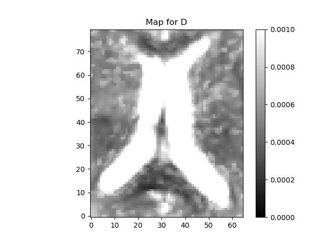
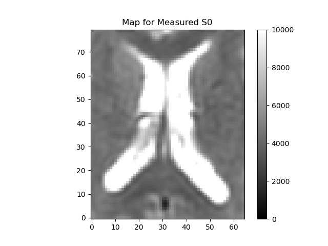
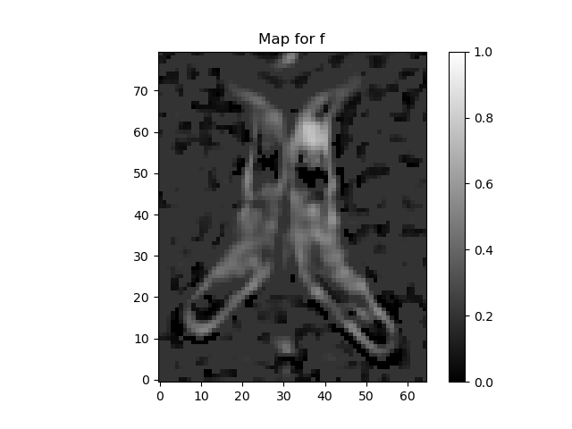
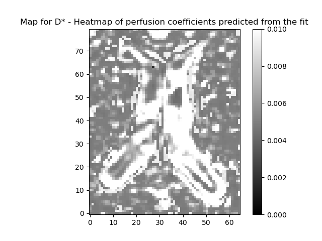
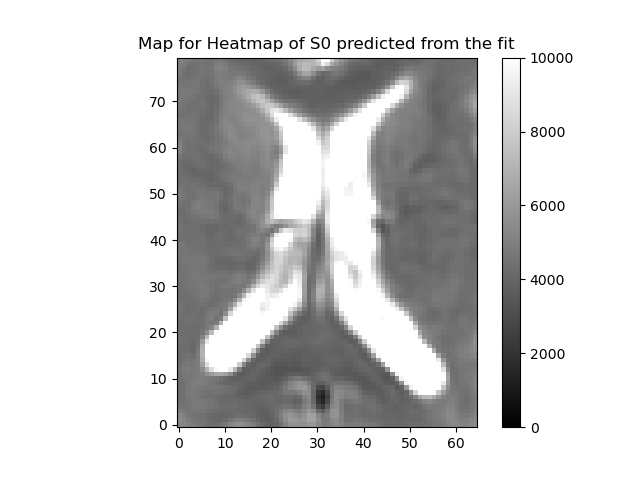
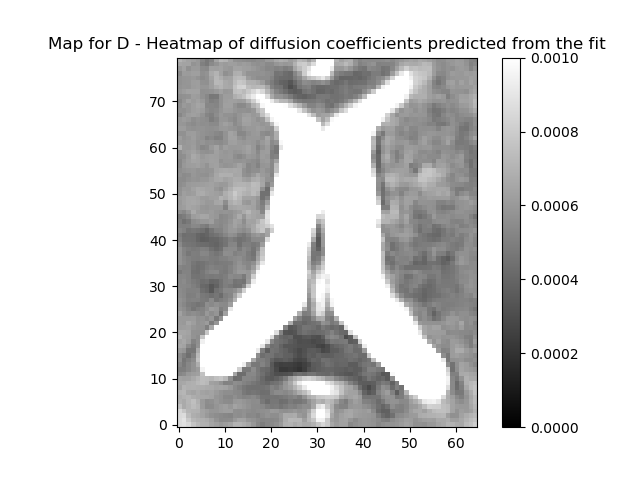
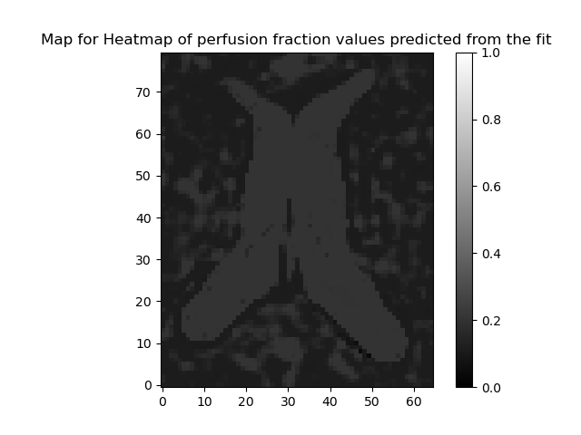

Note
Go to the end to download the full example code
Intravoxel incoherent motion#
The intravoxel incoherent motion (IVIM) model describes diffusion and perfusion in the signal acquired with a diffusion MRI sequence that contains multiple low b-values. The IVIM model can be understood as an adaptation of the work of Stejskal and Tanner [Stejskal65] in biological tissue, and was proposed by Le Bihan [LeBihan84]. The model assumes two compartments: a slow moving compartment, where particles diffuse in a Brownian fashion as a consequence of thermal energy, and a fast moving compartment (the vascular compartment), where blood moves as a consequence of a pressure gradient. In the first compartment, the diffusion coefficient is \(\mathbf{D}\) while in the second compartment, a pseudo diffusion term \(\mathbf{D^*}\) is introduced that describes the displacement of the blood elements in an assumed randomly laid out vascular network, at the macroscopic level. According to [LeBihan84], \(\mathbf{D^*}\) is greater than \(\mathbf{D}\).
The IVIM model expresses the MRI signal as follows:
\[S(b)=S_0(fe^{-bD^*}+(1-f)e^{-bD})\]
where \(\mathbf{b}\) is the diffusion gradient weighing value (which is dependent on the measurement parameters), \(\mathbf{S_{0}}\) is the signal in the absence of diffusion gradient sensitization, \(\mathbf{f}\) is the perfusion fraction, \(\mathbf{D}\) is the diffusion coefficient and \(\mathbf{D^*}\) is the pseudo-diffusion constant, due to vascular contributions.
In the following example we show how to fit the IVIM model on a diffusion-weighted dataset and visualize the diffusion and pseudo-diffusion coefficients. First, we import all relevant modules:
import matplotlib.pyplot as plt
from dipy.reconst.ivim import IvimModel
from dipy.core.gradients import gradient_table
from dipy.data import get_fnames
from dipy.io.gradients import read_bvals_bvecs
from dipy.io.image import load_nifti_data
We get an IVIM dataset using DIPYs data fetcher read_ivim.
This dataset was acquired with 21 b-values in 3 different directions.
Volumes corresponding to different directions were registered to each
other, and averaged across directions. Thus, this dataset has 4 dimensions,
with the length of the last dimension corresponding to the number
of b-values. In order to use this model the data should contain signals
measured at 0 bvalue.
The gtab contains a GradientTable object (information about the gradients
e.g. b-values and b-vectors). We get the data from the file using
load_nifti_data.
data = load_nifti_data(fraw)
bvals, bvecs = read_bvals_bvecs(fbval, fbvec)
gtab = gradient_table(bvals, bvecs, b0_threshold=0)
print('data.shape (%d, %d, %d, %d)' % data.shape)
data.shape (256, 256, 54, 21)
The data has 54 slices, with 256-by-256 voxels in each slice. The fourth dimension corresponds to the b-values in the gtab. Let us visualize the data by taking a slice midway(z=33) at \(\mathbf{b} = 0\).
Heat map of a slice of data
The region around the intersection of the cross-hairs in the figure contains cerebral spinal fluid (CSF), so it should have a very high \(\mathbf{f}\) and \(\mathbf{D^*}\), the area just medial to that is white matter so that should be lower, and the region more laterally contains a mixture of gray matter and CSF. That should give us some contrast to see the values varying across the regions.
Heat map of the CSF slice selected.
Now that we have prepared the datasets we can go forward with
the ivim fit. We provide two methods of fitting the parameters of the IVIM
multi-exponential model explained above. We first fit the model with a simple
fitting approach by passing the option fit_method=trr. This method uses
a two-stage approach: first, a linear fit used to get quick initial guesses
for the parameters \(\mathbf{S_{0}}\) and \(\mathbf{D}\) by considering b-values
greater than split_b_D (default: 400))and assuming a mono-exponential
signal. This is based on the assumption that at high b-values the signal can
be approximated as a mono exponential decay and by taking the logarithm of
the signal values a linear fit can be obtained. Another linear fit for S0
(bvals < split_b_S0 (default: 200)) follows and f is estimated using
\(1 - S0_{prime}/S0\). Then a non-linear least-squares fitting is performed to
fit D_star and f. If the two_stage flag is set to True while
initializing the model, a final non-linear least squares fitting is performed
for all the parameters. All initializations for the model such as
split_b_D are passed while creating the IvimModel. If you are
using Scipy 0.17, you can also set bounds by setting
bounds=([0., 0., 0.,0.], [np.inf, 1., 1., 1.])) while initializing the
IvimModel.
For brevity, we focus on a small section of the slice as selected above, to fit the IVIM model. First, we instantiate the IvimModel object.
C:\Users\skoudoro\Devel\dipy\dipy\reconst\ivim.py:151: UserWarning: Bounds for this fit have been set from experiments and literature survey. To change the bounds, please input your bounds in model definition...
warnings.warn(bounds_warning, UserWarning)
To fit the model, call the fit method and pass the data for fitting.
ivimfit = ivimmodel.fit(data_slice)
0%| | 0/5200 [00:00<?, ?it/s]
0%| | 6/5200 [00:00<01:42, 50.61it/s]
0%| | 12/5200 [00:00<01:45, 49.28it/s]
0%| | 20/5200 [00:00<01:26, 59.63it/s]
1%| | 29/5200 [00:00<01:14, 69.56it/s]
1%| | 39/5200 [00:00<01:06, 77.16it/s]
1%| | 48/5200 [00:00<01:05, 78.71it/s]
1%| | 59/5200 [00:00<00:59, 86.56it/s]
1%| | 68/5200 [00:00<01:01, 83.74it/s]C:\Users\skoudoro\Devel\dipy\dipy\reconst\ivim.py:434: UserWarning: x0 obtained from linear fitting is not feasible as initial guess for leastsq while estimating f and D_star. Using parameters from the linear fit.
warnings.warn(warningMsg, UserWarning)
C:\Users\skoudoro\Devel\dipy\dipy\reconst\ivim.py:507: UserWarning: x0 is unfeasible for leastsq fitting. Returning x0 values from the linear fit.
warnings.warn(warningMsg, UserWarning)
C:\Users\skoudoro\Devel\dipy\dipy\reconst\ivim.py:344: UserWarning: Bounds are violated for leastsq fitting. Returning parameters from linear fit
warnings.warn(warningMsg, UserWarning)
2%| | 78/5200 [00:01<01:02, 81.60it/s]
2%| | 87/5200 [00:01<01:01, 83.38it/s]
2%| | 96/5200 [00:01<00:59, 85.17it/s]
2%| | 105/5200 [00:01<00:59, 85.23it/s]
2%| | 115/5200 [00:01<00:57, 88.38it/s]
2%| | 125/5200 [00:01<00:56, 89.07it/s]
3%| | 134/5200 [00:01<00:57, 88.77it/s]
3%| | 144/5200 [00:01<00:56, 89.84it/s]
3%| | 153/5200 [00:01<00:58, 86.09it/s]
3%| | 162/5200 [00:01<00:57, 86.88it/s]
3%| | 171/5200 [00:02<00:59, 84.52it/s]
3%| | 180/5200 [00:02<01:00, 82.73it/s]
4%| | 189/5200 [00:02<01:00, 82.16it/s]
4%| | 199/5200 [00:02<00:57, 86.30it/s]
4%| | 208/5200 [00:02<00:57, 86.52it/s]
4%| | 218/5200 [00:02<00:55, 90.11it/s]
4%| | 228/5200 [00:02<00:54, 91.29it/s]
5%| | 238/5200 [00:02<00:57, 86.45it/s]
5%| | 247/5200 [00:02<00:57, 86.17it/s]
5%| | 256/5200 [00:03<00:57, 86.17it/s]
5%| | 265/5200 [00:03<01:02, 79.08it/s]
5%| | 275/5200 [00:03<00:59, 83.06it/s]
5%| | 285/5200 [00:03<00:56, 86.87it/s]
6%| | 294/5200 [00:03<00:55, 87.68it/s]
6%| | 304/5200 [00:03<00:54, 90.07it/s]
6%| | 314/5200 [00:03<00:54, 89.46it/s]
6%| | 324/5200 [00:03<00:53, 90.31it/s]
7%| | 339/5200 [00:03<00:46, 104.72it/s]
7%| | 350/5200 [00:04<00:49, 97.76it/s]
7%| | 361/5200 [00:04<00:48, 100.27it/s]
7%| | 372/5200 [00:04<00:48, 98.71it/s]
7%| | 383/5200 [00:04<00:48, 99.26it/s]
8%| | 393/5200 [00:04<00:48, 99.35it/s]
8%| | 403/5200 [00:04<00:49, 97.43it/s]
8%| | 415/5200 [00:04<00:46, 102.87it/s]
8%| | 426/5200 [00:04<00:47, 100.45it/s]
8%| | 439/5200 [00:04<00:44, 106.00it/s]
9%| | 450/5200 [00:05<00:45, 104.94it/s]
9%| | 461/5200 [00:05<00:45, 103.28it/s]
9%| | 472/5200 [00:05<00:48, 97.84it/s]
9%| | 482/5200 [00:05<00:48, 96.46it/s]
9%| | 492/5200 [00:05<00:48, 96.80it/s]
10%| | 508/5200 [00:05<00:41, 112.23it/s]
10%| | 520/5200 [00:05<00:42, 110.01it/s]
10%| | 532/5200 [00:05<00:45, 103.18it/s]
10%| | 543/5200 [00:05<00:48, 96.92it/s]
11%| | 553/5200 [00:06<00:50, 91.40it/s]
11%| | 564/5200 [00:06<00:49, 93.93it/s]
11%| | 583/5200 [00:06<00:39, 115.83it/s]
11%| | 595/5200 [00:06<00:41, 110.88it/s]
12%| | 607/5200 [00:06<00:42, 108.39it/s]
12%| | 618/5200 [00:06<00:42, 108.10it/s]
12%| | 629/5200 [00:06<00:46, 98.70it/s]
12%| | 640/5200 [00:06<00:48, 94.80it/s]
12%| | 650/5200 [00:07<00:47, 95.04it/s]
13%| | 670/5200 [00:07<00:37, 119.50it/s]
13%| | 683/5200 [00:07<00:39, 113.86it/s]
13%| | 695/5200 [00:07<00:39, 112.97it/s]
14%| | 707/5200 [00:07<00:45, 99.18it/s]
14%| | 718/5200 [00:07<00:47, 93.81it/s]
14%| | 728/5200 [00:07<00:48, 91.37it/s]
14%| | 744/5200 [00:07<00:41, 107.81it/s]
15%| | 756/5200 [00:08<00:40, 108.71it/s]
15%| | 768/5200 [00:08<00:40, 108.69it/s]
15%| | 780/5200 [00:08<00:42, 103.55it/s]
15%| | 791/5200 [00:08<00:46, 94.84it/s]
15%| | 801/5200 [00:08<00:48, 90.69it/s]
16%| | 811/5200 [00:08<00:48, 91.35it/s]
16%| | 826/5200 [00:08<00:41, 106.14it/s]
16%| | 837/5200 [00:08<00:42, 102.05it/s]
16%| | 848/5200 [00:08<00:42, 102.94it/s]
17%| | 859/5200 [00:09<00:43, 100.03it/s]
17%| | 870/5200 [00:09<00:44, 96.29it/s]
17%| | 880/5200 [00:09<00:45, 94.88it/s]
17%| | 896/5200 [00:09<00:39, 108.06it/s]
18%| | 910/5200 [00:09<00:37, 114.49it/s]
18%| | 922/5200 [00:09<00:38, 111.00it/s]
18%| | 934/5200 [00:09<00:39, 107.98it/s]
18%| | 945/5200 [00:09<00:40, 105.96it/s]
18%| | 956/5200 [00:10<00:43, 96.75it/s]
19%| | 967/5200 [00:10<00:42, 99.57it/s]
19%| | 989/5200 [00:10<00:32, 131.34it/s]
19%| | 1003/5200 [00:10<00:33, 125.53it/s]
20%| | 1016/5200 [00:10<00:35, 116.51it/s]
20%| | 1028/5200 [00:10<00:41, 101.29it/s]
20%| | 1039/5200 [00:10<00:42, 98.01it/s]
20%| | 1050/5200 [00:10<00:44, 94.31it/s]
21%| | 1074/5200 [00:10<00:31, 130.12it/s]
21%| | 1088/5200 [00:11<00:34, 119.39it/s]
21%| | 1101/5200 [00:11<00:36, 113.59it/s]
21%| | 1113/5200 [00:11<00:42, 95.79it/s]
22%| | 1124/5200 [00:11<00:44, 91.41it/s]
22%| | 1139/5200 [00:11<00:40, 100.85it/s]
22%| | 1156/5200 [00:11<00:34, 116.88it/s]
22%| | 1169/5200 [00:11<00:37, 107.49it/s]
23%| | 1181/5200 [00:12<00:38, 104.31it/s]
23%| | 1192/5200 [00:12<00:40, 97.84it/s]
23%| | 1203/5200 [00:12<00:44, 90.03it/s]
23%| | 1213/5200 [00:12<00:43, 90.99it/s]
24%| | 1234/5200 [00:12<00:32, 120.89it/s]
24%| | 1247/5200 [00:12<00:37, 106.71it/s]
24%| | 1259/5200 [00:12<00:37, 105.72it/s]
24%| | 1271/5200 [00:13<00:46, 84.93it/s]
25%| | 1281/5200 [00:13<00:46, 83.39it/s]
25%| | 1292/5200 [00:13<00:44, 87.78it/s]
25%| | 1316/5200 [00:13<00:31, 124.25it/s]
26%| | 1330/5200 [00:13<00:33, 116.25it/s]
26%| | 1343/5200 [00:13<00:37, 103.12it/s]
26%| | 1355/5200 [00:13<00:39, 97.80it/s]
26%| | 1366/5200 [00:13<00:41, 91.72it/s]
26%| | 1376/5200 [00:14<00:41, 92.49it/s]
27%| | 1403/5200 [00:14<00:28, 133.69it/s]
27%| | 1418/5200 [00:14<00:31, 119.25it/s]
28%| | 1431/5200 [00:14<00:31, 121.13it/s]
28%| | 1444/5200 [00:14<00:33, 113.39it/s]
28%| | 1456/5200 [00:14<00:33, 110.33it/s]
29%| | 1487/5200 [00:14<00:23, 158.06it/s]
29%| | 1504/5200 [00:15<00:29, 126.13it/s]
29%| | 1519/5200 [00:15<00:29, 125.70it/s]
29%| | 1533/5200 [00:15<00:31, 116.72it/s]
30%| | 1563/5200 [00:15<00:23, 157.64it/s]
30%| | 1581/5200 [00:15<00:26, 138.52it/s]
31%| | 1597/5200 [00:15<00:26, 134.94it/s]
31%| | 1612/5200 [00:15<00:28, 126.03it/s]
31%| | 1631/5200 [00:15<00:25, 140.98it/s]
32%| | 1659/5200 [00:16<00:20, 174.43it/s]
32%| | 1678/5200 [00:16<00:25, 140.84it/s]
33%| | 1694/5200 [00:16<00:26, 130.23it/s]
34%| | 1742/5200 [00:16<00:17, 202.29it/s]
34%| | 1765/5200 [00:16<00:21, 163.13it/s]
34%| | 1784/5200 [00:16<00:21, 158.29it/s]
35%| | 1836/5200 [00:16<00:14, 236.45it/s]
36%| | 1864/5200 [00:17<00:18, 178.50it/s]
36%| | 1893/5200 [00:17<00:16, 199.57it/s]
37%| | 1918/5200 [00:17<00:15, 210.01it/s]
37%| | 1943/5200 [00:17<00:21, 154.20it/s]
38%| | 1972/5200 [00:17<00:18, 175.86it/s]
38%| | 1994/5200 [00:17<00:18, 170.61it/s]
39%| | 2014/5200 [00:18<00:23, 135.90it/s]
39%| | 2031/5200 [00:18<00:23, 133.12it/s]
40%| | 2072/5200 [00:18<00:16, 187.72it/s]
40%| | 2095/5200 [00:18<00:21, 144.19it/s]
41%| | 2117/5200 [00:18<00:19, 158.46it/s]
41%| | 2152/5200 [00:18<00:15, 198.26it/s]
42%| | 2176/5200 [00:19<00:19, 154.74it/s]
42%| | 2196/5200 [00:19<00:18, 163.26it/s]
43%| | 2229/5200 [00:19<00:14, 199.81it/s]
43%| | 2253/5200 [00:19<00:18, 158.72it/s]
44%| | 2273/5200 [00:19<00:22, 127.61it/s]
44%| | 2309/5200 [00:19<00:17, 167.56it/s]
45%| | 2331/5200 [00:20<00:19, 147.56it/s]
45%| | 2350/5200 [00:20<00:22, 124.44it/s]
46%| | 2387/5200 [00:20<00:16, 167.80it/s]
46%| | 2409/5200 [00:20<00:17, 162.57it/s]
47%| | 2429/5200 [00:20<00:18, 150.14it/s]
47%| | 2466/5200 [00:20<00:14, 194.03it/s]
48%| | 2489/5200 [00:21<00:14, 184.36it/s]
48%| | 2510/5200 [00:21<00:16, 160.54it/s]
49%| | 2548/5200 [00:21<00:13, 200.51it/s]
49%| | 2571/5200 [00:21<00:13, 189.17it/s]
50%| | 2592/5200 [00:21<00:16, 158.90it/s]
51%| | 2629/5200 [00:21<00:12, 203.70it/s]
51%| | 2653/5200 [00:21<00:14, 173.55it/s]
51%| | 2674/5200 [00:22<00:16, 156.42it/s]
52%| | 2710/5200 [00:22<00:12, 196.20it/s]
53%| | 2733/5200 [00:22<00:15, 162.87it/s]
53%| | 2753/5200 [00:22<00:14, 167.30it/s]
54%| | 2791/5200 [00:22<00:11, 211.00it/s]
54%| | 2815/5200 [00:22<00:15, 154.42it/s]
55%| | 2835/5200 [00:23<00:14, 162.69it/s]
55%| | 2875/5200 [00:23<00:10, 213.04it/s]
56%| | 2901/5200 [00:23<00:14, 157.42it/s]
57%| | 2954/5200 [00:23<00:09, 224.66it/s]
57%| | 2983/5200 [00:23<00:12, 176.75it/s]
58%| | 3032/5200 [00:23<00:09, 230.91it/s]
59%| | 3063/5200 [00:24<00:11, 191.68it/s]
59%| | 3089/5200 [00:24<00:10, 198.96it/s]
60%| | 3120/5200 [00:24<00:09, 221.54it/s]
61%| | 3147/5200 [00:24<00:11, 183.30it/s]
61%| | 3192/5200 [00:24<00:08, 234.03it/s]
62%| | 3221/5200 [00:24<00:10, 194.63it/s]
63%| | 3267/5200 [00:25<00:07, 244.40it/s]
63%| | 3297/5200 [00:25<00:09, 191.32it/s]
65%| | 3356/5200 [00:25<00:07, 263.38it/s]
65%| | 3390/5200 [00:25<00:07, 236.36it/s]
66%| | 3432/5200 [00:25<00:06, 267.46it/s]
67%| | 3464/5200 [00:25<00:08, 194.65it/s]
67%| | 3494/5200 [00:26<00:08, 207.84it/s]
68%| | 3520/5200 [00:26<00:08, 189.20it/s]
68%| | 3543/5200 [00:26<00:09, 166.56it/s]
69%| | 3565/5200 [00:26<00:09, 175.06it/s]
69%| | 3585/5200 [00:26<00:10, 153.57it/s]
69%| | 3603/5200 [00:26<00:10, 145.55it/s]
70%| | 3619/5200 [00:26<00:10, 145.68it/s]
70%| | 3641/5200 [00:27<00:09, 157.56it/s]
70%| | 3658/5200 [00:27<00:11, 137.99it/s]
71%| | 3673/5200 [00:27<00:11, 138.39it/s]
71%| | 3688/5200 [00:27<00:12, 122.03it/s]
71%| | 3711/5200 [00:27<00:10, 146.11it/s]
72%| | 3727/5200 [00:27<00:11, 133.20it/s]
72%| | 3742/5200 [00:27<00:11, 123.50it/s]
72%| | 3756/5200 [00:28<00:11, 125.63it/s]
72%| | 3770/5200 [00:28<00:11, 124.44it/s]
73%| | 3793/5200 [00:28<00:09, 148.20it/s]
73%| | 3809/5200 [00:28<00:11, 123.52it/s]
74%| | 3823/5200 [00:28<00:12, 110.82it/s]
74%| | 3836/5200 [00:28<00:12, 112.73it/s]
74%| | 3848/5200 [00:28<00:12, 109.91it/s]
74%| | 3874/5200 [00:28<00:09, 144.79it/s]
75%| | 3890/5200 [00:29<00:09, 134.14it/s]
75%| | 3905/5200 [00:29<00:11, 112.80it/s]
75%| | 3918/5200 [00:29<00:11, 113.24it/s]
76%| | 3934/5200 [00:29<00:10, 122.79it/s]
76%| | 3955/5200 [00:29<00:08, 142.37it/s]
76%| | 3970/5200 [00:29<00:10, 116.74it/s]
77%| | 3983/5200 [00:29<00:11, 108.12it/s]
77%| | 3995/5200 [00:30<00:11, 104.93it/s]
77%| | 4008/5200 [00:30<00:10, 109.87it/s]
78%| | 4032/5200 [00:30<00:08, 137.28it/s]
78%| | 4047/5200 [00:30<00:09, 118.45it/s]
78%| | 4060/5200 [00:30<00:10, 103.82it/s]
78%| | 4072/5200 [00:30<00:11, 97.67it/s]
79%| | 4083/5200 [00:30<00:11, 98.19it/s]
79%| | 4105/5200 [00:31<00:08, 125.17it/s]
79%| | 4119/5200 [00:31<00:09, 112.86it/s]
79%| | 4131/5200 [00:31<00:09, 108.20it/s]
80%| | 4143/5200 [00:31<00:10, 100.18it/s]
80%| | 4154/5200 [00:31<00:10, 96.40it/s]
80%| | 4164/5200 [00:31<00:10, 95.34it/s]
80%| | 4174/5200 [00:31<00:15, 66.32it/s]
81%| | 4188/5200 [00:32<00:12, 80.57it/s]
81%| | 4198/5200 [00:32<00:12, 82.41it/s]
81%| | 4208/5200 [00:32<00:11, 83.11it/s]
81%| | 4218/5200 [00:32<00:12, 81.39it/s]
81%| | 4228/5200 [00:32<00:11, 84.20it/s]
81%| | 4237/5200 [00:32<00:11, 85.15it/s]
82%| | 4253/5200 [00:32<00:09, 102.48it/s]
82%| | 4268/5200 [00:32<00:08, 113.43it/s]
82%| | 4280/5200 [00:32<00:08, 114.80it/s]
83%| | 4292/5200 [00:33<00:08, 102.98it/s]
83%| | 4303/5200 [00:33<00:08, 101.26it/s]
83%| | 4314/5200 [00:33<00:09, 93.08it/s]
83%| | 4324/5200 [00:33<00:09, 90.38it/s]
84%| | 4342/5200 [00:33<00:07, 109.41it/s]
84%| | 4354/5200 [00:33<00:07, 107.79it/s]
84%| | 4365/5200 [00:33<00:08, 98.59it/s]
84%| | 4376/5200 [00:33<00:08, 97.17it/s]
84%| | 4386/5200 [00:34<00:08, 92.53it/s]
85%| | 4396/5200 [00:34<00:08, 91.52it/s]
85%| | 4410/5200 [00:34<00:07, 101.55it/s]
85%| | 4423/5200 [00:34<00:07, 107.09it/s]
85%| | 4434/5200 [00:34<00:07, 104.04it/s]
85%| | 4445/5200 [00:34<00:11, 68.41it/s]
86%| | 4454/5200 [00:34<00:10, 72.25it/s]
86%| | 4463/5200 [00:35<00:09, 75.60it/s]
86%| | 4472/5200 [00:35<00:09, 78.59it/s]
86%| | 4482/5200 [00:35<00:08, 83.32it/s]
87%| | 4503/5200 [00:35<00:06, 114.91it/s]
87%| | 4516/5200 [00:35<00:06, 109.93it/s]
87%| | 4528/5200 [00:35<00:06, 106.67it/s]
87%| | 4540/5200 [00:35<00:06, 103.25it/s]
88%| | 4551/5200 [00:35<00:06, 98.26it/s]
88%| | 4562/5200 [00:35<00:06, 99.36it/s]
88%| | 4581/5200 [00:36<00:05, 123.31it/s]
88%| | 4594/5200 [00:36<00:05, 112.20it/s]
89%| | 4606/5200 [00:36<00:05, 108.19it/s]
89%| | 4618/5200 [00:36<00:05, 101.38it/s]
89%| | 4629/5200 [00:36<00:05, 98.69it/s]
89%| | 4640/5200 [00:36<00:05, 101.21it/s]
89%| | 4652/5200 [00:36<00:05, 104.82it/s]
90%| | 4663/5200 [00:36<00:05, 98.79it/s]
90%| | 4674/5200 [00:36<00:05, 98.49it/s]
90%| | 4684/5200 [00:37<00:05, 95.46it/s]
90%| | 4694/5200 [00:37<00:05, 93.02it/s]
90%| | 4704/5200 [00:37<00:05, 92.32it/s]
91%| | 4715/5200 [00:37<00:05, 93.19it/s]
91%| | 4725/5200 [00:37<00:05, 94.97it/s]
91%| | 4735/5200 [00:37<00:05, 85.11it/s]
91%| | 4745/5200 [00:37<00:05, 86.94it/s]
91%| | 4756/5200 [00:37<00:04, 90.35it/s]
92%| | 4766/5200 [00:38<00:04, 89.78it/s]
92%| | 4776/5200 [00:38<00:04, 86.11it/s]
92%| | 4786/5200 [00:38<00:04, 89.19it/s]
92%| | 4796/5200 [00:38<00:04, 85.04it/s]
92%| | 4807/5200 [00:38<00:04, 89.65it/s]
93%| | 4817/5200 [00:38<00:04, 92.09it/s]
93%| | 4827/5200 [00:38<00:04, 92.76it/s]
93%| | 4837/5200 [00:38<00:04, 90.61it/s]
93%| | 4847/5200 [00:38<00:03, 92.60it/s]
93%| | 4857/5200 [00:39<00:03, 92.76it/s]
94%| | 4871/5200 [00:39<00:03, 104.83it/s]
94%| | 4882/5200 [00:39<00:03, 97.80it/s]
94%| | 4892/5200 [00:39<00:03, 96.99it/s]
94%| | 4902/5200 [00:39<00:03, 97.45it/s]
94%| | 4913/5200 [00:39<00:02, 98.94it/s]
95%| | 4925/5200 [00:39<00:02, 103.07it/s]
95%| | 4937/5200 [00:39<00:02, 105.03it/s]
95%| | 4948/5200 [00:39<00:02, 103.68it/s]
95%| | 4959/5200 [00:40<00:02, 98.88it/s]
96%| | 4969/5200 [00:40<00:02, 96.70it/s]
96%| | 4979/5200 [00:40<00:02, 93.85it/s]
96%| | 4989/5200 [00:40<00:02, 93.14it/s]
96%| | 4999/5200 [00:40<00:02, 92.34it/s]
96%| | 5010/5200 [00:40<00:01, 96.88it/s]
97%| | 5020/5200 [00:40<00:01, 91.94it/s]
97%| | 5030/5200 [00:40<00:01, 93.53it/s]
97%| | 5040/5200 [00:40<00:01, 90.19it/s]
97%| | 5050/5200 [00:41<00:01, 88.37it/s]
97%| | 5060/5200 [00:41<00:01, 88.76it/s]
98%| | 5070/5200 [00:41<00:01, 91.21it/s]
98%| | 5080/5200 [00:41<00:01, 87.92it/s]
98%| | 5090/5200 [00:41<00:01, 89.31it/s]
98%| | 5099/5200 [00:41<00:01, 88.76it/s]
98%| | 5110/5200 [00:41<00:00, 93.06it/s]
98%| | 5120/5200 [00:41<00:00, 85.49it/s]
99%| | 5130/5200 [00:41<00:00, 88.04it/s]
99%| | 5140/5200 [00:42<00:00, 89.02it/s]
99%| | 5149/5200 [00:42<00:00, 88.95it/s]
99%| | 5159/5200 [00:42<00:00, 89.44it/s]
99%|| 5168/5200 [00:42<00:00, 88.70it/s]
100%|| 5177/5200 [00:42<00:00, 88.97it/s]
100%|| 5186/5200 [00:42<00:00, 89.19it/s]
100%|| 5195/5200 [00:42<00:00, 84.41it/s]
100%|| 5200/5200 [00:42<00:00, 121.67it/s]
The fit method creates a IvimFit object which contains the parameters of the model obtained after fitting. These are accessible through the model_params attribute of the IvimFit object. The parameters are arranged as a 4D array, corresponding to the spatial dimensions of the data, and the last dimension (of length 4) corresponding to the model parameters according to the following order : \(\mathbf{S_{0}, f, D^*, D}\).
ivimparams = ivimfit.model_params
print("ivimparams.shape : {}".format(ivimparams.shape))
ivimparams.shape : (65, 80, 4)
As we see, we have a 20x20 slice at the height z = 33. Thus we have 400 voxels. We will now plot the parameters obtained from the fit for a voxel and also various maps for the entire slice. This will give us an idea about the diffusion and perfusion in that section. Let(i, j) denote the coordinate of the voxel. We have already fixed the z component as 33 and hence we will get a slice which is 33 units above.
[3.97863107e+03 2.00000000e-01 1.69393990e-03 6.71052513e-04]
Now we can map the perfusion and diffusion maps for the slice. We
will plot a heatmap showing the values using a colormap. It will be
useful to define a plotting function for the heatmap here since we
will use it to plot for all the IVIM parameters. We will need to specify
the lower and upper limits for our data. For example, the perfusion
fractions should be in the range (0,1). Similarly, the diffusion and
pseudo-diffusion constants are much smaller than 1. We pass an argument
called variable to out plotting function which gives the label for
the plot.
def plot_map(raw_data, variable, limits, filename):
fig, ax = plt.subplots(1)
lower, upper = limits
ax.set_title('Map for {}'.format(variable))
im = ax.imshow(raw_data.T, origin='lower', clim=(lower, upper),
cmap="gray", interpolation='nearest')
fig.colorbar(im)
fig.savefig(filename)
Let us get the various plots with fit_method = trr so that we can visualize them in one page
plot_map(ivimfit.S0_predicted, "Predicted S0", (0, 10000), "predicted_S0.png")
plot_map(data_slice[:, :, 0], "Measured S0", (0, 10000), "measured_S0.png")
plot_map(ivimfit.perfusion_fraction, "f", (0, 1), "perfusion_fraction.png")
plot_map(ivimfit.D_star, "D*", (0, 0.01), "perfusion_coeff.png")
plot_map(ivimfit.D, "D", (0, 0.001), "diffusion_coeff.png")


- 
- 
- 
Next, we will fit the same model with a more refined optimization process with fit_method=VarPro (for Variable Projection). The VarPro computes the IVIM parameters using the MIX approach [Farooq16]. This algorithm uses three different optimizers. It starts with a differential evolution algorithm and fits the parameters in the power of exponentials. Then the fitted parameters in the first step are utilized to make a linear convex problem. Using a convex optimization, the volume fractions are determined. The last step is non-linear least-squares fitting on all the parameters. The results of the first and second optimizers are utilized as the initial values for the last step of the algorithm.
As opposed to the trr fitting method, this approach does not need to set any thresholds on the bvals to differentiate between the perfusion (pseudo-diffusion) and diffusion portions and fits the parameters simultaneously. Making use of the three step optimization mentioned above increases the convergence basin for fitting the multi-exponential functions of microstructure models. This method has been described in further detail in [Fadnavis19] and [Farooq16].
ivimmodel_vp = IvimModel(gtab, fit_method='VarPro')
ivimfit_vp = ivimmodel_vp.fit(data_slice)
C:\Users\skoudoro\Devel\dipy\dipy\reconst\ivim.py:157: UserWarning: Bounds for this fit have been set from experiments and literature survey. To change the bounds, please input your bounds in model definition...
warnings.warn(bounds_warning, UserWarning)
0%| | 0/5200 [00:00<?, ?it/s]
0%| | 1/5200 [00:00<23:08, 3.75it/s]
0%| | 2/5200 [00:00<14:58, 5.78it/s]
0%| | 3/5200 [00:00<15:36, 5.55it/s]
0%| | 4/5200 [00:00<16:14, 5.33it/s]
0%| | 5/5200 [00:00<15:33, 5.57it/s]
0%| | 6/5200 [00:01<14:51, 5.83it/s]
0%| | 7/5200 [00:01<15:41, 5.51it/s]
0%| | 8/5200 [00:01<15:14, 5.68it/s]
0%| | 9/5200 [00:01<15:28, 5.59it/s]
0%| | 10/5200 [00:01<15:43, 5.50it/s]
0%| | 11/5200 [00:01<14:39, 5.90it/s]
0%| | 12/5200 [00:02<13:32, 6.38it/s]
0%| | 13/5200 [00:02<14:23, 6.01it/s]
0%| | 14/5200 [00:02<12:59, 6.65it/s]
0%| | 15/5200 [00:02<13:36, 6.35it/s]
0%| | 16/5200 [00:02<13:59, 6.17it/s]
0%| | 17/5200 [00:02<14:11, 6.09it/s]
0%| | 18/5200 [00:03<14:06, 6.12it/s]
0%| | 19/5200 [00:03<13:44, 6.28it/s]
0%| | 20/5200 [00:03<14:22, 6.00it/s]
0%| | 21/5200 [00:03<14:38, 5.90it/s]
0%| | 22/5200 [00:03<14:25, 5.98it/s]
0%| | 23/5200 [00:03<14:47, 5.83it/s]
0%| | 24/5200 [00:04<15:35, 5.54it/s]
0%| | 25/5200 [00:04<15:48, 5.45it/s]
0%| | 26/5200 [00:04<15:33, 5.54it/s]
1%| | 27/5200 [00:04<15:42, 5.49it/s]
1%| | 28/5200 [00:04<16:05, 5.36it/s]
1%| | 29/5200 [00:05<16:10, 5.33it/s]
1%| | 30/5200 [00:05<15:31, 5.55it/s]
1%| | 31/5200 [00:05<15:53, 5.42it/s]
1%| | 32/5200 [00:05<15:32, 5.54it/s]
1%| | 33/5200 [00:05<15:07, 5.69it/s]
1%| | 34/5200 [00:05<14:54, 5.77it/s]
1%| | 35/5200 [00:06<15:27, 5.57it/s]
1%| | 36/5200 [00:06<15:38, 5.50it/s]
1%| | 38/5200 [00:06<14:05, 6.10it/s]
1%| | 39/5200 [00:06<12:58, 6.63it/s]
1%| | 40/5200 [00:06<13:54, 6.19it/s]
1%| | 41/5200 [00:07<14:34, 5.90it/s]
1%| | 42/5200 [00:07<15:04, 5.70it/s]
1%| | 43/5200 [00:07<14:37, 5.88it/s]
1%| | 44/5200 [00:07<15:16, 5.62it/s]
1%| | 45/5200 [00:07<14:56, 5.75it/s]
1%| | 46/5200 [00:07<14:49, 5.80it/s]
1%| | 47/5200 [00:08<15:21, 5.59it/s]
1%| | 48/5200 [00:08<15:36, 5.50it/s]
1%| | 49/5200 [00:08<13:54, 6.17it/s]
1%| | 50/5200 [00:08<14:37, 5.87it/s]
1%| | 51/5200 [00:08<13:18, 6.45it/s]
1%| | 52/5200 [00:08<14:08, 6.06it/s]
1%| | 53/5200 [00:09<15:00, 5.72it/s]
1%| | 54/5200 [00:09<15:39, 5.47it/s]
1%| | 55/5200 [00:09<16:03, 5.34it/s]
1%| | 56/5200 [00:09<16:06, 5.32it/s]
1%| | 57/5200 [00:09<16:10, 5.30it/s]
1%| | 58/5200 [00:10<16:29, 5.20it/s]
1%| | 59/5200 [00:10<16:24, 5.22it/s]
1%| | 60/5200 [00:10<15:53, 5.39it/s]
1%| | 61/5200 [00:10<16:16, 5.26it/s]
1%| | 62/5200 [00:10<14:41, 5.83it/s]
1%| | 63/5200 [00:10<13:13, 6.47it/s]
1%| | 64/5200 [00:11<14:15, 6.00it/s]
1%| | 65/5200 [00:11<15:01, 5.70it/s]
1%| | 66/5200 [00:11<13:18, 6.43it/s]
1%| | 67/5200 [00:11<12:19, 6.94it/s]
1%| | 68/5200 [00:11<13:31, 6.32it/s]
1%| | 69/5200 [00:11<13:44, 6.22it/s]
1%| | 70/5200 [00:12<14:16, 5.99it/s]
1%| | 71/5200 [00:12<15:05, 5.66it/s]
1%| | 72/5200 [00:12<15:01, 5.69it/s]
1%| | 73/5200 [00:12<14:23, 5.94it/s]
1%| | 74/5200 [00:12<14:23, 5.94it/s]
1%| | 75/5200 [00:12<14:40, 5.82it/s]
1%| | 76/5200 [00:13<15:07, 5.65it/s]
1%| | 77/5200 [00:13<15:29, 5.51it/s]
2%| | 78/5200 [00:13<15:16, 5.59it/s]
2%| | 79/5200 [00:13<15:25, 5.53it/s]
2%| | 80/5200 [00:13<15:08, 5.64it/s]
2%| | 81/5200 [00:14<15:44, 5.42it/s]
2%| | 82/5200 [00:14<13:48, 6.18it/s]
2%| | 84/5200 [00:14<12:46, 6.68it/s]
2%| | 85/5200 [00:14<12:43, 6.70it/s]
2%| | 86/5200 [00:14<13:31, 6.30it/s]
2%| | 87/5200 [00:14<14:25, 5.91it/s]
2%| | 88/5200 [00:15<14:56, 5.70it/s]
2%| | 89/5200 [00:15<15:12, 5.60it/s]
2%| | 90/5200 [00:15<15:08, 5.63it/s]
2%| | 91/5200 [00:15<14:26, 5.89it/s]
2%| | 92/5200 [00:15<14:27, 5.89it/s]
2%| | 93/5200 [00:16<14:59, 5.68it/s]
2%| | 94/5200 [00:16<15:18, 5.56it/s]
2%| | 95/5200 [00:16<14:16, 5.96it/s]
2%| | 96/5200 [00:16<14:51, 5.73it/s]
2%| | 97/5200 [00:16<15:03, 5.65it/s]
2%| | 98/5200 [00:16<15:19, 5.55it/s]
2%| | 99/5200 [00:17<13:33, 6.27it/s]
2%| | 100/5200 [00:17<13:52, 6.13it/s]
2%| | 101/5200 [00:17<14:17, 5.94it/s]
2%| | 102/5200 [00:17<14:48, 5.74it/s]
2%| | 103/5200 [00:17<14:30, 5.85it/s]
2%| | 104/5200 [00:17<14:19, 5.93it/s]
2%| | 105/5200 [00:18<14:45, 5.75it/s]
2%| | 107/5200 [00:18<12:04, 7.03it/s]
2%| | 108/5200 [00:18<12:50, 6.61it/s]
2%| | 109/5200 [00:18<13:41, 6.20it/s]
2%| | 110/5200 [00:18<14:27, 5.87it/s]
2%| | 111/5200 [00:19<15:08, 5.60it/s]
2%| | 112/5200 [00:19<15:21, 5.52it/s]
2%| | 113/5200 [00:19<15:38, 5.42it/s]
2%| | 114/5200 [00:19<15:57, 5.31it/s]
2%| | 115/5200 [00:19<15:52, 5.34it/s]
2%| | 116/5200 [00:20<16:04, 5.27it/s]
2%| | 117/5200 [00:20<16:05, 5.26it/s]
2%| | 118/5200 [00:20<15:37, 5.42it/s]
2%| | 119/5200 [00:20<14:00, 6.05it/s]
2%| | 120/5200 [00:20<14:49, 5.71it/s]
2%| | 121/5200 [00:20<14:55, 5.67it/s]
2%| | 122/5200 [00:21<13:51, 6.10it/s]
2%| | 123/5200 [00:21<14:17, 5.92it/s]
2%| | 124/5200 [00:21<14:36, 5.79it/s]
2%| | 125/5200 [00:21<13:53, 6.09it/s]
2%| | 126/5200 [00:21<13:49, 6.12it/s]
2%| | 127/5200 [00:21<13:42, 6.17it/s]
2%| | 128/5200 [00:22<15:09, 5.58it/s]
2%| | 129/5200 [00:22<15:28, 5.46it/s]
2%| | 130/5200 [00:22<15:34, 5.42it/s]
3%| | 131/5200 [00:22<16:24, 5.15it/s]
3%| | 132/5200 [00:22<16:35, 5.09it/s]
3%| | 133/5200 [00:23<14:50, 5.69it/s]
3%| | 134/5200 [00:23<13:14, 6.38it/s]
3%| | 135/5200 [00:23<14:05, 5.99it/s]
3%| | 136/5200 [00:23<13:10, 6.40it/s]
3%| | 137/5200 [00:23<13:51, 6.09it/s]
3%| | 138/5200 [00:23<14:39, 5.76it/s]
3%| | 139/5200 [00:24<15:11, 5.55it/s]
3%| | 140/5200 [00:24<13:47, 6.12it/s]
3%| | 141/5200 [00:24<14:33, 5.79it/s]
3%| | 142/5200 [00:24<15:00, 5.62it/s]
3%| | 143/5200 [00:24<15:18, 5.50it/s]
3%| | 144/5200 [00:24<16:13, 5.19it/s]
3%| | 145/5200 [00:25<15:41, 5.37it/s]
3%| | 146/5200 [00:25<15:46, 5.34it/s]
3%| | 147/5200 [00:25<15:53, 5.30it/s]
3%| | 148/5200 [00:25<15:53, 5.30it/s]
3%| | 149/5200 [00:25<15:55, 5.29it/s]
3%| | 150/5200 [00:25<14:18, 5.88it/s]
3%| | 151/5200 [00:26<13:00, 6.47it/s]
3%| | 152/5200 [00:26<13:33, 6.20it/s]
3%| | 153/5200 [00:26<13:25, 6.27it/s]
3%| | 154/5200 [00:26<13:28, 6.24it/s]
3%| | 155/5200 [00:26<13:33, 6.20it/s]
3%| | 156/5200 [00:26<13:55, 6.04it/s]
3%| | 157/5200 [00:27<12:33, 6.69it/s]
3%| | 158/5200 [00:27<12:24, 6.77it/s]
3%| | 159/5200 [00:27<12:53, 6.52it/s]
3%| | 160/5200 [00:27<12:58, 6.47it/s]
3%| | 161/5200 [00:27<13:36, 6.17it/s]
3%| | 162/5200 [00:27<13:58, 6.01it/s]
3%| | 163/5200 [00:28<13:51, 6.06it/s]
3%| | 164/5200 [00:28<13:27, 6.24it/s]
3%| | 165/5200 [00:28<13:35, 6.18it/s]
3%| | 166/5200 [00:28<14:07, 5.94it/s]
3%| | 167/5200 [00:28<14:42, 5.70it/s]
3%| | 168/5200 [00:28<15:05, 5.56it/s]
3%| | 169/5200 [00:29<15:27, 5.42it/s]
3%| | 170/5200 [00:29<14:57, 5.60it/s]
3%| | 171/5200 [00:29<14:44, 5.69it/s]
3%| | 172/5200 [00:29<13:34, 6.18it/s]
3%| | 173/5200 [00:29<13:48, 6.07it/s]
3%| | 175/5200 [00:30<12:41, 6.60it/s]
3%| | 176/5200 [00:30<13:14, 6.32it/s]
3%| | 177/5200 [00:30<12:30, 6.69it/s]
3%| | 178/5200 [00:30<13:32, 6.18it/s]
3%| | 179/5200 [00:30<12:24, 6.74it/s]
3%| | 180/5200 [00:30<13:31, 6.19it/s]
3%| | 181/5200 [00:31<14:10, 5.90it/s]
4%| | 182/5200 [00:31<14:24, 5.80it/s]
4%| | 183/5200 [00:31<14:11, 5.89it/s]
4%| | 184/5200 [00:31<14:01, 5.96it/s]
4%| | 185/5200 [00:31<14:38, 5.71it/s]
4%| | 186/5200 [00:31<14:54, 5.61it/s]
4%| | 187/5200 [00:32<14:52, 5.62it/s]
4%| | 188/5200 [00:32<15:09, 5.51it/s]
4%| | 189/5200 [00:32<15:28, 5.40it/s]
4%| | 190/5200 [00:32<15:38, 5.34it/s]
4%| | 191/5200 [00:32<14:13, 5.87it/s]
4%| | 192/5200 [00:32<14:40, 5.69it/s]
4%| | 193/5200 [00:33<15:09, 5.51it/s]
4%| | 194/5200 [00:33<14:58, 5.57it/s]
4%| | 195/5200 [00:33<15:19, 5.44it/s]
4%| | 196/5200 [00:33<13:51, 6.02it/s]
4%| | 197/5200 [00:33<12:36, 6.61it/s]
4%| | 198/5200 [00:33<13:23, 6.22it/s]
4%| | 199/5200 [00:34<14:06, 5.91it/s]
4%| | 200/5200 [00:34<14:31, 5.74it/s]
4%| | 201/5200 [00:34<14:58, 5.56it/s]
4%| | 202/5200 [00:34<13:02, 6.39it/s]
4%| | 203/5200 [00:34<13:54, 5.99it/s]
4%| | 204/5200 [00:35<14:37, 5.69it/s]
4%| | 205/5200 [00:35<14:01, 5.94it/s]
4%| | 206/5200 [00:35<14:29, 5.74it/s]
4%| | 207/5200 [00:35<14:08, 5.88it/s]
4%| | 208/5200 [00:35<14:18, 5.81it/s]
4%| | 209/5200 [00:35<14:36, 5.69it/s]
4%| | 210/5200 [00:36<15:14, 5.45it/s]
4%| | 211/5200 [00:36<15:30, 5.36it/s]
4%| | 212/5200 [00:36<15:37, 5.32it/s]
4%| | 213/5200 [00:36<15:29, 5.37it/s]
4%| | 214/5200 [00:36<15:36, 5.32it/s]
4%| | 215/5200 [00:36<13:56, 5.96it/s]
4%| | 216/5200 [00:37<14:16, 5.82it/s]
4%| | 217/5200 [00:37<14:38, 5.67it/s]
4%| | 218/5200 [00:37<15:11, 5.47it/s]
4%| | 219/5200 [00:37<14:55, 5.56it/s]
4%| | 220/5200 [00:37<15:04, 5.51it/s]
4%| | 221/5200 [00:38<15:05, 5.50it/s]
4%| | 222/5200 [00:38<14:38, 5.67it/s]
4%| | 223/5200 [00:38<15:07, 5.48it/s]
4%| | 224/5200 [00:38<15:09, 5.47it/s]
4%| | 225/5200 [00:38<15:29, 5.35it/s]
4%| | 226/5200 [00:38<15:12, 5.45it/s]
4%| | 227/5200 [00:39<15:18, 5.41it/s]
4%| | 228/5200 [00:39<15:30, 5.34it/s]
4%| | 229/5200 [00:39<15:40, 5.28it/s]
4%| | 230/5200 [00:39<15:52, 5.22it/s]
4%| | 231/5200 [00:39<15:54, 5.20it/s]
4%| | 232/5200 [00:40<14:00, 5.91it/s]
4%| | 233/5200 [00:40<13:50, 5.98it/s]
4%| | 234/5200 [00:40<13:44, 6.02it/s]
5%| | 235/5200 [00:40<13:19, 6.21it/s]
5%| | 237/5200 [00:40<11:49, 6.99it/s]
5%| | 238/5200 [00:40<11:58, 6.91it/s]
5%| | 239/5200 [00:41<12:02, 6.86it/s]
5%| | 240/5200 [00:41<12:22, 6.68it/s]
5%| | 241/5200 [00:41<13:14, 6.24it/s]
5%| | 242/5200 [00:41<13:24, 6.16it/s]
5%| | 243/5200 [00:41<13:31, 6.11it/s]
5%| | 244/5200 [00:41<14:01, 5.89it/s]
5%| | 245/5200 [00:42<13:26, 6.15it/s]
5%| | 246/5200 [00:42<13:54, 5.94it/s]
5%| | 247/5200 [00:42<12:42, 6.50it/s]
5%| | 248/5200 [00:42<13:34, 6.08it/s]
5%| | 249/5200 [00:42<13:42, 6.02it/s]
5%| | 250/5200 [00:42<13:39, 6.04it/s]
5%| | 251/5200 [00:43<13:28, 6.12it/s]
5%| | 252/5200 [00:43<13:36, 6.06it/s]
5%| | 253/5200 [00:43<13:19, 6.19it/s]
5%| | 254/5200 [00:43<13:11, 6.25it/s]
5%| | 255/5200 [00:43<13:18, 6.19it/s]
5%| | 256/5200 [00:43<13:25, 6.14it/s]
5%| | 257/5200 [00:44<13:26, 6.13it/s]
5%| | 258/5200 [00:44<13:29, 6.11it/s]
5%| | 259/5200 [00:44<14:09, 5.81it/s]
5%| | 260/5200 [00:44<14:34, 5.65it/s]
5%| | 261/5200 [00:44<13:16, 6.20it/s]
5%| | 262/5200 [00:44<13:43, 6.00it/s]
5%| | 263/5200 [00:45<13:43, 6.00it/s]
5%| | 264/5200 [00:45<13:28, 6.11it/s]
5%| | 265/5200 [00:45<13:20, 6.16it/s]
5%| | 266/5200 [00:45<14:05, 5.84it/s]
5%| | 267/5200 [00:45<12:48, 6.42it/s]
5%| | 268/5200 [00:45<13:45, 5.98it/s]
5%| | 269/5200 [00:46<14:23, 5.71it/s]
5%| | 270/5200 [00:46<14:45, 5.57it/s]
5%| | 271/5200 [00:46<15:02, 5.46it/s]
5%| | 272/5200 [00:46<15:08, 5.43it/s]
5%| | 273/5200 [00:46<15:22, 5.34it/s]
5%| | 274/5200 [00:47<14:52, 5.52it/s]
5%| | 275/5200 [00:47<13:04, 6.28it/s]
5%| | 276/5200 [00:47<11:56, 6.87it/s]
5%| | 277/5200 [00:47<12:59, 6.32it/s]
5%| | 278/5200 [00:47<12:18, 6.67it/s]
5%| | 279/5200 [00:47<13:34, 6.04it/s]
5%| | 280/5200 [00:47<14:07, 5.81it/s]
5%| | 281/5200 [00:48<14:32, 5.64it/s]
5%| | 282/5200 [00:48<15:00, 5.46it/s]
5%| | 283/5200 [00:48<15:07, 5.42it/s]
5%| | 284/5200 [00:48<15:14, 5.37it/s]
5%| | 285/5200 [00:48<15:18, 5.35it/s]
6%| | 286/5200 [00:49<14:44, 5.56it/s]
6%| | 287/5200 [00:49<14:40, 5.58it/s]
6%| | 288/5200 [00:49<14:27, 5.66it/s]
6%| | 289/5200 [00:49<14:48, 5.53it/s]
6%| | 290/5200 [00:49<15:02, 5.44it/s]
6%| | 291/5200 [00:49<15:09, 5.40it/s]
6%| | 292/5200 [00:50<14:53, 5.50it/s]
6%| | 293/5200 [00:50<15:07, 5.41it/s]
6%| | 294/5200 [00:50<15:10, 5.39it/s]
6%| | 295/5200 [00:50<13:11, 6.19it/s]
6%| | 296/5200 [00:50<13:41, 5.97it/s]
6%| | 297/5200 [00:50<14:07, 5.79it/s]
6%| | 298/5200 [00:51<14:03, 5.81it/s]
6%| | 300/5200 [00:51<12:36, 6.48it/s]
6%| | 301/5200 [00:51<13:20, 6.12it/s]
6%| | 302/5200 [00:51<14:01, 5.82it/s]
6%| | 303/5200 [00:52<14:13, 5.74it/s]
6%| | 304/5200 [00:52<14:26, 5.65it/s]
6%| | 305/5200 [00:52<14:47, 5.52it/s]
6%| | 306/5200 [00:52<15:06, 5.40it/s]
6%| | 307/5200 [00:52<15:14, 5.35it/s]
6%| | 308/5200 [00:52<15:23, 5.30it/s]
6%| | 309/5200 [00:53<15:06, 5.39it/s]
6%| | 310/5200 [00:53<15:21, 5.31it/s]
6%| | 311/5200 [00:53<15:24, 5.29it/s]
6%| | 312/5200 [00:53<13:48, 5.90it/s]
6%| | 313/5200 [00:53<13:50, 5.88it/s]
6%| | 314/5200 [00:54<14:23, 5.66it/s]
6%| | 315/5200 [00:54<14:09, 5.75it/s]
6%| | 316/5200 [00:54<14:29, 5.62it/s]
6%| | 317/5200 [00:54<14:31, 5.60it/s]
6%| | 318/5200 [00:54<14:27, 5.63it/s]
6%| | 319/5200 [00:54<14:01, 5.80it/s]
6%| | 320/5200 [00:55<13:45, 5.91it/s]
6%| | 321/5200 [00:55<12:27, 6.52it/s]
6%| | 322/5200 [00:55<13:17, 6.12it/s]
6%| | 323/5200 [00:55<13:39, 5.95it/s]
6%| | 324/5200 [00:55<13:53, 5.85it/s]
6%| | 325/5200 [00:55<13:42, 5.93it/s]
6%| | 326/5200 [00:55<12:07, 6.70it/s]
6%| | 327/5200 [00:56<13:06, 6.20it/s]
6%| | 328/5200 [00:56<13:46, 5.90it/s]
6%| | 329/5200 [00:56<14:04, 5.77it/s]
6%| | 330/5200 [00:56<14:13, 5.70it/s]
6%| | 331/5200 [00:56<13:59, 5.80it/s]
6%| | 332/5200 [00:57<14:00, 5.79it/s]
6%| | 333/5200 [00:57<13:22, 6.06it/s]
6%| | 334/5200 [00:57<13:56, 5.81it/s]
6%| | 335/5200 [00:57<14:24, 5.63it/s]
6%| | 336/5200 [00:57<14:04, 5.76it/s]
6%| | 337/5200 [00:57<13:41, 5.92it/s]
6%| | 338/5200 [00:58<13:21, 6.06it/s]
7%| | 339/5200 [00:58<13:12, 6.13it/s]
7%| | 340/5200 [00:58<13:51, 5.85it/s]
7%| | 341/5200 [00:58<12:20, 6.57it/s]
7%| | 342/5200 [00:58<13:18, 6.09it/s]
7%| | 343/5200 [00:58<13:26, 6.02it/s]
7%| | 344/5200 [00:59<13:11, 6.14it/s]
7%| | 345/5200 [00:59<13:25, 6.03it/s]
7%| | 346/5200 [00:59<13:15, 6.10it/s]
7%| | 347/5200 [00:59<13:53, 5.82it/s]
7%| | 348/5200 [00:59<14:21, 5.63it/s]
7%| | 349/5200 [00:59<14:37, 5.53it/s]
7%| | 350/5200 [01:00<15:02, 5.37it/s]
7%| | 351/5200 [01:00<15:04, 5.36it/s]
7%| | 352/5200 [01:00<13:58, 5.78it/s]
7%| | 353/5200 [01:00<13:02, 6.19it/s]
7%| | 354/5200 [01:00<13:48, 5.85it/s]
7%| | 355/5200 [01:00<12:28, 6.47it/s]
7%| | 356/5200 [01:01<11:35, 6.97it/s]
7%| | 357/5200 [01:01<12:23, 6.52it/s]
7%| | 358/5200 [01:01<13:25, 6.01it/s]
7%| | 359/5200 [01:01<12:11, 6.62it/s]
7%| | 360/5200 [01:01<13:04, 6.17it/s]
7%| | 361/5200 [01:01<11:57, 6.75it/s]
7%| | 362/5200 [01:01<11:13, 7.18it/s]
7%| | 363/5200 [01:02<11:59, 6.72it/s]
7%| | 364/5200 [01:02<13:06, 6.15it/s]
7%| | 365/5200 [01:02<13:44, 5.87it/s]
7%| | 366/5200 [01:02<14:10, 5.68it/s]
7%| | 367/5200 [01:02<14:36, 5.51it/s]
7%| | 368/5200 [01:02<13:00, 6.19it/s]
7%| | 369/5200 [01:03<12:05, 6.66it/s]
7%| | 370/5200 [01:03<13:05, 6.15it/s]
7%| | 371/5200 [01:03<13:40, 5.89it/s]
7%| | 372/5200 [01:03<11:59, 6.71it/s]
7%| | 373/5200 [01:03<13:08, 6.12it/s]
7%| | 374/5200 [01:03<13:26, 5.99it/s]
7%| | 376/5200 [01:04<11:42, 6.87it/s]
7%| | 377/5200 [01:04<12:02, 6.68it/s]
7%| | 378/5200 [01:04<12:37, 6.36it/s]
7%| | 379/5200 [01:04<11:30, 6.98it/s]
7%| | 380/5200 [01:04<10:32, 7.62it/s]
7%| | 381/5200 [01:04<10:12, 7.87it/s]
7%| | 382/5200 [01:05<11:01, 7.28it/s]
7%| | 383/5200 [01:05<12:18, 6.52it/s]
7%| | 384/5200 [01:05<13:18, 6.03it/s]
7%| | 385/5200 [01:05<13:56, 5.76it/s]
7%| | 386/5200 [01:05<14:24, 5.57it/s]
7%| | 387/5200 [01:05<14:39, 5.48it/s]
7%| | 388/5200 [01:06<14:45, 5.43it/s]
7%| | 389/5200 [01:06<14:55, 5.37it/s]
8%| | 390/5200 [01:06<13:15, 6.05it/s]
8%| | 391/5200 [01:06<13:51, 5.78it/s]
8%| | 392/5200 [01:06<14:00, 5.72it/s]
8%| | 394/5200 [01:07<12:06, 6.61it/s]
8%| | 395/5200 [01:07<12:34, 6.37it/s]
8%| | 396/5200 [01:07<13:11, 6.07it/s]
8%| | 397/5200 [01:07<13:42, 5.84it/s]
8%| | 398/5200 [01:07<14:12, 5.63it/s]
8%| | 399/5200 [01:08<14:11, 5.64it/s]
8%| | 400/5200 [01:08<14:27, 5.53it/s]
8%| | 401/5200 [01:08<13:55, 5.75it/s]
8%| | 402/5200 [01:08<12:39, 6.32it/s]
8%| | 403/5200 [01:08<13:32, 5.90it/s]
8%| | 404/5200 [01:08<13:57, 5.72it/s]
8%| | 405/5200 [01:08<12:35, 6.35it/s]
8%| | 406/5200 [01:09<13:21, 5.98it/s]
8%| | 407/5200 [01:09<13:55, 5.73it/s]
8%| | 408/5200 [01:09<14:24, 5.54it/s]
8%| | 409/5200 [01:09<14:14, 5.61it/s]
8%| | 410/5200 [01:09<13:45, 5.80it/s]
8%| | 411/5200 [01:10<13:40, 5.84it/s]
8%| | 412/5200 [01:10<14:04, 5.67it/s]
8%| | 413/5200 [01:10<14:33, 5.48it/s]
8%| | 414/5200 [01:10<14:44, 5.41it/s]
8%| | 415/5200 [01:10<15:27, 5.16it/s]
8%| | 416/5200 [01:11<15:24, 5.17it/s]
8%| | 417/5200 [01:11<15:19, 5.20it/s]
8%| | 418/5200 [01:11<15:08, 5.26it/s]
8%| | 419/5200 [01:11<15:06, 5.27it/s]
8%| | 420/5200 [01:11<13:54, 5.73it/s]
8%| | 421/5200 [01:11<13:40, 5.82it/s]
8%| | 422/5200 [01:12<12:03, 6.61it/s]
8%| | 423/5200 [01:12<12:42, 6.27it/s]
8%| | 424/5200 [01:12<11:33, 6.89it/s]
8%| | 425/5200 [01:12<11:59, 6.64it/s]
8%| | 426/5200 [01:12<11:45, 6.77it/s]
8%| | 427/5200 [01:12<12:20, 6.45it/s]
8%| | 428/5200 [01:12<11:26, 6.95it/s]
8%| | 429/5200 [01:13<12:30, 6.35it/s]
8%| | 430/5200 [01:13<13:13, 6.01it/s]
8%| | 431/5200 [01:13<12:03, 6.59it/s]
8%| | 432/5200 [01:13<12:59, 6.12it/s]
8%| | 433/5200 [01:13<11:50, 6.71it/s]
8%| | 434/5200 [01:13<11:13, 7.07it/s]
8%| | 435/5200 [01:13<10:43, 7.40it/s]
8%| | 436/5200 [01:14<10:24, 7.63it/s]
8%| | 437/5200 [01:14<09:50, 8.07it/s]
8%| | 438/5200 [01:14<09:40, 8.20it/s]
8%| | 439/5200 [01:14<11:12, 7.07it/s]
8%| | 440/5200 [01:14<12:17, 6.45it/s]
8%| | 441/5200 [01:14<13:03, 6.07it/s]
8%| | 442/5200 [01:14<12:01, 6.60it/s]
9%| | 443/5200 [01:15<13:05, 6.06it/s]
9%| | 444/5200 [01:15<13:28, 5.88it/s]
9%| | 445/5200 [01:15<13:49, 5.73it/s]
9%| | 446/5200 [01:15<12:25, 6.38it/s]
9%| | 447/5200 [01:15<13:15, 5.98it/s]
9%| | 448/5200 [01:16<13:53, 5.70it/s]
9%| | 449/5200 [01:16<14:16, 5.55it/s]
9%| | 450/5200 [01:16<12:39, 6.25it/s]
9%| | 451/5200 [01:16<13:17, 5.96it/s]
9%| | 452/5200 [01:16<13:29, 5.86it/s]
9%| | 453/5200 [01:16<13:28, 5.87it/s]
9%| | 455/5200 [01:17<11:42, 6.75it/s]
9%| | 456/5200 [01:17<12:10, 6.49it/s]
9%| | 457/5200 [01:17<12:27, 6.35it/s]
9%| | 458/5200 [01:17<12:45, 6.20it/s]
9%| | 459/5200 [01:17<12:34, 6.29it/s]
9%| | 460/5200 [01:17<11:54, 6.64it/s]
9%| | 461/5200 [01:18<12:50, 6.15it/s]
9%| | 462/5200 [01:18<13:21, 5.91it/s]
9%| | 463/5200 [01:18<12:53, 6.12it/s]
9%| | 464/5200 [01:18<13:23, 5.90it/s]
9%| | 465/5200 [01:18<14:05, 5.60it/s]
9%| | 466/5200 [01:19<14:23, 5.48it/s]
9%| | 467/5200 [01:19<14:12, 5.55it/s]
9%| | 468/5200 [01:19<14:06, 5.59it/s]
9%| | 470/5200 [01:19<12:26, 6.34it/s]
9%| | 471/5200 [01:19<12:27, 6.32it/s]
9%| | 472/5200 [01:19<12:48, 6.16it/s]
9%| | 473/5200 [01:20<12:24, 6.35it/s]
9%| | 474/5200 [01:20<13:02, 6.04it/s]
9%| | 476/5200 [01:20<12:04, 6.52it/s]
9%| | 477/5200 [01:20<12:48, 6.15it/s]
9%| | 478/5200 [01:20<11:47, 6.68it/s]
9%| | 479/5200 [01:21<12:37, 6.23it/s]
9%| | 480/5200 [01:21<13:11, 5.96it/s]
9%| | 481/5200 [01:21<13:01, 6.03it/s]
9%| | 482/5200 [01:21<13:38, 5.76it/s]
9%| | 483/5200 [01:21<14:00, 5.61it/s]
9%| | 484/5200 [01:21<14:22, 5.47it/s]
9%| | 485/5200 [01:22<12:52, 6.10it/s]
9%| | 486/5200 [01:22<13:03, 6.02it/s]
9%| | 487/5200 [01:22<12:00, 6.54it/s]
9%| | 488/5200 [01:22<12:58, 6.05it/s]
9%| | 489/5200 [01:22<13:44, 5.71it/s]
9%| | 490/5200 [01:22<13:11, 5.95it/s]
9%| | 491/5200 [01:23<13:40, 5.74it/s]
9%| | 492/5200 [01:23<13:56, 5.63it/s]
9%| | 493/5200 [01:23<12:36, 6.22it/s]
10%| | 494/5200 [01:23<13:21, 5.87it/s]
10%| | 495/5200 [01:23<12:21, 6.34it/s]
10%| | 496/5200 [01:23<13:09, 5.96it/s]
10%| | 497/5200 [01:24<13:47, 5.69it/s]
10%| | 498/5200 [01:24<14:18, 5.47it/s]
10%| | 499/5200 [01:24<14:36, 5.36it/s]
10%| | 500/5200 [01:24<12:59, 6.03it/s]
10%| | 501/5200 [01:24<12:30, 6.26it/s]
10%| | 502/5200 [01:24<12:26, 6.30it/s]
10%| | 503/5200 [01:25<12:37, 6.20it/s]
10%| | 505/5200 [01:25<11:17, 6.93it/s]
10%| | 506/5200 [01:25<12:12, 6.41it/s]
10%| | 507/5200 [01:25<12:25, 6.30it/s]
10%| | 508/5200 [01:25<12:28, 6.27it/s]
10%| | 509/5200 [01:26<11:14, 6.95it/s]
10%| | 510/5200 [01:26<10:33, 7.40it/s]
10%| | 512/5200 [01:26<09:57, 7.85it/s]
10%| | 513/5200 [01:26<11:12, 6.97it/s]
10%| | 514/5200 [01:26<12:03, 6.48it/s]
10%| | 515/5200 [01:26<11:15, 6.94it/s]
10%| | 516/5200 [01:26<10:43, 7.28it/s]
10%| | 517/5200 [01:27<11:53, 6.56it/s]
10%| | 518/5200 [01:27<12:50, 6.08it/s]
10%| | 519/5200 [01:27<13:26, 5.81it/s]
10%| | 520/5200 [01:27<13:46, 5.66it/s]
10%| | 521/5200 [01:27<14:06, 5.53it/s]
10%| | 522/5200 [01:28<13:43, 5.68it/s]
10%| | 523/5200 [01:28<13:43, 5.68it/s]
10%| | 524/5200 [01:28<13:12, 5.90it/s]
10%| | 525/5200 [01:28<13:36, 5.73it/s]
10%| | 526/5200 [01:28<12:16, 6.35it/s]
10%| | 527/5200 [01:28<11:15, 6.91it/s]
10%| | 528/5200 [01:28<10:42, 7.28it/s]
10%| | 529/5200 [01:29<10:16, 7.57it/s]
10%| | 530/5200 [01:29<09:59, 7.79it/s]
10%| | 531/5200 [01:29<11:26, 6.80it/s]
10%| | 532/5200 [01:29<12:29, 6.22it/s]
10%| | 533/5200 [01:29<12:45, 6.10it/s]
10%| | 535/5200 [01:30<11:23, 6.83it/s]
10%| | 536/5200 [01:30<11:28, 6.77it/s]
10%| | 537/5200 [01:30<11:41, 6.65it/s]
10%| | 538/5200 [01:30<11:49, 6.57it/s]
10%| | 539/5200 [01:30<12:15, 6.34it/s]
10%| | 540/5200 [01:30<12:33, 6.18it/s]
10%| | 541/5200 [01:30<12:41, 6.12it/s]
10%| | 542/5200 [01:31<12:34, 6.17it/s]
10%| | 543/5200 [01:31<12:35, 6.16it/s]
10%| | 544/5200 [01:31<11:14, 6.90it/s]
10%| | 545/5200 [01:31<12:22, 6.27it/s]
10%| | 546/5200 [01:31<13:03, 5.94it/s]
11%| | 547/5200 [01:31<13:01, 5.95it/s]
11%| | 548/5200 [01:32<12:49, 6.04it/s]
11%| | 549/5200 [01:32<13:13, 5.86it/s]
11%| | 550/5200 [01:32<13:33, 5.72it/s]
11%| | 551/5200 [01:32<13:27, 5.76it/s]
11%| | 552/5200 [01:32<13:07, 5.90it/s]
11%| | 553/5200 [01:32<12:45, 6.07it/s]
11%| | 554/5200 [01:33<11:36, 6.67it/s]
11%| | 555/5200 [01:33<12:29, 6.20it/s]
11%| | 556/5200 [01:33<11:35, 6.68it/s]
11%| | 557/5200 [01:33<11:39, 6.64it/s]
11%| | 558/5200 [01:33<12:02, 6.43it/s]
11%| | 559/5200 [01:33<12:24, 6.23it/s]
11%| | 560/5200 [01:33<11:18, 6.84it/s]
11%| | 561/5200 [01:34<12:04, 6.40it/s]
11%| | 562/5200 [01:34<12:54, 5.99it/s]
11%| | 563/5200 [01:34<12:43, 6.07it/s]
11%| | 564/5200 [01:34<12:57, 5.96it/s]
11%| | 565/5200 [01:34<13:22, 5.78it/s]
11%| | 566/5200 [01:35<13:07, 5.89it/s]
11%| | 567/5200 [01:35<13:44, 5.62it/s]
11%| | 568/5200 [01:35<14:04, 5.48it/s]
11%| | 569/5200 [01:35<14:19, 5.39it/s]
11%| | 570/5200 [01:35<13:30, 5.71it/s]
11%| | 571/5200 [01:35<13:52, 5.56it/s]
11%| | 572/5200 [01:36<14:04, 5.48it/s]
11%| | 573/5200 [01:36<14:14, 5.41it/s]
11%| | 574/5200 [01:36<12:30, 6.16it/s]
11%| | 575/5200 [01:36<13:12, 5.83it/s]
11%| | 576/5200 [01:36<13:45, 5.60it/s]
11%| | 577/5200 [01:37<14:02, 5.49it/s]
11%| | 578/5200 [01:37<14:26, 5.34it/s]
11%| | 579/5200 [01:37<13:01, 5.91it/s]
11%| | 580/5200 [01:37<11:56, 6.44it/s]
11%| | 581/5200 [01:37<11:40, 6.59it/s]
11%| | 582/5200 [01:37<11:13, 6.85it/s]
11%| | 583/5200 [01:37<11:30, 6.68it/s]
11%| | 584/5200 [01:38<11:37, 6.62it/s]
11%| | 585/5200 [01:38<11:47, 6.52it/s]
11%| | 586/5200 [01:38<12:10, 6.32it/s]
11%| | 587/5200 [01:38<12:43, 6.04it/s]
11%| | 588/5200 [01:38<13:09, 5.84it/s]
11%| | 589/5200 [01:38<13:23, 5.74it/s]
11%| | 590/5200 [01:39<13:58, 5.50it/s]
11%| | 591/5200 [01:39<14:30, 5.29it/s]
11%| | 592/5200 [01:39<12:44, 6.03it/s]
11%| | 593/5200 [01:39<13:22, 5.74it/s]
11%| | 594/5200 [01:39<11:45, 6.53it/s]
11%| | 595/5200 [01:39<10:36, 7.24it/s]
11%| | 596/5200 [01:39<10:04, 7.62it/s]
11%| | 597/5200 [01:40<11:25, 6.72it/s]
12%| | 598/5200 [01:40<12:27, 6.16it/s]
12%| | 599/5200 [01:40<13:18, 5.76it/s]
12%| | 600/5200 [01:40<13:41, 5.60it/s]
12%| | 601/5200 [01:40<13:55, 5.51it/s]
12%| | 602/5200 [01:41<13:40, 5.60it/s]
12%| | 603/5200 [01:41<13:37, 5.62it/s]
12%| | 604/5200 [01:41<14:16, 5.37it/s]
12%| | 605/5200 [01:41<14:20, 5.34it/s]
12%| | 606/5200 [01:41<12:38, 6.06it/s]
12%| | 607/5200 [01:41<13:10, 5.81it/s]
12%| | 608/5200 [01:42<13:43, 5.57it/s]
12%| | 609/5200 [01:42<12:14, 6.25it/s]
12%| | 610/5200 [01:42<12:54, 5.92it/s]
12%| | 611/5200 [01:42<13:30, 5.67it/s]
12%| | 612/5200 [01:42<13:55, 5.49it/s]
12%| | 613/5200 [01:43<13:21, 5.72it/s]
12%| | 615/5200 [01:43<11:19, 6.75it/s]
12%| | 616/5200 [01:43<11:38, 6.56it/s]
12%| | 617/5200 [01:43<12:04, 6.33it/s]
12%| | 618/5200 [01:43<12:11, 6.26it/s]
12%| | 619/5200 [01:43<12:51, 5.94it/s]
12%| | 620/5200 [01:44<13:17, 5.75it/s]
12%| | 621/5200 [01:44<13:36, 5.61it/s]
12%| | 622/5200 [01:44<13:20, 5.72it/s]
12%| | 623/5200 [01:44<13:09, 5.80it/s]
12%| | 624/5200 [01:44<11:40, 6.53it/s]
12%| | 625/5200 [01:44<12:28, 6.11it/s]
12%| | 626/5200 [01:45<12:27, 6.12it/s]
12%| | 627/5200 [01:45<12:16, 6.21it/s]
12%| | 628/5200 [01:45<11:50, 6.43it/s]
12%| | 629/5200 [01:45<11:58, 6.36it/s]
12%| | 630/5200 [01:45<12:41, 6.00it/s]
12%| | 631/5200 [01:45<12:39, 6.02it/s]
12%| | 632/5200 [01:46<12:25, 6.13it/s]
12%| | 633/5200 [01:46<12:16, 6.20it/s]
12%| | 635/5200 [01:46<09:49, 7.74it/s]
12%| | 636/5200 [01:46<09:24, 8.08it/s]
12%| | 637/5200 [01:46<10:22, 7.33it/s]
12%| | 639/5200 [01:47<10:25, 7.29it/s]
12%| | 640/5200 [01:47<11:23, 6.67it/s]
12%| | 641/5200 [01:47<12:11, 6.23it/s]
12%| | 642/5200 [01:47<12:48, 5.93it/s]
12%| | 643/5200 [01:47<12:56, 5.87it/s]
12%| | 644/5200 [01:47<13:22, 5.68it/s]
12%| | 645/5200 [01:48<13:26, 5.65it/s]
12%| | 646/5200 [01:48<13:04, 5.81it/s]
12%| | 647/5200 [01:48<13:15, 5.72it/s]
12%| | 648/5200 [01:48<13:36, 5.58it/s]
12%| | 649/5200 [01:48<13:11, 5.75it/s]
12%| | 650/5200 [01:48<13:14, 5.72it/s]
13%| | 651/5200 [01:49<13:39, 5.55it/s]
13%| | 652/5200 [01:49<12:17, 6.17it/s]
13%| | 653/5200 [01:49<12:55, 5.87it/s]
13%| | 654/5200 [01:49<13:23, 5.66it/s]
13%| | 655/5200 [01:49<13:40, 5.54it/s]
13%| | 656/5200 [01:50<13:58, 5.42it/s]
13%| | 657/5200 [01:50<14:04, 5.38it/s]
13%| | 658/5200 [01:50<14:06, 5.37it/s]
13%| | 659/5200 [01:50<13:04, 5.79it/s]
13%| | 660/5200 [01:50<12:02, 6.28it/s]
13%| | 661/5200 [01:50<11:01, 6.86it/s]
13%| | 662/5200 [01:50<11:28, 6.59it/s]
13%| | 663/5200 [01:51<11:17, 6.70it/s]
13%| | 665/5200 [01:51<09:35, 7.89it/s]
13%| | 666/5200 [01:51<10:06, 7.48it/s]
13%| | 667/5200 [01:51<10:51, 6.95it/s]
13%| | 668/5200 [01:51<11:15, 6.70it/s]
13%| | 669/5200 [01:52<11:41, 6.46it/s]
13%| | 670/5200 [01:52<12:23, 6.09it/s]
13%| | 671/5200 [01:52<12:52, 5.86it/s]
13%| | 672/5200 [01:52<11:44, 6.43it/s]
13%| | 674/5200 [01:52<09:44, 7.75it/s]
13%| | 675/5200 [01:52<10:11, 7.40it/s]
13%| | 676/5200 [01:53<10:45, 7.00it/s]
13%| | 677/5200 [01:53<11:18, 6.67it/s]
13%| | 678/5200 [01:53<12:03, 6.25it/s]
13%| | 679/5200 [01:53<11:23, 6.61it/s]
13%| | 680/5200 [01:53<10:44, 7.01it/s]
13%| | 681/5200 [01:53<10:09, 7.41it/s]
13%| | 682/5200 [01:53<11:16, 6.68it/s]
13%| | 683/5200 [01:54<10:33, 7.14it/s]
13%| | 684/5200 [01:54<09:54, 7.59it/s]
13%| | 685/5200 [01:54<11:15, 6.68it/s]
13%| | 686/5200 [01:54<12:09, 6.18it/s]
13%| | 687/5200 [01:54<12:46, 5.89it/s]
13%| | 688/5200 [01:54<13:20, 5.64it/s]
13%| | 689/5200 [01:55<12:14, 6.15it/s]
13%| | 690/5200 [01:55<11:05, 6.77it/s]
13%| | 691/5200 [01:55<12:06, 6.21it/s]
13%| | 692/5200 [01:55<11:29, 6.53it/s]
13%| | 693/5200 [01:55<12:21, 6.07it/s]
13%| | 694/5200 [01:55<12:58, 5.79it/s]
13%| | 695/5200 [01:56<13:09, 5.71it/s]
13%| | 696/5200 [01:56<13:00, 5.77it/s]
13%| | 697/5200 [01:56<12:52, 5.83it/s]
13%| | 698/5200 [01:56<12:33, 5.97it/s]
13%| | 699/5200 [01:56<12:40, 5.92it/s]
13%| | 700/5200 [01:56<11:35, 6.47it/s]
13%| | 701/5200 [01:56<10:49, 6.93it/s]
14%| | 702/5200 [01:57<11:25, 6.56it/s]
14%| | 703/5200 [01:57<11:25, 6.56it/s]
14%| | 704/5200 [01:57<12:00, 6.24it/s]
14%| | 705/5200 [01:57<12:24, 6.04it/s]
14%| | 706/5200 [01:57<12:30, 5.99it/s]
14%| | 707/5200 [01:57<12:16, 6.10it/s]
14%| | 708/5200 [01:58<12:11, 6.14it/s]
14%| | 709/5200 [01:58<12:26, 6.02it/s]
14%| | 710/5200 [01:58<13:21, 5.60it/s]
14%| | 711/5200 [01:58<13:01, 5.75it/s]
14%| | 712/5200 [01:58<13:08, 5.69it/s]
14%| | 713/5200 [01:59<13:09, 5.68it/s]
14%| | 714/5200 [01:59<12:59, 5.76it/s]
14%| | 715/5200 [01:59<12:53, 5.80it/s]
14%| | 716/5200 [01:59<12:32, 5.96it/s]
14%| | 717/5200 [01:59<13:01, 5.73it/s]
14%| | 718/5200 [01:59<13:26, 5.56it/s]
14%| | 719/5200 [02:00<13:42, 5.45it/s]
14%| | 720/5200 [02:00<12:55, 5.78it/s]
14%| | 721/5200 [02:00<13:29, 5.53it/s]
14%| | 722/5200 [02:00<13:17, 5.61it/s]
14%| | 723/5200 [02:00<13:25, 5.56it/s]
14%| | 724/5200 [02:01<14:07, 5.28it/s]
14%| | 725/5200 [02:01<13:42, 5.44it/s]
14%| | 726/5200 [02:01<13:07, 5.68it/s]
14%| | 728/5200 [02:01<10:48, 6.90it/s]
14%| | 730/5200 [02:01<10:11, 7.31it/s]
14%| | 731/5200 [02:01<10:41, 6.97it/s]
14%| | 732/5200 [02:02<11:31, 6.47it/s]
14%| | 733/5200 [02:02<10:46, 6.91it/s]
14%| | 734/5200 [02:02<11:44, 6.34it/s]
14%| | 735/5200 [02:02<12:33, 5.93it/s]
14%| | 736/5200 [02:02<13:00, 5.72it/s]
14%| | 737/5200 [02:03<13:22, 5.56it/s]
14%| | 738/5200 [02:03<12:50, 5.79it/s]
14%| | 739/5200 [02:03<12:01, 6.18it/s]
14%| | 740/5200 [02:03<12:35, 5.90it/s]
14%| | 741/5200 [02:03<11:30, 6.45it/s]
14%| | 742/5200 [02:03<12:28, 5.96it/s]
14%| | 743/5200 [02:03<11:44, 6.33it/s]
14%| | 744/5200 [02:04<11:17, 6.58it/s]
14%| | 745/5200 [02:04<10:58, 6.76it/s]
14%| | 746/5200 [02:04<10:53, 6.81it/s]
14%| | 747/5200 [02:04<10:59, 6.75it/s]
14%| | 748/5200 [02:04<10:53, 6.81it/s]
14%| | 749/5200 [02:04<11:15, 6.59it/s]
14%| | 750/5200 [02:05<11:29, 6.45it/s]
14%| | 751/5200 [02:05<12:13, 6.06it/s]
14%| | 752/5200 [02:05<12:50, 5.77it/s]
14%| | 753/5200 [02:05<13:09, 5.63it/s]
14%| | 754/5200 [02:05<13:09, 5.63it/s]
15%| | 755/5200 [02:05<12:58, 5.71it/s]
15%| | 757/5200 [02:06<10:38, 6.95it/s]
15%| | 758/5200 [02:06<11:30, 6.43it/s]
15%| | 759/5200 [02:06<11:45, 6.29it/s]
15%| | 760/5200 [02:06<12:20, 6.00it/s]
15%| | 761/5200 [02:06<11:17, 6.55it/s]
15%| | 762/5200 [02:06<11:50, 6.25it/s]
15%| | 763/5200 [02:07<12:10, 6.08it/s]
15%| | 764/5200 [02:07<12:50, 5.75it/s]
15%| | 765/5200 [02:07<11:52, 6.22it/s]
15%| | 766/5200 [02:07<11:00, 6.71it/s]
15%| | 767/5200 [02:07<11:13, 6.58it/s]
15%| | 768/5200 [02:07<12:07, 6.09it/s]
15%| | 769/5200 [02:08<12:06, 6.10it/s]
15%| | 770/5200 [02:08<12:39, 5.84it/s]
15%| | 771/5200 [02:08<12:56, 5.70it/s]
15%| | 772/5200 [02:08<12:07, 6.09it/s]
15%| | 773/5200 [02:08<11:06, 6.64it/s]
15%| | 774/5200 [02:08<12:00, 6.14it/s]
15%| | 775/5200 [02:09<12:42, 5.80it/s]
15%| | 776/5200 [02:09<13:07, 5.62it/s]
15%| | 778/5200 [02:09<11:29, 6.41it/s]
15%| | 779/5200 [02:09<12:03, 6.11it/s]
15%| | 780/5200 [02:09<12:15, 6.01it/s]
15%| | 781/5200 [02:10<12:45, 5.77it/s]
15%| | 782/5200 [02:10<12:36, 5.84it/s]
15%| | 783/5200 [02:10<12:28, 5.90it/s]
15%| | 784/5200 [02:10<12:56, 5.69it/s]
15%| | 785/5200 [02:10<11:26, 6.43it/s]
15%| | 786/5200 [02:10<11:39, 6.31it/s]
15%| | 787/5200 [02:11<12:08, 6.06it/s]
15%| | 788/5200 [02:11<12:09, 6.05it/s]
15%| | 789/5200 [02:11<12:39, 5.81it/s]
15%| | 790/5200 [02:11<13:02, 5.64it/s]
15%| | 791/5200 [02:11<13:02, 5.63it/s]
15%| | 792/5200 [02:11<12:27, 5.90it/s]
15%| | 793/5200 [02:12<12:25, 5.91it/s]
15%| | 794/5200 [02:12<12:19, 5.96it/s]
15%| | 795/5200 [02:12<12:05, 6.07it/s]
15%| | 797/5200 [02:12<11:31, 6.37it/s]
15%| | 798/5200 [02:12<10:54, 6.72it/s]
15%| | 799/5200 [02:13<11:44, 6.25it/s]
15%| | 800/5200 [02:13<12:23, 5.92it/s]
15%| | 801/5200 [02:13<13:16, 5.52it/s]
15%| | 802/5200 [02:13<13:55, 5.27it/s]
15%| | 803/5200 [02:13<13:48, 5.31it/s]
15%| | 804/5200 [02:14<12:01, 6.10it/s]
15%| | 805/5200 [02:14<11:38, 6.29it/s]
16%| | 806/5200 [02:14<10:23, 7.05it/s]
16%| | 807/5200 [02:14<09:50, 7.43it/s]
16%| | 808/5200 [02:14<10:57, 6.68it/s]
16%| | 809/5200 [02:14<10:19, 7.08it/s]
16%| | 810/5200 [02:14<10:51, 6.74it/s]
16%| | 811/5200 [02:15<11:24, 6.41it/s]
16%| | 813/5200 [02:15<10:57, 6.67it/s]
16%| | 814/5200 [02:15<11:54, 6.14it/s]
16%| | 815/5200 [02:15<12:34, 5.81it/s]
16%| | 816/5200 [02:15<13:19, 5.48it/s]
16%| | 817/5200 [02:16<12:21, 5.91it/s]
16%| | 818/5200 [02:16<12:47, 5.71it/s]
16%| | 819/5200 [02:16<11:51, 6.15it/s]
16%| | 820/5200 [02:16<12:29, 5.84it/s]
16%| | 821/5200 [02:16<13:00, 5.61it/s]
16%| | 822/5200 [02:16<11:51, 6.16it/s]
16%| | 823/5200 [02:17<12:29, 5.84it/s]
16%| | 824/5200 [02:17<12:58, 5.62it/s]
16%| | 825/5200 [02:17<13:13, 5.51it/s]
16%| | 826/5200 [02:17<12:17, 5.93it/s]
16%| | 827/5200 [02:17<12:03, 6.05it/s]
16%| | 828/5200 [02:17<12:01, 6.06it/s]
16%| | 829/5200 [02:18<12:02, 6.05it/s]
16%| | 831/5200 [02:18<10:49, 6.73it/s]
16%| | 832/5200 [02:18<11:34, 6.29it/s]
16%| | 833/5200 [02:18<10:45, 6.76it/s]
16%| | 834/5200 [02:18<11:38, 6.25it/s]
16%| | 836/5200 [02:19<10:07, 7.19it/s]
16%| | 837/5200 [02:19<11:01, 6.60it/s]
16%| | 838/5200 [02:19<11:07, 6.53it/s]
16%| | 839/5200 [02:19<11:05, 6.56it/s]
16%| | 840/5200 [02:19<11:24, 6.37it/s]
16%| | 841/5200 [02:19<10:25, 6.96it/s]
16%| | 842/5200 [02:20<11:27, 6.34it/s]
16%| | 843/5200 [02:20<10:38, 6.82it/s]
16%| | 844/5200 [02:20<11:09, 6.51it/s]
16%| | 845/5200 [02:20<11:59, 6.05it/s]
16%| | 846/5200 [02:20<11:27, 6.33it/s]
16%| | 847/5200 [02:20<12:14, 5.93it/s]
16%| | 848/5200 [02:21<11:53, 6.10it/s]
16%| | 849/5200 [02:21<11:43, 6.18it/s]
16%| | 850/5200 [02:21<12:00, 6.04it/s]
16%| | 851/5200 [02:21<12:25, 5.84it/s]
16%| | 852/5200 [02:21<12:48, 5.65it/s]
16%| | 853/5200 [02:21<12:53, 5.62it/s]
16%| | 854/5200 [02:22<13:22, 5.42it/s]
16%| | 855/5200 [02:22<11:49, 6.12it/s]
16%| | 856/5200 [02:22<12:04, 6.00it/s]
16%| | 857/5200 [02:22<12:25, 5.82it/s]
16%| | 858/5200 [02:22<12:03, 6.00it/s]
17%| | 859/5200 [02:22<12:02, 6.00it/s]
17%| | 860/5200 [02:23<12:25, 5.82it/s]
17%| | 861/5200 [02:23<11:21, 6.37it/s]
17%| | 862/5200 [02:23<11:31, 6.28it/s]
17%| | 863/5200 [02:23<12:14, 5.90it/s]
17%| | 864/5200 [02:23<10:55, 6.62it/s]
17%| | 865/5200 [02:23<11:49, 6.11it/s]
17%| | 866/5200 [02:23<10:30, 6.88it/s]
17%| | 867/5200 [02:24<11:10, 6.46it/s]
17%| | 868/5200 [02:24<11:10, 6.46it/s]
17%| | 869/5200 [02:24<10:14, 7.05it/s]
17%| | 870/5200 [02:24<11:23, 6.33it/s]
17%| | 871/5200 [02:24<11:27, 6.30it/s]
17%| | 872/5200 [02:24<11:33, 6.24it/s]
17%| | 873/5200 [02:25<11:26, 6.30it/s]
17%| | 874/5200 [02:25<11:16, 6.40it/s]
17%| | 875/5200 [02:25<11:38, 6.19it/s]
17%| | 876/5200 [02:25<12:12, 5.90it/s]
17%| | 877/5200 [02:25<12:34, 5.73it/s]
17%| | 878/5200 [02:25<11:27, 6.29it/s]
17%| | 879/5200 [02:26<10:39, 6.75it/s]
17%| | 881/5200 [02:26<10:16, 7.00it/s]
17%| | 882/5200 [02:26<10:41, 6.74it/s]
17%| | 883/5200 [02:26<10:44, 6.70it/s]
17%| | 884/5200 [02:26<11:06, 6.48it/s]
17%| | 885/5200 [02:26<11:28, 6.27it/s]
17%| | 886/5200 [02:27<10:29, 6.85it/s]
17%| | 887/5200 [02:27<11:25, 6.29it/s]
17%| | 888/5200 [02:27<12:06, 5.93it/s]
17%| | 889/5200 [02:27<10:55, 6.58it/s]
17%| | 890/5200 [02:27<10:55, 6.57it/s]
17%| | 891/5200 [02:27<11:04, 6.49it/s]
17%| | 892/5200 [02:28<11:36, 6.19it/s]
17%| | 893/5200 [02:28<10:41, 6.72it/s]
17%| | 894/5200 [02:28<10:05, 7.11it/s]
17%| | 895/5200 [02:28<11:08, 6.44it/s]
17%| | 896/5200 [02:28<10:41, 6.71it/s]
17%| | 897/5200 [02:28<11:34, 6.19it/s]
17%| | 898/5200 [02:28<11:11, 6.41it/s]
17%| | 899/5200 [02:29<11:07, 6.44it/s]
17%| | 900/5200 [02:29<12:05, 5.93it/s]
17%| | 901/5200 [02:29<12:37, 5.68it/s]
17%| | 902/5200 [02:29<13:04, 5.48it/s]
17%| | 903/5200 [02:29<11:37, 6.16it/s]
17%| | 904/5200 [02:29<12:17, 5.82it/s]
17%| | 905/5200 [02:30<11:45, 6.09it/s]
17%| | 906/5200 [02:30<12:16, 5.83it/s]
17%| | 907/5200 [02:30<12:03, 5.93it/s]
17%| | 908/5200 [02:30<11:47, 6.06it/s]
17%| | 909/5200 [02:30<11:32, 6.19it/s]
18%| | 910/5200 [02:30<10:51, 6.58it/s]
18%| | 911/5200 [02:31<11:34, 6.18it/s]
18%| | 912/5200 [02:31<12:15, 5.83it/s]
18%| | 913/5200 [02:31<12:18, 5.81it/s]
18%| | 914/5200 [02:31<12:38, 5.65it/s]
18%| | 915/5200 [02:31<12:51, 5.56it/s]
18%| | 916/5200 [02:32<12:39, 5.64it/s]
18%| | 917/5200 [02:32<12:44, 5.61it/s]
18%| | 918/5200 [02:32<11:07, 6.41it/s]
18%| | 919/5200 [02:32<10:02, 7.10it/s]
18%| | 921/5200 [02:32<08:51, 8.06it/s]
18%| | 922/5200 [02:32<10:05, 7.07it/s]
18%| | 923/5200 [02:32<10:18, 6.91it/s]
18%| | 924/5200 [02:33<09:51, 7.23it/s]
18%| | 925/5200 [02:33<10:55, 6.53it/s]
18%| | 927/5200 [02:33<09:47, 7.28it/s]
18%| | 928/5200 [02:33<10:21, 6.87it/s]
18%| | 929/5200 [02:33<10:53, 6.54it/s]
18%| | 930/5200 [02:34<11:26, 6.22it/s]
18%| | 931/5200 [02:34<11:41, 6.08it/s]
18%| | 933/5200 [02:34<10:39, 6.67it/s]
18%| | 934/5200 [02:34<09:54, 7.17it/s]
18%| | 935/5200 [02:34<10:52, 6.54it/s]
18%| | 936/5200 [02:34<11:30, 6.18it/s]
18%| | 938/5200 [02:35<10:37, 6.68it/s]
18%| | 939/5200 [02:35<11:21, 6.26it/s]
18%| | 940/5200 [02:35<11:14, 6.32it/s]
18%| | 941/5200 [02:35<11:41, 6.07it/s]
18%| | 942/5200 [02:35<12:15, 5.79it/s]
18%| | 943/5200 [02:36<12:35, 5.63it/s]
18%| | 944/5200 [02:36<12:50, 5.52it/s]
18%| | 945/5200 [02:36<11:36, 6.11it/s]
18%| | 946/5200 [02:36<12:31, 5.66it/s]
18%| | 947/5200 [02:36<12:00, 5.90it/s]
18%| | 948/5200 [02:36<12:00, 5.90it/s]
18%| | 949/5200 [02:37<13:29, 5.25it/s]
18%| | 950/5200 [02:37<13:31, 5.24it/s]
18%| | 951/5200 [02:37<14:43, 4.81it/s]
18%| | 952/5200 [02:37<13:41, 5.17it/s]
18%| | 953/5200 [02:38<13:14, 5.35it/s]
18%| | 954/5200 [02:38<12:48, 5.52it/s]
18%| | 955/5200 [02:38<12:57, 5.46it/s]
18%| | 956/5200 [02:38<14:04, 5.03it/s]
18%| | 957/5200 [02:38<13:41, 5.17it/s]
18%| | 958/5200 [02:38<13:55, 5.08it/s]
18%| | 959/5200 [02:39<13:53, 5.09it/s]
18%| | 960/5200 [02:39<13:53, 5.08it/s]
18%| | 961/5200 [02:39<12:33, 5.62it/s]
18%| | 962/5200 [02:39<12:12, 5.78it/s]
19%| | 963/5200 [02:39<12:14, 5.77it/s]
19%| | 964/5200 [02:40<12:27, 5.67it/s]
19%| | 965/5200 [02:40<13:53, 5.08it/s]
19%| | 966/5200 [02:40<13:36, 5.19it/s]
19%| | 967/5200 [02:40<13:19, 5.29it/s]
19%| | 968/5200 [02:40<12:57, 5.44it/s]
19%| | 969/5200 [02:40<11:13, 6.29it/s]
19%| | 970/5200 [02:41<11:09, 6.32it/s]
19%| | 971/5200 [02:41<11:08, 6.33it/s]
19%| | 973/5200 [02:41<09:29, 7.43it/s]
19%| | 974/5200 [02:41<10:08, 6.94it/s]
19%| | 975/5200 [02:41<11:31, 6.11it/s]
19%| | 976/5200 [02:41<10:51, 6.48it/s]
19%| | 977/5200 [02:42<11:41, 6.02it/s]
19%| | 978/5200 [02:42<12:23, 5.68it/s]
19%| | 979/5200 [02:42<11:38, 6.04it/s]
19%| | 980/5200 [02:42<11:13, 6.27it/s]
19%| | 981/5200 [02:42<11:58, 5.88it/s]
19%| | 982/5200 [02:43<12:30, 5.62it/s]
19%| | 983/5200 [02:43<12:51, 5.47it/s]
19%| | 984/5200 [02:43<11:37, 6.04it/s]
19%| | 985/5200 [02:43<10:40, 6.58it/s]
19%| | 987/5200 [02:43<08:56, 7.86it/s]
19%| | 988/5200 [02:43<09:58, 7.03it/s]
19%| | 990/5200 [02:44<08:12, 8.54it/s]
19%| | 992/5200 [02:44<09:06, 7.70it/s]
19%| | 993/5200 [02:44<09:13, 7.59it/s]
19%| | 994/5200 [02:44<09:08, 7.66it/s]
19%| | 995/5200 [02:44<09:52, 7.10it/s]
19%| | 996/5200 [02:44<10:25, 6.72it/s]
19%| | 997/5200 [02:45<11:12, 6.25it/s]
19%| | 998/5200 [02:45<11:24, 6.14it/s]
19%| | 999/5200 [02:45<11:44, 5.96it/s]
19%| | 1001/5200 [02:45<10:46, 6.50it/s]
19%| | 1002/5200 [02:45<11:33, 6.05it/s]
19%| | 1003/5200 [02:46<11:54, 5.87it/s]
19%| | 1004/5200 [02:46<12:08, 5.76it/s]
19%| | 1005/5200 [02:46<12:11, 5.73it/s]
19%| | 1006/5200 [02:46<10:49, 6.46it/s]
19%| | 1007/5200 [02:46<11:09, 6.26it/s]
19%| | 1008/5200 [02:46<10:56, 6.38it/s]
19%| | 1009/5200 [02:47<10:59, 6.35it/s]
19%| | 1010/5200 [02:47<10:56, 6.38it/s]
19%| | 1011/5200 [02:47<10:53, 6.41it/s]
19%| | 1012/5200 [02:47<11:40, 5.98it/s]
19%| | 1013/5200 [02:47<11:38, 5.99it/s]
20%| | 1014/5200 [02:47<10:15, 6.80it/s]
20%| | 1015/5200 [02:48<11:02, 6.32it/s]
20%| | 1016/5200 [02:48<11:46, 5.92it/s]
20%| | 1017/5200 [02:48<11:52, 5.87it/s]
20%| | 1018/5200 [02:48<12:06, 5.76it/s]
20%| | 1019/5200 [02:48<12:30, 5.57it/s]
20%| | 1021/5200 [02:49<11:03, 6.30it/s]
20%| | 1022/5200 [02:49<11:20, 6.14it/s]
20%| | 1023/5200 [02:49<11:44, 5.93it/s]
20%| | 1024/5200 [02:49<11:39, 5.97it/s]
20%| | 1025/5200 [02:49<11:51, 5.87it/s]
20%| | 1026/5200 [02:49<12:31, 5.55it/s]
20%| | 1027/5200 [02:50<12:10, 5.71it/s]
20%| | 1028/5200 [02:50<11:56, 5.83it/s]
20%| | 1029/5200 [02:50<11:29, 6.05it/s]
20%| | 1030/5200 [02:50<11:29, 6.05it/s]
20%| | 1031/5200 [02:50<11:48, 5.88it/s]
20%| | 1032/5200 [02:50<11:21, 6.12it/s]
20%| | 1033/5200 [02:51<10:02, 6.92it/s]
20%| | 1034/5200 [02:51<10:26, 6.65it/s]
20%| | 1035/5200 [02:51<11:02, 6.29it/s]
20%| | 1036/5200 [02:51<11:41, 5.94it/s]
20%| | 1037/5200 [02:51<12:18, 5.64it/s]
20%| | 1038/5200 [02:51<13:14, 5.24it/s]
20%| | 1039/5200 [02:52<13:20, 5.20it/s]
20%| | 1040/5200 [02:52<13:16, 5.22it/s]
20%| | 1041/5200 [02:52<11:43, 5.91it/s]
20%| | 1042/5200 [02:52<11:23, 6.08it/s]
20%| | 1043/5200 [02:52<11:19, 6.12it/s]
20%| | 1044/5200 [02:52<11:09, 6.20it/s]
20%| | 1045/5200 [02:53<11:22, 6.09it/s]
20%| | 1046/5200 [02:53<10:26, 6.64it/s]
20%| | 1047/5200 [02:53<11:09, 6.20it/s]
20%| | 1048/5200 [02:53<10:17, 6.73it/s]
20%| | 1050/5200 [02:53<08:41, 7.96it/s]
20%| | 1051/5200 [02:53<09:12, 7.50it/s]
20%| | 1052/5200 [02:54<09:58, 6.93it/s]
20%| | 1053/5200 [02:54<10:05, 6.85it/s]
20%| | 1054/5200 [02:54<10:58, 6.30it/s]
20%| | 1055/5200 [02:54<11:35, 5.96it/s]
20%| | 1056/5200 [02:54<10:57, 6.30it/s]
20%| | 1057/5200 [02:54<10:33, 6.54it/s]
20%| | 1058/5200 [02:55<11:25, 6.04it/s]
20%| | 1059/5200 [02:55<11:53, 5.81it/s]
20%| | 1060/5200 [02:55<11:12, 6.16it/s]
20%| | 1061/5200 [02:55<10:52, 6.35it/s]
20%| | 1062/5200 [02:55<10:29, 6.58it/s]
20%| | 1063/5200 [02:55<11:16, 6.11it/s]
20%| | 1064/5200 [02:56<11:46, 5.85it/s]
20%| | 1065/5200 [02:56<10:45, 6.40it/s]
20%| | 1066/5200 [02:56<09:58, 6.90it/s]
21%| | 1067/5200 [02:56<09:23, 7.33it/s]
21%| | 1069/5200 [02:56<09:18, 7.39it/s]
21%| | 1070/5200 [02:56<09:33, 7.20it/s]
21%| | 1071/5200 [02:57<10:10, 6.77it/s]
21%| | 1072/5200 [02:57<09:32, 7.21it/s]
21%| | 1074/5200 [02:57<09:01, 7.62it/s]
21%| | 1075/5200 [02:57<09:23, 7.32it/s]
21%| | 1076/5200 [02:57<09:10, 7.49it/s]
21%| | 1077/5200 [02:57<10:08, 6.77it/s]
21%| | 1078/5200 [02:57<09:21, 7.34it/s]
21%| | 1079/5200 [02:58<08:52, 7.73it/s]
21%| | 1080/5200 [02:58<10:04, 6.82it/s]
21%| | 1081/5200 [02:58<09:29, 7.24it/s]
21%| | 1082/5200 [02:58<10:30, 6.53it/s]
21%| | 1083/5200 [02:58<11:17, 6.08it/s]
21%| | 1084/5200 [02:58<11:17, 6.07it/s]
21%| | 1085/5200 [02:59<11:07, 6.16it/s]
21%| | 1086/5200 [02:59<11:11, 6.12it/s]
21%| | 1087/5200 [02:59<11:17, 6.07it/s]
21%| | 1088/5200 [02:59<11:39, 5.88it/s]
21%| | 1089/5200 [02:59<11:31, 5.94it/s]
21%| | 1090/5200 [02:59<11:20, 6.04it/s]
21%| | 1091/5200 [03:00<11:07, 6.16it/s]
21%| | 1092/5200 [03:00<11:27, 5.98it/s]
21%| | 1093/5200 [03:00<11:20, 6.04it/s]
21%| | 1095/5200 [03:00<10:21, 6.61it/s]
21%| | 1096/5200 [03:00<10:56, 6.25it/s]
21%| | 1098/5200 [03:01<09:39, 7.08it/s]
21%| | 1099/5200 [03:01<10:26, 6.54it/s]
21%| | 1100/5200 [03:01<09:51, 6.94it/s]
21%| | 1101/5200 [03:01<09:20, 7.32it/s]
21%| | 1102/5200 [03:01<09:53, 6.91it/s]
21%| | 1103/5200 [03:01<10:53, 6.27it/s]
21%| | 1104/5200 [03:02<11:07, 6.14it/s]
21%| | 1105/5200 [03:02<10:53, 6.26it/s]
21%| | 1106/5200 [03:02<10:59, 6.21it/s]
21%| | 1107/5200 [03:02<10:45, 6.34it/s]
21%| | 1108/5200 [03:02<10:55, 6.24it/s]
21%| | 1109/5200 [03:02<11:24, 5.98it/s]
21%| | 1110/5200 [03:03<11:13, 6.07it/s]
21%| | 1111/5200 [03:03<11:14, 6.06it/s]
21%| | 1112/5200 [03:03<10:58, 6.21it/s]
21%| | 1113/5200 [03:03<10:49, 6.30it/s]
21%| | 1114/5200 [03:03<10:43, 6.35it/s]
21%| | 1115/5200 [03:03<11:27, 5.94it/s]
21%| | 1116/5200 [03:04<11:57, 5.69it/s]
21%| | 1117/5200 [03:04<12:22, 5.50it/s]
22%| | 1118/5200 [03:04<11:59, 5.67it/s]
22%| | 1119/5200 [03:04<12:00, 5.66it/s]
22%| | 1120/5200 [03:04<12:20, 5.51it/s]
22%| | 1121/5200 [03:04<10:53, 6.25it/s]
22%| | 1122/5200 [03:05<10:28, 6.48it/s]
22%| | 1123/5200 [03:05<09:29, 7.16it/s]
22%| | 1124/5200 [03:05<09:59, 6.80it/s]
22%| | 1125/5200 [03:05<09:52, 6.88it/s]
22%| | 1126/5200 [03:05<10:36, 6.40it/s]
22%| | 1127/5200 [03:05<10:48, 6.28it/s]
22%| | 1128/5200 [03:05<10:52, 6.24it/s]
22%| | 1129/5200 [03:06<09:57, 6.81it/s]
22%| | 1130/5200 [03:06<09:25, 7.20it/s]
22%| | 1132/5200 [03:06<09:16, 7.31it/s]
22%| | 1133/5200 [03:06<09:34, 7.08it/s]
22%| | 1134/5200 [03:06<10:34, 6.41it/s]
22%| | 1135/5200 [03:06<11:10, 6.06it/s]
22%| | 1136/5200 [03:07<11:39, 5.81it/s]
22%| | 1137/5200 [03:07<12:00, 5.64it/s]
22%| | 1138/5200 [03:07<11:09, 6.07it/s]
22%| | 1139/5200 [03:07<11:39, 5.81it/s]
22%| | 1140/5200 [03:07<12:04, 5.60it/s]
22%| | 1141/5200 [03:08<11:13, 6.03it/s]
22%| | 1142/5200 [03:08<10:37, 6.36it/s]
22%| | 1143/5200 [03:08<10:09, 6.66it/s]
22%| | 1144/5200 [03:08<09:55, 6.82it/s]
22%| | 1145/5200 [03:08<09:46, 6.92it/s]
22%| | 1146/5200 [03:08<09:16, 7.28it/s]
22%| | 1147/5200 [03:08<09:07, 7.40it/s]
22%| | 1148/5200 [03:09<10:20, 6.53it/s]
22%| | 1149/5200 [03:09<10:59, 6.14it/s]
22%| | 1150/5200 [03:09<11:35, 5.83it/s]
22%| | 1151/5200 [03:09<10:43, 6.29it/s]
22%| | 1152/5200 [03:09<09:58, 6.77it/s]
22%| | 1153/5200 [03:09<10:50, 6.23it/s]
22%| | 1154/5200 [03:10<11:16, 5.98it/s]
22%| | 1155/5200 [03:10<11:22, 5.93it/s]
22%| | 1156/5200 [03:10<11:40, 5.77it/s]
22%| | 1157/5200 [03:10<12:04, 5.58it/s]
22%| | 1158/5200 [03:10<10:55, 6.17it/s]
22%| | 1160/5200 [03:10<10:17, 6.54it/s]
22%| | 1161/5200 [03:11<09:39, 6.97it/s]
22%| | 1162/5200 [03:11<10:27, 6.43it/s]
22%| | 1163/5200 [03:11<11:17, 5.96it/s]
22%| | 1164/5200 [03:11<11:33, 5.82it/s]
22%| | 1165/5200 [03:11<11:38, 5.78it/s]
22%| | 1166/5200 [03:11<11:07, 6.04it/s]
22%| | 1168/5200 [03:12<09:32, 7.05it/s]
22%| | 1169/5200 [03:12<09:07, 7.36it/s]
22%| | 1170/5200 [03:12<09:55, 6.77it/s]
23%| | 1171/5200 [03:12<10:32, 6.37it/s]
23%| | 1172/5200 [03:12<11:05, 6.05it/s]
23%| | 1173/5200 [03:13<10:59, 6.10it/s]
23%| | 1174/5200 [03:13<10:38, 6.30it/s]
23%| | 1175/5200 [03:13<09:57, 6.74it/s]
23%| | 1176/5200 [03:13<09:22, 7.15it/s]
23%| | 1177/5200 [03:13<09:02, 7.42it/s]
23%| | 1178/5200 [03:13<09:55, 6.75it/s]
23%| | 1179/5200 [03:13<10:49, 6.19it/s]
23%| | 1180/5200 [03:14<11:10, 5.99it/s]
23%| | 1181/5200 [03:14<10:15, 6.53it/s]
23%| | 1182/5200 [03:14<10:38, 6.29it/s]
23%| | 1183/5200 [03:14<10:56, 6.12it/s]
23%| | 1184/5200 [03:14<10:59, 6.09it/s]
23%| | 1185/5200 [03:14<11:10, 5.99it/s]
23%| | 1186/5200 [03:15<11:03, 6.05it/s]
23%| | 1187/5200 [03:15<11:10, 5.98it/s]
23%| | 1188/5200 [03:15<11:04, 6.04it/s]
23%| | 1189/5200 [03:15<11:00, 6.07it/s]
23%| | 1190/5200 [03:15<10:50, 6.16it/s]
23%| | 1191/5200 [03:15<10:59, 6.08it/s]
23%| | 1192/5200 [03:16<11:08, 6.00it/s]
23%| | 1193/5200 [03:16<11:16, 5.92it/s]
23%| | 1194/5200 [03:16<11:20, 5.89it/s]
23%| | 1195/5200 [03:16<11:25, 5.84it/s]
23%| | 1196/5200 [03:16<11:29, 5.80it/s]
23%| | 1197/5200 [03:16<11:19, 5.89it/s]
23%| | 1198/5200 [03:17<11:14, 5.93it/s]
23%| | 1199/5200 [03:17<11:39, 5.72it/s]
23%| | 1200/5200 [03:17<11:59, 5.56it/s]
23%| | 1201/5200 [03:17<12:11, 5.47it/s]
23%| | 1203/5200 [03:17<10:39, 6.25it/s]
23%| | 1204/5200 [03:18<10:57, 6.08it/s]
23%| | 1205/5200 [03:18<11:09, 5.97it/s]
23%| | 1206/5200 [03:18<11:22, 5.85it/s]
23%| | 1207/5200 [03:18<11:25, 5.83it/s]
23%| | 1208/5200 [03:18<11:42, 5.68it/s]
23%| | 1209/5200 [03:19<12:09, 5.47it/s]
23%| | 1210/5200 [03:19<12:15, 5.43it/s]
23%| | 1212/5200 [03:19<10:51, 6.12it/s]
23%| | 1213/5200 [03:19<10:58, 6.05it/s]
23%| | 1214/5200 [03:19<10:35, 6.28it/s]
23%| | 1216/5200 [03:20<09:05, 7.31it/s]
23%| | 1217/5200 [03:20<09:57, 6.66it/s]
23%| | 1218/5200 [03:20<10:40, 6.22it/s]
23%| | 1219/5200 [03:20<10:04, 6.59it/s]
23%| | 1220/5200 [03:20<09:54, 6.70it/s]
23%| | 1221/5200 [03:20<09:47, 6.78it/s]
24%| | 1222/5200 [03:20<09:32, 6.95it/s]
24%| | 1223/5200 [03:21<09:13, 7.19it/s]
24%| | 1224/5200 [03:21<08:56, 7.41it/s]
24%| | 1225/5200 [03:21<08:48, 7.52it/s]
24%| | 1226/5200 [03:21<08:43, 7.59it/s]
24%| | 1227/5200 [03:21<08:36, 7.69it/s]
24%| | 1228/5200 [03:21<08:22, 7.90it/s]
24%| | 1229/5200 [03:21<08:12, 8.06it/s]
24%| | 1231/5200 [03:22<07:28, 8.85it/s]
24%| | 1233/5200 [03:22<07:33, 8.74it/s]
24%| | 1235/5200 [03:22<07:36, 8.68it/s]
24%| | 1236/5200 [03:22<08:21, 7.90it/s]
24%| | 1238/5200 [03:22<07:34, 8.71it/s]
24%| | 1239/5200 [03:22<07:25, 8.90it/s]
24%| | 1240/5200 [03:23<08:19, 7.93it/s]
24%| | 1241/5200 [03:23<08:06, 8.13it/s]
24%| | 1242/5200 [03:23<09:17, 7.10it/s]
24%| | 1243/5200 [03:23<10:13, 6.45it/s]
24%| | 1244/5200 [03:23<11:01, 5.98it/s]
24%| | 1245/5200 [03:23<11:20, 5.82it/s]
24%| | 1246/5200 [03:24<11:52, 5.55it/s]
24%| | 1248/5200 [03:24<09:31, 6.92it/s]
24%| | 1249/5200 [03:24<09:11, 7.16it/s]
24%| | 1250/5200 [03:24<10:05, 6.53it/s]
24%| | 1251/5200 [03:24<10:49, 6.08it/s]
24%| | 1252/5200 [03:25<11:22, 5.78it/s]
24%| | 1253/5200 [03:25<11:43, 5.61it/s]
24%| | 1254/5200 [03:25<11:54, 5.52it/s]
24%| | 1255/5200 [03:25<10:51, 6.05it/s]
24%| | 1256/5200 [03:25<11:19, 5.81it/s]
24%| | 1257/5200 [03:25<10:11, 6.45it/s]
24%| | 1258/5200 [03:26<10:53, 6.04it/s]
24%| | 1259/5200 [03:26<11:20, 5.79it/s]
24%| | 1260/5200 [03:26<11:42, 5.61it/s]
24%| | 1261/5200 [03:26<10:32, 6.22it/s]
24%| | 1262/5200 [03:26<10:38, 6.16it/s]
24%| | 1264/5200 [03:27<10:04, 6.51it/s]
24%| | 1265/5200 [03:27<10:25, 6.29it/s]
24%| | 1266/5200 [03:27<10:29, 6.25it/s]
24%| | 1267/5200 [03:27<11:07, 5.89it/s]
24%| | 1268/5200 [03:27<10:50, 6.04it/s]
24%| | 1269/5200 [03:27<10:43, 6.11it/s]
24%| | 1270/5200 [03:28<10:44, 6.10it/s]
24%| | 1271/5200 [03:28<11:15, 5.82it/s]
24%| | 1272/5200 [03:28<11:36, 5.64it/s]
24%| | 1273/5200 [03:28<10:10, 6.44it/s]
24%| | 1274/5200 [03:28<09:22, 6.99it/s]
25%| | 1275/5200 [03:28<10:21, 6.32it/s]
25%| | 1276/5200 [03:29<10:32, 6.21it/s]
25%| | 1277/5200 [03:29<10:42, 6.11it/s]
25%| | 1278/5200 [03:29<11:04, 5.90it/s]
25%| | 1279/5200 [03:29<10:13, 6.39it/s]
25%| | 1280/5200 [03:29<10:53, 6.00it/s]
25%| | 1281/5200 [03:29<11:21, 5.75it/s]
25%| | 1282/5200 [03:30<11:09, 5.85it/s]
25%| | 1283/5200 [03:30<11:04, 5.90it/s]
25%| | 1284/5200 [03:30<11:09, 5.85it/s]
25%| | 1285/5200 [03:30<11:34, 5.64it/s]
25%| | 1286/5200 [03:30<11:40, 5.59it/s]
25%| | 1287/5200 [03:30<11:54, 5.48it/s]
25%| | 1288/5200 [03:31<11:09, 5.84it/s]
25%| | 1289/5200 [03:31<11:30, 5.67it/s]
25%| | 1290/5200 [03:31<10:09, 6.41it/s]
25%| | 1292/5200 [03:31<09:11, 7.08it/s]
25%| | 1293/5200 [03:31<08:40, 7.51it/s]
25%| | 1294/5200 [03:31<09:07, 7.14it/s]
25%| | 1296/5200 [03:32<07:52, 8.27it/s]
25%| | 1297/5200 [03:32<08:55, 7.29it/s]
25%| | 1298/5200 [03:32<09:52, 6.59it/s]
25%| | 1299/5200 [03:32<09:29, 6.85it/s]
25%| | 1300/5200 [03:32<09:08, 7.11it/s]
25%| | 1301/5200 [03:32<08:57, 7.26it/s]
25%| | 1302/5200 [03:33<08:59, 7.23it/s]
25%| | 1303/5200 [03:33<08:56, 7.27it/s]
25%| | 1304/5200 [03:33<08:32, 7.59it/s]
25%| | 1305/5200 [03:33<08:21, 7.77it/s]
25%| | 1306/5200 [03:33<08:16, 7.85it/s]
25%| | 1307/5200 [03:33<08:13, 7.89it/s]
25%| | 1308/5200 [03:33<07:49, 8.29it/s]
25%| | 1309/5200 [03:33<09:08, 7.10it/s]
25%| | 1310/5200 [03:34<10:11, 6.36it/s]
25%| | 1311/5200 [03:34<09:15, 7.00it/s]
25%| | 1313/5200 [03:34<08:34, 7.56it/s]
25%| | 1314/5200 [03:34<08:52, 7.30it/s]
25%| | 1315/5200 [03:34<09:04, 7.13it/s]
25%| | 1316/5200 [03:34<09:50, 6.58it/s]
25%| | 1317/5200 [03:35<10:05, 6.42it/s]
25%| | 1318/5200 [03:35<10:13, 6.33it/s]
25%| | 1319/5200 [03:35<10:49, 5.97it/s]
25%| | 1320/5200 [03:35<10:02, 6.44it/s]
25%| | 1321/5200 [03:35<09:19, 6.94it/s]
25%| | 1322/5200 [03:35<08:43, 7.40it/s]
25%| | 1323/5200 [03:36<09:42, 6.65it/s]
25%| | 1324/5200 [03:36<10:31, 6.14it/s]
25%| | 1325/5200 [03:36<11:07, 5.81it/s]
26%| | 1326/5200 [03:36<10:02, 6.43it/s]
26%| | 1327/5200 [03:36<10:30, 6.14it/s]
26%| | 1328/5200 [03:36<09:37, 6.70it/s]
26%| | 1329/5200 [03:37<10:22, 6.22it/s]
26%| | 1330/5200 [03:37<09:37, 6.70it/s]
26%| | 1331/5200 [03:37<10:13, 6.31it/s]
26%| | 1332/5200 [03:37<10:49, 5.96it/s]
26%| | 1333/5200 [03:37<11:13, 5.74it/s]
26%| | 1334/5200 [03:37<11:34, 5.56it/s]
26%| | 1335/5200 [03:38<11:43, 5.50it/s]
26%| | 1336/5200 [03:38<11:48, 5.45it/s]
26%| | 1337/5200 [03:38<11:56, 5.39it/s]
26%| | 1338/5200 [03:38<12:05, 5.32it/s]
26%| | 1339/5200 [03:38<12:09, 5.29it/s]
26%| | 1340/5200 [03:39<12:14, 5.26it/s]
26%| | 1341/5200 [03:39<11:57, 5.38it/s]
26%| | 1342/5200 [03:39<11:29, 5.60it/s]
26%| | 1343/5200 [03:39<11:13, 5.73it/s]
26%| | 1344/5200 [03:39<11:29, 5.59it/s]
26%| | 1345/5200 [03:39<11:21, 5.66it/s]
26%| | 1346/5200 [03:40<11:05, 5.79it/s]
26%| | 1347/5200 [03:40<10:57, 5.86it/s]
26%| | 1348/5200 [03:40<11:00, 5.83it/s]
26%| | 1349/5200 [03:40<10:43, 5.98it/s]
26%| | 1350/5200 [03:40<11:14, 5.71it/s]
26%| | 1351/5200 [03:40<10:11, 6.29it/s]
26%| | 1352/5200 [03:41<10:26, 6.14it/s]
26%| | 1354/5200 [03:41<09:54, 6.47it/s]
26%| | 1356/5200 [03:41<09:03, 7.07it/s]
26%| | 1357/5200 [03:41<09:54, 6.47it/s]
26%| | 1358/5200 [03:41<10:26, 6.13it/s]
26%| | 1359/5200 [03:42<10:54, 5.87it/s]
26%| | 1360/5200 [03:42<11:10, 5.72it/s]
26%| | 1361/5200 [03:42<11:21, 5.63it/s]
26%| | 1362/5200 [03:42<11:14, 5.69it/s]
26%| | 1363/5200 [03:42<10:47, 5.92it/s]
26%| | 1364/5200 [03:43<11:02, 5.79it/s]
26%| | 1365/5200 [03:43<10:53, 5.87it/s]
26%| | 1366/5200 [03:43<11:16, 5.67it/s]
26%| | 1367/5200 [03:43<11:33, 5.53it/s]
26%| | 1368/5200 [03:43<10:21, 6.16it/s]
26%| | 1369/5200 [03:43<10:36, 6.01it/s]
26%| | 1371/5200 [03:44<08:26, 7.56it/s]
26%| | 1372/5200 [03:44<09:05, 7.02it/s]
26%| | 1373/5200 [03:44<08:34, 7.44it/s]
26%| | 1374/5200 [03:44<09:22, 6.80it/s]
26%| | 1375/5200 [03:44<09:16, 6.87it/s]
26%| | 1376/5200 [03:44<09:30, 6.70it/s]
26%| | 1377/5200 [03:45<10:04, 6.32it/s]
26%| | 1378/5200 [03:45<10:44, 5.93it/s]
27%| | 1379/5200 [03:45<11:09, 5.71it/s]
27%| | 1380/5200 [03:45<10:09, 6.27it/s]
27%| | 1381/5200 [03:45<09:27, 6.73it/s]
27%| | 1382/5200 [03:45<10:17, 6.19it/s]
27%| | 1383/5200 [03:45<09:46, 6.51it/s]
27%| | 1384/5200 [03:46<09:15, 6.87it/s]
27%| | 1385/5200 [03:46<08:53, 7.15it/s]
27%| | 1386/5200 [03:46<09:52, 6.44it/s]
27%| | 1387/5200 [03:46<09:15, 6.86it/s]
27%| | 1388/5200 [03:46<08:53, 7.14it/s]
27%| | 1389/5200 [03:46<08:32, 7.44it/s]
27%| | 1390/5200 [03:46<08:12, 7.73it/s]
27%| | 1391/5200 [03:47<08:03, 7.87it/s]
27%| | 1392/5200 [03:47<07:50, 8.09it/s]
27%| | 1393/5200 [03:47<07:40, 8.27it/s]
27%| | 1394/5200 [03:47<08:45, 7.24it/s]
27%| | 1395/5200 [03:47<09:02, 7.02it/s]
27%| | 1396/5200 [03:47<09:41, 6.55it/s]
27%| | 1397/5200 [03:47<10:06, 6.28it/s]
27%| | 1398/5200 [03:48<10:24, 6.09it/s]
27%| | 1399/5200 [03:48<10:40, 5.93it/s]
27%| | 1400/5200 [03:48<09:39, 6.55it/s]
27%| | 1401/5200 [03:48<08:59, 7.04it/s]
27%| | 1402/5200 [03:48<09:53, 6.40it/s]
27%| | 1403/5200 [03:48<09:04, 6.97it/s]
27%| | 1404/5200 [03:49<09:57, 6.35it/s]
27%| | 1405/5200 [03:49<10:31, 6.01it/s]
27%| | 1406/5200 [03:49<10:54, 5.80it/s]
27%| | 1407/5200 [03:49<11:13, 5.63it/s]
27%| | 1408/5200 [03:49<09:49, 6.44it/s]
27%| | 1409/5200 [03:49<09:48, 6.44it/s]
27%| | 1410/5200 [03:50<09:53, 6.39it/s]
27%| | 1411/5200 [03:50<10:25, 6.06it/s]
27%| | 1412/5200 [03:50<10:38, 5.94it/s]
27%| | 1413/5200 [03:50<10:59, 5.74it/s]
27%| | 1414/5200 [03:50<11:09, 5.66it/s]
27%| | 1415/5200 [03:50<11:14, 5.61it/s]
27%| | 1416/5200 [03:51<11:21, 5.55it/s]
27%| | 1417/5200 [03:51<10:55, 5.77it/s]
27%| | 1418/5200 [03:51<11:04, 5.69it/s]
27%| | 1419/5200 [03:51<11:10, 5.64it/s]
27%| | 1420/5200 [03:51<10:47, 5.83it/s]
27%| | 1421/5200 [03:51<10:36, 5.94it/s]
27%| | 1422/5200 [03:52<10:27, 6.02it/s]
27%| | 1423/5200 [03:52<09:31, 6.61it/s]
27%| | 1424/5200 [03:52<10:13, 6.15it/s]
27%| | 1425/5200 [03:52<10:46, 5.84it/s]
27%| | 1426/5200 [03:52<10:30, 5.99it/s]
27%| | 1427/5200 [03:52<10:48, 5.82it/s]
27%| | 1428/5200 [03:53<10:29, 5.99it/s]
27%| | 1429/5200 [03:53<10:30, 5.98it/s]
28%| | 1430/5200 [03:53<09:38, 6.52it/s]
28%| | 1431/5200 [03:53<09:02, 6.94it/s]
28%| | 1432/5200 [03:53<08:16, 7.58it/s]
28%| | 1434/5200 [03:53<07:06, 8.83it/s]
28%| | 1435/5200 [03:53<07:33, 8.30it/s]
28%| | 1436/5200 [03:54<07:57, 7.89it/s]
28%| | 1437/5200 [03:54<09:07, 6.87it/s]
28%| | 1438/5200 [03:54<09:55, 6.32it/s]
28%| | 1439/5200 [03:54<09:03, 6.92it/s]
28%| | 1440/5200 [03:54<08:43, 7.18it/s]
28%| | 1441/5200 [03:54<09:16, 6.75it/s]
28%| | 1442/5200 [03:55<09:40, 6.47it/s]
28%| | 1443/5200 [03:55<09:49, 6.37it/s]
28%| | 1444/5200 [03:55<10:00, 6.26it/s]
28%| | 1445/5200 [03:55<10:02, 6.23it/s]
28%| | 1446/5200 [03:55<10:26, 5.99it/s]
28%| | 1447/5200 [03:55<09:31, 6.56it/s]
28%| | 1448/5200 [03:55<08:50, 7.07it/s]
28%| | 1449/5200 [03:56<09:45, 6.40it/s]
28%| | 1450/5200 [03:56<09:31, 6.56it/s]
28%| | 1451/5200 [03:56<09:23, 6.65it/s]
28%| | 1452/5200 [03:56<09:27, 6.61it/s]
28%| | 1453/5200 [03:56<08:52, 7.04it/s]
28%| | 1454/5200 [03:56<09:03, 6.90it/s]
28%| | 1455/5200 [03:57<09:20, 6.69it/s]
28%| | 1456/5200 [03:57<09:58, 6.26it/s]
28%| | 1457/5200 [03:57<10:16, 6.07it/s]
28%| | 1458/5200 [03:57<10:43, 5.81it/s]
28%| | 1459/5200 [03:57<10:47, 5.77it/s]
28%| | 1460/5200 [03:57<11:10, 5.58it/s]
28%| | 1461/5200 [03:58<10:04, 6.18it/s]
28%| | 1462/5200 [03:58<10:39, 5.85it/s]
28%| | 1463/5200 [03:58<09:48, 6.35it/s]
28%| | 1464/5200 [03:58<09:05, 6.85it/s]
28%| | 1465/5200 [03:58<08:35, 7.24it/s]
28%| | 1466/5200 [03:58<08:18, 7.49it/s]
28%| | 1467/5200 [03:58<07:56, 7.83it/s]
28%| | 1468/5200 [03:59<09:06, 6.83it/s]
28%| | 1469/5200 [03:59<08:49, 7.05it/s]
28%| | 1470/5200 [03:59<08:24, 7.40it/s]
28%| | 1471/5200 [03:59<08:05, 7.68it/s]
28%| | 1472/5200 [03:59<09:13, 6.74it/s]
28%| | 1473/5200 [03:59<08:40, 7.16it/s]
28%| | 1474/5200 [03:59<09:37, 6.45it/s]
28%| | 1475/5200 [04:00<09:34, 6.48it/s]
28%| | 1476/5200 [04:00<10:14, 6.06it/s]
28%| | 1477/5200 [04:00<10:11, 6.09it/s]
28%| | 1478/5200 [04:00<09:44, 6.37it/s]
28%| | 1479/5200 [04:00<10:04, 6.16it/s]
28%| | 1480/5200 [04:00<10:33, 5.87it/s]
28%| | 1481/5200 [04:01<10:52, 5.70it/s]
28%| | 1482/5200 [04:01<11:06, 5.58it/s]
29%| | 1483/5200 [04:01<10:47, 5.74it/s]
29%| | 1484/5200 [04:01<09:46, 6.34it/s]
29%| | 1485/5200 [04:01<09:50, 6.29it/s]
29%| | 1486/5200 [04:01<09:56, 6.22it/s]
29%| | 1487/5200 [04:02<10:06, 6.12it/s]
29%| | 1488/5200 [04:02<09:56, 6.23it/s]
29%| | 1489/5200 [04:02<10:07, 6.11it/s]
29%| | 1490/5200 [04:02<10:24, 5.94it/s]
29%| | 1491/5200 [04:02<10:56, 5.65it/s]
29%| | 1492/5200 [04:02<10:40, 5.79it/s]
29%| | 1493/5200 [04:03<11:00, 5.61it/s]
29%| | 1494/5200 [04:03<11:01, 5.60it/s]
29%| | 1495/5200 [04:03<11:17, 5.47it/s]
29%| | 1496/5200 [04:03<11:29, 5.38it/s]
29%| | 1497/5200 [04:03<11:34, 5.33it/s]
29%| | 1498/5200 [04:04<11:36, 5.31it/s]
29%| | 1499/5200 [04:04<11:31, 5.35it/s]
29%| | 1500/5200 [04:04<11:37, 5.30it/s]
29%| | 1501/5200 [04:04<11:08, 5.53it/s]
29%| | 1502/5200 [04:04<11:06, 5.55it/s]
29%| | 1503/5200 [04:04<11:16, 5.46it/s]
29%| | 1504/5200 [04:05<10:04, 6.11it/s]
29%| | 1505/5200 [04:05<10:34, 5.82it/s]
29%| | 1506/5200 [04:05<10:27, 5.89it/s]
29%| | 1507/5200 [04:05<10:16, 5.99it/s]
29%| | 1508/5200 [04:05<10:09, 6.06it/s]
29%| | 1509/5200 [04:05<09:53, 6.22it/s]
29%| | 1510/5200 [04:06<09:02, 6.80it/s]
29%| | 1511/5200 [04:06<09:58, 6.16it/s]
29%| | 1513/5200 [04:06<07:57, 7.72it/s]
29%| | 1514/5200 [04:06<08:37, 7.12it/s]
29%| | 1515/5200 [04:06<08:44, 7.03it/s]
29%| | 1516/5200 [04:06<08:51, 6.93it/s]
29%| | 1517/5200 [04:07<09:36, 6.39it/s]
29%| | 1518/5200 [04:07<09:55, 6.19it/s]
29%| | 1520/5200 [04:07<08:16, 7.41it/s]
29%| | 1521/5200 [04:07<08:53, 6.89it/s]
29%| | 1522/5200 [04:07<09:12, 6.65it/s]
29%| | 1523/5200 [04:07<09:23, 6.53it/s]
29%| | 1524/5200 [04:08<09:27, 6.48it/s]
29%| | 1525/5200 [04:08<10:07, 6.05it/s]
29%| | 1526/5200 [04:08<09:26, 6.49it/s]
29%| | 1527/5200 [04:08<08:53, 6.89it/s]
29%| | 1528/5200 [04:08<09:40, 6.33it/s]
29%| | 1529/5200 [04:08<09:08, 6.70it/s]
29%| | 1530/5200 [04:09<09:08, 6.69it/s]
29%| | 1531/5200 [04:09<09:10, 6.66it/s]
29%| | 1533/5200 [04:09<08:16, 7.38it/s]
30%| | 1534/5200 [04:09<08:31, 7.17it/s]
30%| | 1536/5200 [04:09<08:06, 7.54it/s]
30%| | 1537/5200 [04:09<08:48, 6.94it/s]
30%| | 1538/5200 [04:10<09:16, 6.58it/s]
30%| | 1539/5200 [04:10<09:53, 6.17it/s]
30%| | 1540/5200 [04:10<10:06, 6.04it/s]
30%| | 1541/5200 [04:10<10:35, 5.76it/s]
30%| | 1542/5200 [04:10<10:50, 5.62it/s]
30%| | 1543/5200 [04:11<09:50, 6.19it/s]
30%| | 1544/5200 [04:11<09:15, 6.58it/s]
30%| | 1545/5200 [04:11<08:42, 6.99it/s]
30%| | 1546/5200 [04:11<08:18, 7.34it/s]
30%| | 1547/5200 [04:11<08:12, 7.41it/s]
30%| | 1548/5200 [04:11<07:59, 7.62it/s]
30%| | 1549/5200 [04:11<09:01, 6.74it/s]
30%| | 1550/5200 [04:12<09:48, 6.20it/s]
30%| | 1551/5200 [04:12<10:21, 5.88it/s]
30%| | 1552/5200 [04:12<09:24, 6.47it/s]
30%| | 1553/5200 [04:12<08:46, 6.93it/s]
30%| | 1554/5200 [04:12<08:18, 7.32it/s]
30%| | 1555/5200 [04:12<09:15, 6.56it/s]
30%| | 1556/5200 [04:12<09:50, 6.17it/s]
30%| | 1557/5200 [04:13<10:21, 5.86it/s]
30%| | 1558/5200 [04:13<10:40, 5.69it/s]
30%| | 1559/5200 [04:13<10:56, 5.55it/s]
30%| | 1560/5200 [04:13<09:51, 6.15it/s]
30%| | 1561/5200 [04:13<09:04, 6.69it/s]
30%| | 1562/5200 [04:13<08:28, 7.16it/s]
30%| | 1563/5200 [04:14<09:03, 6.70it/s]
30%| | 1564/5200 [04:14<09:41, 6.25it/s]
30%| | 1565/5200 [04:14<10:18, 5.88it/s]
30%| | 1566/5200 [04:14<10:36, 5.71it/s]
30%| | 1567/5200 [04:14<10:25, 5.81it/s]
30%| | 1568/5200 [04:14<10:11, 5.94it/s]
30%| | 1569/5200 [04:15<09:59, 6.05it/s]
30%| | 1570/5200 [04:15<10:25, 5.80it/s]
30%| | 1571/5200 [04:15<10:45, 5.62it/s]
30%| | 1572/5200 [04:15<11:03, 5.47it/s]
30%| | 1573/5200 [04:15<10:50, 5.57it/s]
30%| | 1574/5200 [04:16<10:25, 5.79it/s]
30%| | 1575/5200 [04:16<10:44, 5.62it/s]
30%| | 1576/5200 [04:16<10:55, 5.53it/s]
30%| | 1577/5200 [04:16<11:07, 5.43it/s]
30%| | 1578/5200 [04:16<10:55, 5.52it/s]
30%| | 1579/5200 [04:16<09:27, 6.38it/s]
30%| | 1580/5200 [04:17<09:52, 6.11it/s]
30%| | 1581/5200 [04:17<09:53, 6.10it/s]
30%| | 1582/5200 [04:17<10:15, 5.87it/s]
30%| | 1584/5200 [04:17<08:31, 7.06it/s]
30%| | 1585/5200 [04:17<09:16, 6.50it/s]
30%| | 1586/5200 [04:17<09:42, 6.20it/s]
31%| | 1587/5200 [04:18<09:35, 6.28it/s]
31%| | 1588/5200 [04:18<08:43, 6.90it/s]
31%| | 1589/5200 [04:18<09:31, 6.31it/s]
31%| | 1590/5200 [04:18<10:06, 5.95it/s]
31%| | 1591/5200 [04:18<10:18, 5.83it/s]
31%| | 1592/5200 [04:18<10:40, 5.63it/s]
31%| | 1594/5200 [04:19<09:49, 6.12it/s]
31%| | 1595/5200 [04:19<09:53, 6.07it/s]
31%| | 1596/5200 [04:19<10:11, 5.89it/s]
31%| | 1597/5200 [04:19<10:27, 5.74it/s]
31%| | 1598/5200 [04:20<10:24, 5.76it/s]
31%| | 1599/5200 [04:20<10:07, 5.93it/s]
31%| | 1600/5200 [04:20<09:58, 6.01it/s]
31%| | 1601/5200 [04:20<10:07, 5.93it/s]
31%| | 1602/5200 [04:20<10:02, 5.97it/s]
31%| | 1603/5200 [04:20<10:06, 5.93it/s]
31%| | 1604/5200 [04:21<10:18, 5.81it/s]
31%| | 1605/5200 [04:21<10:38, 5.63it/s]
31%| | 1606/5200 [04:21<09:35, 6.24it/s]
31%| | 1607/5200 [04:21<09:04, 6.60it/s]
31%| | 1608/5200 [04:21<09:45, 6.13it/s]
31%| | 1610/5200 [04:21<07:41, 7.78it/s]
31%| | 1612/5200 [04:22<07:16, 8.21it/s]
31%| | 1613/5200 [04:22<08:12, 7.29it/s]
31%| | 1614/5200 [04:22<07:43, 7.73it/s]
31%| | 1615/5200 [04:22<07:20, 8.13it/s]
31%| | 1616/5200 [04:22<08:21, 7.14it/s]
31%| | 1617/5200 [04:22<08:20, 7.16it/s]
31%| | 1618/5200 [04:22<08:39, 6.90it/s]
31%| | 1619/5200 [04:23<08:39, 6.90it/s]
31%| | 1620/5200 [04:23<07:58, 7.48it/s]
31%| | 1621/5200 [04:23<08:32, 6.99it/s]
31%| | 1622/5200 [04:23<09:23, 6.35it/s]
31%| | 1623/5200 [04:23<09:56, 6.00it/s]
31%| | 1624/5200 [04:23<09:13, 6.46it/s]
31%| | 1625/5200 [04:23<08:37, 6.90it/s]
31%| | 1626/5200 [04:24<08:12, 7.26it/s]
31%| | 1627/5200 [04:24<09:12, 6.47it/s]
31%| | 1628/5200 [04:24<08:37, 6.90it/s]
31%| | 1629/5200 [04:24<08:12, 7.25it/s]
31%| | 1630/5200 [04:24<07:56, 7.50it/s]
31%| | 1631/5200 [04:24<08:58, 6.63it/s]
31%| | 1632/5200 [04:25<09:31, 6.24it/s]
31%| | 1633/5200 [04:25<09:55, 5.99it/s]
31%| | 1634/5200 [04:25<09:04, 6.55it/s]
31%| | 1635/5200 [04:25<09:43, 6.11it/s]
31%| | 1636/5200 [04:25<08:52, 6.69it/s]
31%| | 1637/5200 [04:25<08:15, 7.18it/s]
32%| | 1638/5200 [04:25<07:43, 7.69it/s]
32%| | 1639/5200 [04:26<08:47, 6.75it/s]
32%| | 1640/5200 [04:26<09:34, 6.20it/s]
32%| | 1641/5200 [04:26<09:53, 6.00it/s]
32%| | 1642/5200 [04:26<09:12, 6.44it/s]
32%| | 1643/5200 [04:26<08:35, 6.91it/s]
32%| | 1644/5200 [04:26<07:48, 7.58it/s]
32%| | 1646/5200 [04:27<07:36, 7.78it/s]
32%| | 1647/5200 [04:27<08:40, 6.83it/s]
32%| | 1648/5200 [04:27<09:20, 6.34it/s]
32%| | 1649/5200 [04:27<09:43, 6.09it/s]
32%| | 1650/5200 [04:27<08:59, 6.58it/s]
32%| | 1652/5200 [04:27<08:17, 7.13it/s]
32%| | 1653/5200 [04:28<09:04, 6.52it/s]
32%| | 1654/5200 [04:28<09:43, 6.08it/s]
32%| | 1655/5200 [04:28<09:44, 6.07it/s]
32%| | 1656/5200 [04:28<09:47, 6.04it/s]
32%| | 1657/5200 [04:28<10:13, 5.77it/s]
32%| | 1658/5200 [04:29<09:56, 5.94it/s]
32%| | 1659/5200 [04:29<09:43, 6.07it/s]
32%| | 1660/5200 [04:29<09:31, 6.19it/s]
32%| | 1661/5200 [04:29<09:33, 6.17it/s]
32%| | 1662/5200 [04:29<09:45, 6.04it/s]
32%| | 1663/5200 [04:29<10:09, 5.81it/s]
32%| | 1664/5200 [04:30<10:31, 5.60it/s]
32%| | 1665/5200 [04:30<10:38, 5.54it/s]
32%| | 1666/5200 [04:30<10:42, 5.50it/s]
32%| | 1667/5200 [04:30<09:17, 6.33it/s]
32%| | 1668/5200 [04:30<09:52, 5.96it/s]
32%| | 1669/5200 [04:30<08:47, 6.69it/s]
32%| | 1670/5200 [04:30<09:02, 6.51it/s]
32%| | 1671/5200 [04:31<08:32, 6.88it/s]
32%| | 1672/5200 [04:31<08:13, 7.15it/s]
32%| | 1673/5200 [04:31<09:04, 6.47it/s]
32%| | 1674/5200 [04:31<09:47, 6.01it/s]
32%| | 1675/5200 [04:31<10:11, 5.76it/s]
32%| | 1676/5200 [04:32<10:29, 5.59it/s]
32%| | 1677/5200 [04:32<10:40, 5.50it/s]
32%| | 1678/5200 [04:32<10:32, 5.57it/s]
32%| | 1679/5200 [04:32<10:26, 5.62it/s]
32%| | 1680/5200 [04:32<09:59, 5.87it/s]
32%| | 1681/5200 [04:32<10:17, 5.70it/s]
32%| | 1682/5200 [04:33<10:06, 5.80it/s]
32%| | 1683/5200 [04:33<10:11, 5.75it/s]
32%| | 1684/5200 [04:33<08:58, 6.52it/s]
32%| | 1685/5200 [04:33<08:19, 7.03it/s]
32%| | 1686/5200 [04:33<07:57, 7.36it/s]
32%| | 1687/5200 [04:33<07:41, 7.62it/s]
32%| | 1688/5200 [04:33<08:32, 6.85it/s]
32%| | 1689/5200 [04:34<09:12, 6.35it/s]
32%| | 1690/5200 [04:34<09:20, 6.27it/s]
33%| | 1692/5200 [04:34<07:36, 7.68it/s]
33%| | 1693/5200 [04:34<08:28, 6.90it/s]
33%| | 1694/5200 [04:34<08:06, 7.20it/s]
33%| | 1695/5200 [04:34<08:48, 6.63it/s]
33%| | 1696/5200 [04:35<09:16, 6.29it/s]
33%| | 1697/5200 [04:35<09:47, 5.96it/s]
33%| | 1699/5200 [04:35<08:33, 6.82it/s]
33%| | 1700/5200 [04:35<08:34, 6.81it/s]
33%| | 1702/5200 [04:35<06:52, 8.48it/s]
33%| | 1703/5200 [04:36<07:43, 7.55it/s]
33%| | 1704/5200 [04:36<07:35, 7.68it/s]
33%| | 1705/5200 [04:36<07:32, 7.72it/s]
33%| | 1706/5200 [04:36<07:28, 7.78it/s]
33%| | 1707/5200 [04:36<07:20, 7.93it/s]
33%| | 1708/5200 [04:36<07:19, 7.94it/s]
33%| | 1709/5200 [04:36<07:14, 8.04it/s]
33%| | 1710/5200 [04:36<07:01, 8.27it/s]
33%| | 1711/5200 [04:36<07:01, 8.28it/s]
33%| | 1712/5200 [04:37<08:15, 7.03it/s]
33%| | 1713/5200 [04:37<08:58, 6.47it/s]
33%| | 1714/5200 [04:37<09:25, 6.16it/s]
33%| | 1716/5200 [04:37<07:54, 7.34it/s]
33%| | 1717/5200 [04:37<07:28, 7.76it/s]
33%| | 1719/5200 [04:38<06:52, 8.44it/s]
33%| | 1720/5200 [04:38<06:45, 8.57it/s]
33%| | 1721/5200 [04:38<06:37, 8.74it/s]
33%| | 1722/5200 [04:38<07:24, 7.83it/s]
33%| | 1723/5200 [04:38<08:12, 7.05it/s]
33%| | 1725/5200 [04:38<06:40, 8.67it/s]
33%| | 1726/5200 [04:38<06:30, 8.91it/s]
33%| | 1727/5200 [04:39<07:37, 7.60it/s]
33%| | 1728/5200 [04:39<07:28, 7.74it/s]
33%| | 1729/5200 [04:39<07:24, 7.80it/s]
33%| | 1730/5200 [04:39<07:06, 8.14it/s]
33%| | 1731/5200 [04:39<08:18, 6.97it/s]
33%| | 1732/5200 [04:39<09:05, 6.36it/s]
33%| | 1733/5200 [04:40<09:39, 5.98it/s]
33%| | 1734/5200 [04:40<10:04, 5.73it/s]
33%| | 1735/5200 [04:40<10:20, 5.59it/s]
33%| | 1736/5200 [04:40<09:46, 5.91it/s]
33%| | 1737/5200 [04:40<09:32, 6.05it/s]
33%| | 1738/5200 [04:40<09:26, 6.11it/s]
33%| | 1739/5200 [04:41<09:17, 6.20it/s]
33%| | 1740/5200 [04:41<09:23, 6.14it/s]
33%| | 1741/5200 [04:41<09:09, 6.29it/s]
34%| | 1742/5200 [04:41<08:54, 6.47it/s]
34%| | 1743/5200 [04:41<08:56, 6.45it/s]
34%| | 1744/5200 [04:41<09:33, 6.02it/s]
34%| | 1745/5200 [04:42<09:55, 5.80it/s]
34%| | 1746/5200 [04:42<10:00, 5.75it/s]
34%| | 1747/5200 [04:42<10:21, 5.55it/s]
34%| | 1748/5200 [04:42<09:15, 6.21it/s]
34%| | 1749/5200 [04:42<09:47, 5.87it/s]
34%| | 1750/5200 [04:42<08:44, 6.58it/s]
34%| | 1751/5200 [04:42<08:45, 6.56it/s]
34%| | 1752/5200 [04:43<08:02, 7.15it/s]
34%| | 1753/5200 [04:43<08:55, 6.43it/s]
34%| | 1754/5200 [04:43<09:33, 6.01it/s]
34%| | 1755/5200 [04:43<10:07, 5.67it/s]
34%| | 1756/5200 [04:43<10:15, 5.59it/s]
34%| | 1757/5200 [04:43<09:09, 6.27it/s]
34%| | 1758/5200 [04:44<08:13, 6.98it/s]
34%| | 1759/5200 [04:44<08:56, 6.41it/s]
34%| | 1761/5200 [04:44<08:37, 6.64it/s]
34%| | 1762/5200 [04:44<08:42, 6.58it/s]
34%| | 1763/5200 [04:44<08:47, 6.51it/s]
34%| | 1764/5200 [04:44<08:03, 7.11it/s]
34%| | 1765/5200 [04:45<07:45, 7.37it/s]
34%| | 1766/5200 [04:45<08:39, 6.60it/s]
34%| | 1767/5200 [04:45<09:16, 6.17it/s]
34%| | 1768/5200 [04:45<09:37, 5.94it/s]
34%| | 1769/5200 [04:45<10:01, 5.71it/s]
34%| | 1770/5200 [04:45<09:42, 5.88it/s]
34%| | 1771/5200 [04:46<09:26, 6.05it/s]
34%| | 1772/5200 [04:46<08:36, 6.64it/s]
34%| | 1773/5200 [04:46<09:17, 6.15it/s]
34%| | 1774/5200 [04:46<09:46, 5.84it/s]
34%| | 1775/5200 [04:46<10:04, 5.66it/s]
34%| | 1776/5200 [04:46<09:51, 5.79it/s]
34%| | 1777/5200 [04:47<10:09, 5.62it/s]
34%| | 1778/5200 [04:47<10:04, 5.66it/s]
34%| | 1779/5200 [04:47<09:25, 6.05it/s]
34%| | 1780/5200 [04:47<09:15, 6.16it/s]
34%| | 1782/5200 [04:47<06:47, 8.39it/s]
34%| | 1784/5200 [04:48<06:59, 8.14it/s]
34%| | 1785/5200 [04:48<07:00, 8.13it/s]
34%| | 1786/5200 [04:48<07:02, 8.09it/s]
34%| | 1787/5200 [04:48<07:02, 8.07it/s]
34%| | 1788/5200 [04:48<08:04, 7.05it/s]
34%| | 1789/5200 [04:48<07:45, 7.33it/s]
34%| | 1790/5200 [04:48<07:20, 7.75it/s]
34%| | 1791/5200 [04:48<07:08, 7.95it/s]
34%| | 1792/5200 [04:49<07:14, 7.85it/s]
34%| | 1793/5200 [04:49<07:11, 7.90it/s]
34%| | 1794/5200 [04:49<07:56, 7.15it/s]
35%| | 1795/5200 [04:49<07:36, 7.46it/s]
35%| | 1796/5200 [04:49<08:32, 6.64it/s]
35%| | 1797/5200 [04:49<09:12, 6.16it/s]
35%| | 1798/5200 [04:50<09:36, 5.90it/s]
35%| | 1799/5200 [04:50<10:00, 5.67it/s]
35%| | 1800/5200 [04:50<10:16, 5.52it/s]
35%| | 1801/5200 [04:50<09:06, 6.22it/s]
35%| | 1803/5200 [04:50<08:19, 6.80it/s]
35%| | 1804/5200 [04:50<07:58, 7.10it/s]
35%| | 1805/5200 [04:51<07:39, 7.39it/s]
35%| | 1806/5200 [04:51<07:22, 7.67it/s]
35%| | 1807/5200 [04:51<07:14, 7.82it/s]
35%| | 1808/5200 [04:51<07:07, 7.93it/s]
35%| | 1809/5200 [04:51<07:05, 7.96it/s]
35%| | 1810/5200 [04:51<07:08, 7.91it/s]
35%| | 1811/5200 [04:51<07:40, 7.36it/s]
35%| | 1812/5200 [04:51<07:43, 7.31it/s]
35%| | 1813/5200 [04:52<07:23, 7.63it/s]
35%| | 1814/5200 [04:52<08:26, 6.69it/s]
35%| | 1815/5200 [04:52<07:53, 7.15it/s]
35%| | 1816/5200 [04:52<07:28, 7.54it/s]
35%| | 1817/5200 [04:52<08:25, 6.69it/s]
35%| | 1818/5200 [04:52<09:06, 6.19it/s]
35%| | 1819/5200 [04:53<09:33, 5.89it/s]
35%| | 1820/5200 [04:53<09:55, 5.68it/s]
35%| | 1821/5200 [04:53<10:10, 5.54it/s]
35%| | 1822/5200 [04:53<10:18, 5.46it/s]
35%| | 1823/5200 [04:53<10:22, 5.42it/s]
35%| | 1824/5200 [04:54<10:31, 5.35it/s]
35%| | 1825/5200 [04:54<09:18, 6.04it/s]
35%| | 1826/5200 [04:54<08:30, 6.61it/s]
35%| | 1827/5200 [04:54<09:10, 6.12it/s]
35%| | 1828/5200 [04:54<09:37, 5.84it/s]
35%| | 1829/5200 [04:54<08:39, 6.49it/s]
35%| | 1830/5200 [04:54<08:37, 6.51it/s]
35%| | 1832/5200 [04:55<07:04, 7.93it/s]
35%| | 1833/5200 [04:55<07:30, 7.48it/s]
35%| | 1834/5200 [04:55<07:08, 7.85it/s]
35%| | 1835/5200 [04:55<07:59, 7.01it/s]
35%| | 1836/5200 [04:55<07:38, 7.33it/s]
35%| | 1837/5200 [04:55<07:37, 7.35it/s]
35%| | 1838/5200 [04:55<07:22, 7.60it/s]
35%| | 1839/5200 [04:56<08:19, 6.73it/s]
35%| | 1840/5200 [04:56<07:40, 7.29it/s]
35%| | 1841/5200 [04:56<07:22, 7.59it/s]
35%| | 1842/5200 [04:56<08:17, 6.75it/s]
35%| | 1843/5200 [04:56<07:49, 7.15it/s]
35%| | 1844/5200 [04:56<07:30, 7.46it/s]
35%| | 1845/5200 [04:56<07:56, 7.04it/s]
36%| | 1846/5200 [04:57<07:32, 7.41it/s]
36%| | 1847/5200 [04:57<08:29, 6.59it/s]
36%| | 1848/5200 [04:57<09:10, 6.09it/s]
36%| | 1849/5200 [04:57<08:19, 6.71it/s]
36%| | 1850/5200 [04:57<07:41, 7.26it/s]
36%| | 1851/5200 [04:57<08:08, 6.86it/s]
36%| | 1852/5200 [04:58<08:32, 6.53it/s]
36%| | 1853/5200 [04:58<07:55, 7.04it/s]
36%| | 1854/5200 [04:58<07:33, 7.38it/s]
36%| | 1855/5200 [04:58<07:18, 7.63it/s]
36%| | 1856/5200 [04:58<08:19, 6.69it/s]
36%| | 1857/5200 [04:58<09:03, 6.15it/s]
36%| | 1858/5200 [04:58<09:28, 5.88it/s]
36%| | 1859/5200 [04:59<09:29, 5.86it/s]
36%| | 1860/5200 [04:59<09:07, 6.10it/s]
36%| | 1861/5200 [04:59<08:58, 6.20it/s]
36%| | 1862/5200 [04:59<08:42, 6.38it/s]
36%| | 1864/5200 [04:59<07:18, 7.61it/s]
36%| | 1865/5200 [04:59<08:05, 6.87it/s]
36%| | 1866/5200 [05:00<07:51, 7.07it/s]
36%| | 1867/5200 [05:00<08:36, 6.45it/s]
36%| | 1868/5200 [05:00<09:10, 6.05it/s]
36%| | 1869/5200 [05:00<09:36, 5.77it/s]
36%| | 1870/5200 [05:00<09:55, 5.59it/s]
36%| | 1871/5200 [05:00<09:00, 6.16it/s]
36%| | 1872/5200 [05:01<09:22, 5.91it/s]
36%| | 1873/5200 [05:01<08:33, 6.48it/s]
36%| | 1874/5200 [05:01<07:59, 6.94it/s]
36%| | 1875/5200 [05:01<07:37, 7.27it/s]
36%| | 1876/5200 [05:01<08:29, 6.52it/s]
36%| | 1877/5200 [05:01<09:05, 6.09it/s]
36%| | 1878/5200 [05:02<08:14, 6.72it/s]
36%| | 1879/5200 [05:02<07:46, 7.11it/s]
36%| | 1880/5200 [05:02<07:27, 7.41it/s]
36%| | 1881/5200 [05:02<08:28, 6.53it/s]
36%| | 1882/5200 [05:02<07:45, 7.13it/s]
36%| | 1883/5200 [05:02<07:28, 7.40it/s]
36%| | 1884/5200 [05:02<07:11, 7.68it/s]
36%| | 1885/5200 [05:02<07:02, 7.84it/s]
36%| | 1886/5200 [05:03<06:55, 7.97it/s]
36%| | 1887/5200 [05:03<06:51, 8.05it/s]
36%| | 1888/5200 [05:03<06:50, 8.06it/s]
36%| | 1889/5200 [05:03<06:51, 8.04it/s]
36%| | 1890/5200 [05:03<06:52, 8.03it/s]
36%| | 1891/5200 [05:03<07:58, 6.92it/s]
36%| | 1892/5200 [05:03<07:32, 7.30it/s]
36%| | 1893/5200 [05:04<08:26, 6.53it/s]
36%| | 1894/5200 [05:04<07:57, 6.92it/s]
36%| | 1895/5200 [05:04<07:40, 7.17it/s]
36%| | 1896/5200 [05:04<08:32, 6.45it/s]
36%| | 1897/5200 [05:04<09:09, 6.01it/s]
36%| | 1898/5200 [05:04<09:30, 5.79it/s]
37%| | 1899/5200 [05:05<09:49, 5.60it/s]
37%| | 1900/5200 [05:05<10:04, 5.46it/s]
37%| | 1901/5200 [05:05<10:09, 5.42it/s]
37%| | 1902/5200 [05:05<10:16, 5.35it/s]
37%| | 1903/5200 [05:05<10:27, 5.25it/s]
37%| | 1904/5200 [05:05<09:21, 5.87it/s]
37%| | 1905/5200 [05:06<09:19, 5.89it/s]
37%| | 1906/5200 [05:06<08:30, 6.45it/s]
37%| | 1907/5200 [05:06<09:04, 6.05it/s]
37%| | 1908/5200 [05:06<09:25, 5.82it/s]
37%| | 1909/5200 [05:06<08:32, 6.42it/s]
37%| | 1910/5200 [05:06<09:10, 5.98it/s]
37%| | 1912/5200 [05:07<06:47, 8.07it/s]
37%| | 1913/5200 [05:07<07:21, 7.45it/s]
37%| | 1914/5200 [05:07<07:08, 7.66it/s]
37%| | 1915/5200 [05:07<07:54, 6.92it/s]
37%| | 1916/5200 [05:07<07:17, 7.51it/s]
37%| | 1917/5200 [05:07<07:41, 7.11it/s]
37%| | 1918/5200 [05:07<08:12, 6.67it/s]
37%| | 1919/5200 [05:08<08:52, 6.16it/s]
37%| | 1920/5200 [05:08<09:19, 5.86it/s]
37%| | 1921/5200 [05:08<09:22, 5.83it/s]
37%| | 1922/5200 [05:08<08:29, 6.44it/s]
37%| | 1923/5200 [05:08<09:02, 6.04it/s]
37%| | 1924/5200 [05:08<08:14, 6.62it/s]
37%| | 1925/5200 [05:09<08:52, 6.15it/s]
37%| | 1926/5200 [05:09<09:12, 5.92it/s]
37%| | 1927/5200 [05:09<08:26, 6.46it/s]
37%| | 1928/5200 [05:09<09:02, 6.03it/s]
37%| | 1929/5200 [05:09<08:11, 6.65it/s]
37%| | 1930/5200 [05:09<08:20, 6.53it/s]
37%| | 1931/5200 [05:10<08:16, 6.58it/s]
37%| | 1932/5200 [05:10<08:16, 6.59it/s]
37%| | 1933/5200 [05:10<08:35, 6.34it/s]
37%| | 1934/5200 [05:10<09:00, 6.04it/s]
37%| | 1935/5200 [05:10<07:57, 6.84it/s]
37%| | 1936/5200 [05:10<07:19, 7.43it/s]
37%| | 1937/5200 [05:10<07:23, 7.35it/s]
37%| | 1938/5200 [05:11<07:36, 7.15it/s]
37%| | 1939/5200 [05:11<08:18, 6.54it/s]
37%| | 1940/5200 [05:11<07:28, 7.27it/s]
37%| | 1941/5200 [05:11<08:06, 6.70it/s]
37%| | 1942/5200 [05:11<08:01, 6.76it/s]
37%| | 1944/5200 [05:11<06:24, 8.47it/s]
37%| | 1945/5200 [05:12<06:56, 7.82it/s]
37%| | 1946/5200 [05:12<07:07, 7.62it/s]
37%| | 1947/5200 [05:12<06:55, 7.83it/s]
37%| | 1948/5200 [05:12<07:53, 6.87it/s]
37%| | 1949/5200 [05:12<08:38, 6.27it/s]
38%| | 1950/5200 [05:12<08:05, 6.69it/s]
38%| | 1951/5200 [05:12<08:41, 6.23it/s]
38%| | 1952/5200 [05:13<09:06, 5.94it/s]
38%| | 1953/5200 [05:13<08:20, 6.49it/s]
38%| | 1954/5200 [05:13<08:54, 6.07it/s]
38%| | 1955/5200 [05:13<08:08, 6.64it/s]
38%| | 1956/5200 [05:13<08:48, 6.14it/s]
38%| | 1957/5200 [05:13<08:03, 6.71it/s]
38%| | 1958/5200 [05:14<07:35, 7.12it/s]
38%| | 1959/5200 [05:14<07:16, 7.42it/s]
38%| | 1960/5200 [05:14<07:03, 7.65it/s]
38%| | 1961/5200 [05:14<08:00, 6.74it/s]
38%| | 1962/5200 [05:14<08:23, 6.43it/s]
38%| | 1963/5200 [05:14<08:46, 6.15it/s]
38%| | 1964/5200 [05:14<07:46, 6.94it/s]
38%| | 1965/5200 [05:15<08:31, 6.32it/s]
38%| | 1966/5200 [05:15<07:38, 7.06it/s]
38%| | 1968/5200 [05:15<06:48, 7.91it/s]
38%| | 1969/5200 [05:15<06:58, 7.73it/s]
38%| | 1970/5200 [05:15<06:50, 7.86it/s]
38%| | 1971/5200 [05:15<06:44, 7.98it/s]
38%| | 1972/5200 [05:15<06:48, 7.90it/s]
38%| | 1973/5200 [05:16<07:05, 7.58it/s]
38%| | 1974/5200 [05:16<07:17, 7.38it/s]
38%| | 1975/5200 [05:16<07:15, 7.41it/s]
38%| | 1976/5200 [05:16<07:16, 7.39it/s]
38%| | 1977/5200 [05:16<08:14, 6.52it/s]
38%| | 1978/5200 [05:16<08:48, 6.10it/s]
38%| | 1979/5200 [05:17<09:15, 5.80it/s]
38%| | 1980/5200 [05:17<09:33, 5.61it/s]
38%| | 1981/5200 [05:17<09:43, 5.51it/s]
38%| | 1982/5200 [05:17<09:24, 5.70it/s]
38%| | 1983/5200 [05:17<08:25, 6.37it/s]
38%| | 1984/5200 [05:17<08:02, 6.67it/s]
38%| | 1985/5200 [05:17<07:37, 7.03it/s]
38%| | 1986/5200 [05:18<08:26, 6.35it/s]
38%| | 1987/5200 [05:18<08:59, 5.96it/s]
38%| | 1988/5200 [05:18<08:07, 6.59it/s]
38%| | 1989/5200 [05:18<08:45, 6.11it/s]
38%| | 1990/5200 [05:18<08:18, 6.44it/s]
38%| | 1991/5200 [05:18<07:58, 6.71it/s]
38%| | 1992/5200 [05:19<07:13, 7.40it/s]
38%| | 1993/5200 [05:19<08:05, 6.60it/s]
38%| | 1994/5200 [05:19<08:24, 6.36it/s]
38%| | 1995/5200 [05:19<08:29, 6.29it/s]
38%| | 1996/5200 [05:19<09:00, 5.93it/s]
38%| | 1997/5200 [05:19<09:05, 5.87it/s]
38%| | 1998/5200 [05:20<08:53, 6.00it/s]
38%| | 1999/5200 [05:20<09:02, 5.90it/s]
38%| | 2000/5200 [05:20<08:45, 6.09it/s]
38%| | 2001/5200 [05:20<09:00, 5.92it/s]
38%| | 2002/5200 [05:20<08:15, 6.45it/s]
39%| | 2003/5200 [05:20<08:47, 6.06it/s]
39%| | 2004/5200 [05:21<08:51, 6.01it/s]
39%| | 2005/5200 [05:21<09:08, 5.82it/s]
39%| | 2006/5200 [05:21<09:12, 5.78it/s]
39%| | 2007/5200 [05:21<09:10, 5.80it/s]
39%| | 2008/5200 [05:21<09:17, 5.73it/s]
39%| | 2009/5200 [05:21<08:13, 6.46it/s]
39%| | 2011/5200 [05:22<07:49, 6.79it/s]
39%| | 2012/5200 [05:22<08:09, 6.51it/s]
39%| | 2013/5200 [05:22<08:31, 6.23it/s]
39%| | 2014/5200 [05:22<08:48, 6.02it/s]
39%| | 2015/5200 [05:22<09:09, 5.80it/s]
39%| | 2017/5200 [05:23<08:01, 6.61it/s]
39%| | 2018/5200 [05:23<08:08, 6.52it/s]
39%| | 2019/5200 [05:23<08:16, 6.41it/s]
39%| | 2020/5200 [05:23<08:44, 6.07it/s]
39%| | 2021/5200 [05:23<08:57, 5.92it/s]
39%| | 2022/5200 [05:23<08:34, 6.18it/s]
39%| | 2023/5200 [05:24<08:27, 6.26it/s]
39%| | 2024/5200 [05:24<08:38, 6.13it/s]
39%| | 2025/5200 [05:24<08:02, 6.59it/s]
39%| | 2026/5200 [05:24<08:05, 6.54it/s]
39%| | 2027/5200 [05:24<08:41, 6.08it/s]
39%| | 2028/5200 [05:24<07:58, 6.64it/s]
39%| | 2029/5200 [05:25<08:36, 6.14it/s]
39%| | 2030/5200 [05:25<07:59, 6.61it/s]
39%| | 2031/5200 [05:25<07:31, 7.01it/s]
39%| | 2032/5200 [05:25<07:10, 7.36it/s]
39%| | 2033/5200 [05:25<06:51, 7.69it/s]
39%| | 2034/5200 [05:25<06:38, 7.94it/s]
39%| | 2035/5200 [05:25<07:49, 6.74it/s]
39%| | 2036/5200 [05:26<08:19, 6.34it/s]
39%| | 2037/5200 [05:26<08:47, 6.00it/s]
39%| | 2038/5200 [05:26<08:06, 6.50it/s]
39%| | 2039/5200 [05:26<07:27, 7.06it/s]
39%| | 2040/5200 [05:26<08:05, 6.51it/s]
39%| | 2041/5200 [05:26<07:21, 7.16it/s]
39%| | 2042/5200 [05:26<08:11, 6.43it/s]
39%| | 2043/5200 [05:27<08:47, 5.98it/s]
39%| | 2044/5200 [05:27<07:55, 6.63it/s]
39%| | 2045/5200 [05:27<08:16, 6.35it/s]
39%| | 2046/5200 [05:27<08:20, 6.30it/s]
39%| | 2048/5200 [05:27<06:58, 7.53it/s]
39%| | 2049/5200 [05:27<07:02, 7.45it/s]
39%| | 2050/5200 [05:28<07:50, 6.70it/s]
39%| | 2051/5200 [05:28<08:24, 6.24it/s]
39%| | 2052/5200 [05:28<08:52, 5.91it/s]
39%| | 2053/5200 [05:28<09:09, 5.73it/s]
40%| | 2054/5200 [05:28<09:23, 5.58it/s]
40%| | 2055/5200 [05:29<09:36, 5.46it/s]
40%| | 2056/5200 [05:29<09:42, 5.39it/s]
40%| | 2057/5200 [05:29<09:01, 5.80it/s]
40%| | 2058/5200 [05:29<08:19, 6.29it/s]
40%| | 2059/5200 [05:29<08:48, 5.95it/s]
40%| | 2060/5200 [05:29<08:08, 6.42it/s]
40%| | 2061/5200 [05:29<07:45, 6.74it/s]
40%| | 2062/5200 [05:30<07:47, 6.72it/s]
40%| | 2063/5200 [05:30<08:50, 5.91it/s]
40%| | 2064/5200 [05:30<09:09, 5.71it/s]
40%| | 2065/5200 [05:30<08:25, 6.20it/s]
40%| | 2066/5200 [05:30<07:49, 6.67it/s]
40%| | 2067/5200 [05:31<08:55, 5.85it/s]
40%| | 2068/5200 [05:31<09:20, 5.59it/s]
40%| | 2069/5200 [05:31<09:26, 5.53it/s]
40%| | 2070/5200 [05:31<08:14, 6.33it/s]
40%| | 2071/5200 [05:31<08:11, 6.36it/s]
40%| | 2072/5200 [05:31<08:16, 6.29it/s]
40%| | 2073/5200 [05:32<08:46, 5.94it/s]
40%| | 2074/5200 [05:32<08:38, 6.03it/s]
40%| | 2075/5200 [05:32<08:26, 6.17it/s]
40%| | 2076/5200 [05:32<08:54, 5.84it/s]
40%| | 2077/5200 [05:32<09:13, 5.65it/s]
40%| | 2078/5200 [05:32<09:14, 5.63it/s]
40%| | 2079/5200 [05:33<08:55, 5.83it/s]
40%| | 2080/5200 [05:33<08:55, 5.83it/s]
40%| | 2081/5200 [05:33<09:03, 5.74it/s]
40%| | 2082/5200 [05:33<08:50, 5.88it/s]
40%| | 2083/5200 [05:33<09:01, 5.76it/s]
40%| | 2084/5200 [05:33<09:01, 5.76it/s]
40%| | 2085/5200 [05:34<08:54, 5.82it/s]
40%| | 2086/5200 [05:34<08:50, 5.87it/s]
40%| | 2087/5200 [05:34<08:44, 5.93it/s]
40%| | 2088/5200 [05:34<09:12, 5.63it/s]
40%| | 2089/5200 [05:34<09:10, 5.65it/s]
40%| | 2090/5200 [05:34<09:02, 5.74it/s]
40%| | 2091/5200 [05:35<09:08, 5.67it/s]
40%| | 2092/5200 [05:35<09:01, 5.74it/s]
40%| | 2093/5200 [05:35<08:44, 5.93it/s]
40%| | 2094/5200 [05:35<07:59, 6.47it/s]
40%| | 2095/5200 [05:35<08:31, 6.07it/s]
40%| | 2096/5200 [05:35<07:39, 6.76it/s]
40%| | 2098/5200 [05:36<06:14, 8.29it/s]
40%| | 2099/5200 [05:36<06:04, 8.52it/s]
40%| | 2100/5200 [05:36<06:39, 7.77it/s]
40%| | 2101/5200 [05:36<06:36, 7.82it/s]
40%| | 2102/5200 [05:36<07:02, 7.33it/s]
40%| | 2103/5200 [05:36<07:18, 7.06it/s]
40%| | 2104/5200 [05:36<07:49, 6.59it/s]
40%| | 2105/5200 [05:37<07:43, 6.68it/s]
41%| | 2107/5200 [05:37<06:32, 7.88it/s]
41%| | 2108/5200 [05:37<07:23, 6.98it/s]
41%| | 2109/5200 [05:37<07:03, 7.29it/s]
41%| | 2110/5200 [05:37<07:48, 6.59it/s]
41%| | 2111/5200 [05:37<07:19, 7.04it/s]
41%| | 2112/5200 [05:38<06:59, 7.37it/s]
41%| | 2113/5200 [05:38<07:23, 6.95it/s]
41%| | 2114/5200 [05:38<07:00, 7.33it/s]
41%| | 2115/5200 [05:38<07:50, 6.56it/s]
41%| | 2116/5200 [05:38<08:25, 6.10it/s]
41%| | 2117/5200 [05:38<07:46, 6.60it/s]
41%| | 2118/5200 [05:39<08:22, 6.14it/s]
41%| | 2119/5200 [05:39<08:48, 5.83it/s]
41%| | 2120/5200 [05:39<09:07, 5.63it/s]
41%| | 2121/5200 [05:39<08:13, 6.24it/s]
41%| | 2122/5200 [05:39<07:45, 6.62it/s]
41%| | 2123/5200 [05:39<07:10, 7.14it/s]
41%| | 2125/5200 [05:39<06:10, 8.29it/s]
41%| | 2126/5200 [05:40<06:20, 8.08it/s]
41%| | 2128/5200 [05:40<05:27, 9.38it/s]
41%| | 2129/5200 [05:40<05:37, 9.09it/s]
41%| | 2130/5200 [05:40<06:36, 7.75it/s]
41%| | 2131/5200 [05:40<07:27, 6.87it/s]
41%| | 2132/5200 [05:40<08:01, 6.37it/s]
41%| | 2133/5200 [05:41<08:30, 6.01it/s]
41%| | 2134/5200 [05:41<08:54, 5.74it/s]
41%| | 2135/5200 [05:41<09:09, 5.58it/s]
41%| | 2136/5200 [05:41<09:13, 5.54it/s]
41%| | 2137/5200 [05:41<09:17, 5.49it/s]
41%| | 2138/5200 [05:42<09:18, 5.48it/s]
41%| | 2139/5200 [05:42<08:26, 6.04it/s]
41%| | 2140/5200 [05:42<07:48, 6.53it/s]
41%| | 2141/5200 [05:42<07:23, 6.90it/s]
41%| | 2142/5200 [05:42<07:54, 6.44it/s]
41%| | 2143/5200 [05:42<08:25, 6.04it/s]
41%| | 2144/5200 [05:42<07:35, 6.71it/s]
41%| | 2145/5200 [05:43<07:11, 7.08it/s]
41%| | 2146/5200 [05:43<07:40, 6.63it/s]
41%| | 2147/5200 [05:43<08:00, 6.36it/s]
41%| | 2148/5200 [05:43<08:30, 5.98it/s]
41%| | 2149/5200 [05:43<08:49, 5.76it/s]
41%| | 2151/5200 [05:44<07:50, 6.48it/s]
41%| | 2152/5200 [05:44<08:10, 6.21it/s]
41%| | 2153/5200 [05:44<07:30, 6.76it/s]
41%| | 2155/5200 [05:44<06:25, 7.90it/s]
41%| | 2156/5200 [05:44<07:11, 7.05it/s]
41%| | 2157/5200 [05:44<07:49, 6.48it/s]
42%| | 2158/5200 [05:45<08:06, 6.25it/s]
42%| | 2159/5200 [05:45<08:30, 5.96it/s]
42%| | 2160/5200 [05:45<08:51, 5.71it/s]
42%| | 2161/5200 [05:45<09:14, 5.48it/s]
42%| | 2162/5200 [05:45<09:18, 5.44it/s]
42%| | 2163/5200 [05:46<08:55, 5.67it/s]
42%| | 2164/5200 [05:46<08:51, 5.71it/s]
42%| | 2165/5200 [05:46<08:41, 5.82it/s]
42%| | 2166/5200 [05:46<08:18, 6.08it/s]
42%| | 2167/5200 [05:46<08:12, 6.16it/s]
42%| | 2168/5200 [05:46<08:29, 5.95it/s]
42%| | 2169/5200 [05:47<08:35, 5.88it/s]
42%| | 2170/5200 [05:47<08:22, 6.03it/s]
42%| | 2171/5200 [05:47<08:17, 6.09it/s]
42%| | 2172/5200 [05:47<08:24, 6.00it/s]
42%| | 2173/5200 [05:47<08:46, 5.75it/s]
42%| | 2174/5200 [05:47<07:54, 6.38it/s]
42%| | 2175/5200 [05:47<07:21, 6.86it/s]
42%| | 2176/5200 [05:48<08:01, 6.28it/s]
42%| | 2177/5200 [05:48<08:21, 6.03it/s]
42%| | 2178/5200 [05:48<08:09, 6.18it/s]
42%| | 2179/5200 [05:48<08:16, 6.08it/s]
42%| | 2180/5200 [05:48<08:26, 5.96it/s]
42%| | 2181/5200 [05:48<08:13, 6.12it/s]
42%| | 2182/5200 [05:49<08:28, 5.94it/s]
42%| | 2183/5200 [05:49<08:30, 5.91it/s]
42%| | 2184/5200 [05:49<08:32, 5.89it/s]
42%| | 2185/5200 [05:49<08:47, 5.71it/s]
42%| | 2186/5200 [05:49<08:01, 6.26it/s]
42%| | 2187/5200 [05:49<08:09, 6.16it/s]
42%| | 2189/5200 [05:50<07:26, 6.74it/s]
42%| | 2190/5200 [05:50<06:59, 7.18it/s]
42%| | 2191/5200 [05:50<07:40, 6.53it/s]
42%| | 2192/5200 [05:50<07:13, 6.93it/s]
42%| | 2193/5200 [05:50<06:51, 7.30it/s]
42%| | 2194/5200 [05:50<07:35, 6.60it/s]
42%| | 2195/5200 [05:51<07:19, 6.84it/s]
42%| | 2196/5200 [05:51<08:00, 6.25it/s]
42%| | 2197/5200 [05:51<08:29, 5.89it/s]
42%| | 2198/5200 [05:51<08:49, 5.67it/s]
42%| | 2199/5200 [05:51<09:01, 5.54it/s]
42%| | 2200/5200 [05:51<08:07, 6.15it/s]
42%| | 2201/5200 [05:52<07:30, 6.65it/s]
42%| | 2202/5200 [05:52<07:04, 7.06it/s]
42%| | 2203/5200 [05:52<06:48, 7.33it/s]
42%| | 2204/5200 [05:52<06:20, 7.88it/s]
42%| | 2205/5200 [05:52<06:46, 7.37it/s]
42%| | 2206/5200 [05:52<07:29, 6.66it/s]
42%| | 2207/5200 [05:52<06:51, 7.27it/s]
42%| | 2209/5200 [05:53<06:07, 8.14it/s]
42%| | 2210/5200 [05:53<06:19, 7.89it/s]
43%| | 2211/5200 [05:53<06:21, 7.84it/s]
43%| | 2212/5200 [05:53<06:19, 7.88it/s]
43%| | 2213/5200 [05:53<07:13, 6.89it/s]
43%| | 2214/5200 [05:53<07:52, 6.33it/s]
43%| | 2215/5200 [05:54<08:24, 5.92it/s]
43%| | 2216/5200 [05:54<08:41, 5.72it/s]
43%| | 2217/5200 [05:54<08:58, 5.54it/s]
43%| | 2218/5200 [05:54<09:05, 5.47it/s]
43%| | 2219/5200 [05:54<09:13, 5.39it/s]
43%| | 2220/5200 [05:54<08:35, 5.78it/s]
43%| | 2221/5200 [05:55<08:51, 5.61it/s]
43%| | 2222/5200 [05:55<09:02, 5.49it/s]
43%| | 2223/5200 [05:55<08:18, 5.97it/s]
43%| | 2224/5200 [05:55<08:43, 5.68it/s]
43%| | 2225/5200 [05:55<07:55, 6.25it/s]
43%| | 2226/5200 [05:55<07:19, 6.77it/s]
43%| | 2227/5200 [05:56<07:57, 6.23it/s]
43%| | 2228/5200 [05:56<08:24, 5.89it/s]
43%| | 2229/5200 [05:56<08:36, 5.75it/s]
43%| | 2230/5200 [05:56<08:31, 5.80it/s]
43%| | 2231/5200 [05:56<08:36, 5.75it/s]
43%| | 2232/5200 [05:56<07:45, 6.38it/s]
43%| | 2233/5200 [05:57<07:50, 6.31it/s]
43%| | 2234/5200 [05:57<07:47, 6.35it/s]
43%| | 2235/5200 [05:57<08:22, 5.90it/s]
43%| | 2236/5200 [05:57<07:42, 6.42it/s]
43%| | 2238/5200 [05:57<07:17, 6.77it/s]
43%| | 2239/5200 [05:58<07:43, 6.38it/s]
43%| | 2240/5200 [05:58<08:07, 6.07it/s]
43%| | 2241/5200 [05:58<08:20, 5.92it/s]
43%| | 2242/5200 [05:58<08:14, 5.98it/s]
43%| | 2243/5200 [05:58<08:27, 5.83it/s]
43%| | 2244/5200 [05:58<08:15, 5.97it/s]
43%| | 2245/5200 [05:59<08:17, 5.94it/s]
43%| | 2246/5200 [05:59<08:14, 5.97it/s]
43%| | 2248/5200 [05:59<07:17, 6.74it/s]
43%| | 2249/5200 [05:59<07:34, 6.49it/s]
43%| | 2250/5200 [05:59<07:13, 6.81it/s]
43%| | 2251/5200 [06:00<07:53, 6.23it/s]
43%| | 2252/5200 [06:00<07:10, 6.84it/s]
43%| | 2253/5200 [06:00<06:55, 7.10it/s]
43%| | 2254/5200 [06:00<07:30, 6.54it/s]
43%| | 2255/5200 [06:00<07:42, 6.36it/s]
43%| | 2256/5200 [06:00<08:12, 5.98it/s]
43%| | 2257/5200 [06:00<07:23, 6.64it/s]
43%| | 2258/5200 [06:01<07:10, 6.83it/s]
43%| | 2259/5200 [06:01<07:16, 6.73it/s]
43%| | 2261/5200 [06:01<06:46, 7.22it/s]
44%| | 2262/5200 [06:01<07:12, 6.79it/s]
44%| | 2263/5200 [06:01<07:21, 6.65it/s]
44%| | 2264/5200 [06:01<07:35, 6.44it/s]
44%| | 2265/5200 [06:02<07:29, 6.53it/s]
44%| | 2266/5200 [06:02<07:27, 6.56it/s]
44%| | 2267/5200 [06:02<07:31, 6.50it/s]
44%| | 2268/5200 [06:02<07:42, 6.34it/s]
44%| | 2269/5200 [06:02<07:49, 6.25it/s]
44%| | 2270/5200 [06:02<08:19, 5.87it/s]
44%| | 2272/5200 [06:03<07:19, 6.66it/s]
44%| | 2273/5200 [06:03<07:17, 6.70it/s]
44%| | 2274/5200 [06:03<07:40, 6.36it/s]
44%| | 2275/5200 [06:03<07:59, 6.10it/s]
44%| | 2276/5200 [06:03<08:08, 5.99it/s]
44%| | 2277/5200 [06:03<07:37, 6.39it/s]
44%| | 2278/5200 [06:04<07:13, 6.75it/s]
44%| | 2279/5200 [06:04<07:50, 6.21it/s]
44%| | 2280/5200 [06:04<07:22, 6.59it/s]
44%| | 2281/5200 [06:04<06:55, 7.03it/s]
44%| | 2282/5200 [06:04<06:25, 7.56it/s]
44%| | 2284/5200 [06:04<05:06, 9.51it/s]
44%| | 2286/5200 [06:05<05:38, 8.62it/s]
44%| | 2287/5200 [06:05<05:45, 8.42it/s]
44%| | 2289/5200 [06:05<05:34, 8.71it/s]
44%| | 2290/5200 [06:05<05:47, 8.38it/s]
44%| | 2291/5200 [06:05<05:55, 8.18it/s]
44%| | 2292/5200 [06:05<06:05, 7.97it/s]
44%| | 2293/5200 [06:05<06:13, 7.78it/s]
44%| | 2294/5200 [06:06<07:05, 6.83it/s]
44%| | 2295/5200 [06:06<07:41, 6.29it/s]
44%| | 2296/5200 [06:06<08:08, 5.95it/s]
44%| | 2297/5200 [06:06<08:30, 5.69it/s]
44%| | 2298/5200 [06:06<08:40, 5.58it/s]
44%| | 2299/5200 [06:07<08:50, 5.46it/s]
44%| | 2300/5200 [06:07<08:59, 5.38it/s]
44%| | 2301/5200 [06:07<09:01, 5.36it/s]
44%| | 2302/5200 [06:07<09:00, 5.36it/s]
44%| | 2303/5200 [06:07<08:10, 5.90it/s]
44%| | 2304/5200 [06:07<07:23, 6.53it/s]
44%| | 2305/5200 [06:08<06:57, 6.93it/s]
44%| | 2306/5200 [06:08<06:33, 7.35it/s]
44%| | 2307/5200 [06:08<07:22, 6.53it/s]
44%| | 2308/5200 [06:08<07:53, 6.11it/s]
44%| | 2309/5200 [06:08<08:02, 5.99it/s]
44%| | 2310/5200 [06:08<07:52, 6.11it/s]
44%| | 2311/5200 [06:09<08:10, 5.89it/s]
44%| | 2312/5200 [06:09<08:09, 5.90it/s]
44%| | 2313/5200 [06:09<07:45, 6.20it/s]
44%| | 2314/5200 [06:09<07:39, 6.28it/s]
45%| | 2315/5200 [06:09<07:56, 6.06it/s]
45%| | 2316/5200 [06:09<07:46, 6.18it/s]
45%| | 2318/5200 [06:10<06:50, 7.02it/s]
45%| | 2319/5200 [06:10<07:26, 6.45it/s]
45%| | 2320/5200 [06:10<07:34, 6.34it/s]
45%| | 2321/5200 [06:10<07:03, 6.80it/s]
45%| | 2322/5200 [06:10<07:06, 6.75it/s]
45%| | 2323/5200 [06:10<07:16, 6.59it/s]
45%| | 2324/5200 [06:11<07:18, 6.57it/s]
45%| | 2325/5200 [06:11<07:18, 6.55it/s]
45%| | 2326/5200 [06:11<07:28, 6.41it/s]
45%| | 2327/5200 [06:11<07:27, 6.42it/s]
45%| | 2328/5200 [06:11<07:28, 6.41it/s]
45%| | 2329/5200 [06:11<06:59, 6.85it/s]
45%| | 2330/5200 [06:11<07:39, 6.25it/s]
45%| | 2331/5200 [06:12<07:00, 6.82it/s]
45%| | 2332/5200 [06:12<06:36, 7.24it/s]
45%| | 2333/5200 [06:12<07:15, 6.58it/s]
45%| | 2334/5200 [06:12<07:34, 6.31it/s]
45%| | 2335/5200 [06:12<07:47, 6.13it/s]
45%| | 2336/5200 [06:12<08:02, 5.94it/s]
45%| | 2337/5200 [06:13<08:07, 5.87it/s]
45%| | 2338/5200 [06:13<07:27, 6.40it/s]
45%| | 2339/5200 [06:13<07:33, 6.31it/s]
45%| | 2341/5200 [06:13<06:48, 6.99it/s]
45%| | 2342/5200 [06:13<06:53, 6.90it/s]
45%| | 2343/5200 [06:13<07:08, 6.66it/s]
45%| | 2344/5200 [06:14<07:22, 6.46it/s]
45%| | 2345/5200 [06:14<07:24, 6.43it/s]
45%| | 2346/5200 [06:14<07:28, 6.36it/s]
45%| | 2347/5200 [06:14<07:27, 6.38it/s]
45%| | 2348/5200 [06:14<07:24, 6.42it/s]
45%| | 2349/5200 [06:14<07:25, 6.40it/s]
45%| | 2350/5200 [06:15<07:46, 6.11it/s]
45%| | 2351/5200 [06:15<07:45, 6.12it/s]
45%| | 2352/5200 [06:15<07:56, 5.98it/s]
45%| | 2353/5200 [06:15<08:15, 5.74it/s]
45%| | 2354/5200 [06:15<08:31, 5.57it/s]
45%| | 2355/5200 [06:15<07:37, 6.22it/s]
45%| | 2356/5200 [06:16<06:47, 6.98it/s]
45%| | 2357/5200 [06:16<06:23, 7.41it/s]
45%| | 2358/5200 [06:16<06:13, 7.61it/s]
45%| | 2359/5200 [06:16<07:04, 6.70it/s]
45%| | 2360/5200 [06:16<06:31, 7.26it/s]
45%| | 2361/5200 [06:16<07:10, 6.60it/s]
45%| | 2362/5200 [06:16<07:20, 6.44it/s]
45%| | 2364/5200 [06:17<06:03, 7.81it/s]
45%| | 2365/5200 [06:17<05:47, 8.17it/s]
46%| | 2367/5200 [06:17<05:25, 8.69it/s]
46%| | 2368/5200 [06:17<05:24, 8.73it/s]
46%| | 2369/5200 [06:17<05:25, 8.70it/s]
46%| | 2370/5200 [06:17<05:47, 8.13it/s]
46%| | 2371/5200 [06:17<06:39, 7.07it/s]
46%| | 2372/5200 [06:18<06:23, 7.38it/s]
46%| | 2373/5200 [06:18<07:07, 6.61it/s]
46%| | 2374/5200 [06:18<06:48, 6.92it/s]
46%| | 2375/5200 [06:18<06:37, 7.10it/s]
46%| | 2376/5200 [06:18<06:39, 7.06it/s]
46%| | 2377/5200 [06:18<06:29, 7.24it/s]
46%| | 2378/5200 [06:18<06:31, 7.20it/s]
46%| | 2379/5200 [06:19<06:25, 7.32it/s]
46%| | 2380/5200 [06:19<06:07, 7.67it/s]
46%| | 2381/5200 [06:19<06:59, 6.71it/s]
46%| | 2382/5200 [06:19<07:38, 6.15it/s]
46%| | 2383/5200 [06:19<07:08, 6.57it/s]
46%| | 2384/5200 [06:19<06:34, 7.14it/s]
46%| | 2385/5200 [06:19<06:21, 7.37it/s]
46%| | 2386/5200 [06:20<06:06, 7.68it/s]
46%| | 2387/5200 [06:20<06:54, 6.78it/s]
46%| | 2388/5200 [06:20<07:14, 6.47it/s]
46%| | 2389/5200 [06:20<07:24, 6.33it/s]
46%| | 2390/5200 [06:20<07:44, 6.04it/s]
46%| | 2391/5200 [06:20<08:04, 5.80it/s]
46%| | 2392/5200 [06:21<07:39, 6.11it/s]
46%| | 2393/5200 [06:21<07:22, 6.35it/s]
46%| | 2395/5200 [06:21<06:59, 6.68it/s]
46%| | 2396/5200 [06:21<07:30, 6.23it/s]
46%| | 2398/5200 [06:21<06:07, 7.63it/s]
46%| | 2400/5200 [06:22<05:26, 8.58it/s]
46%| | 2401/5200 [06:22<05:27, 8.55it/s]
46%| | 2402/5200 [06:22<06:11, 7.54it/s]
46%| | 2403/5200 [06:22<05:59, 7.77it/s]
46%| | 2404/5200 [06:22<06:42, 6.94it/s]
46%| | 2405/5200 [06:22<06:38, 7.01it/s]
46%| | 2406/5200 [06:23<06:34, 7.08it/s]
46%| | 2407/5200 [06:23<06:24, 7.27it/s]
46%| | 2408/5200 [06:23<06:12, 7.50it/s]
46%| | 2409/5200 [06:23<07:00, 6.63it/s]
46%| | 2410/5200 [06:23<06:39, 6.98it/s]
46%| | 2411/5200 [06:23<07:21, 6.31it/s]
46%| | 2412/5200 [06:23<06:46, 6.86it/s]
46%| | 2414/5200 [06:24<06:11, 7.49it/s]
46%| | 2415/5200 [06:24<06:31, 7.11it/s]
46%| | 2416/5200 [06:24<06:48, 6.82it/s]
46%| | 2417/5200 [06:24<07:12, 6.44it/s]
46%| | 2418/5200 [06:24<07:34, 6.11it/s]
47%| | 2419/5200 [06:24<06:48, 6.80it/s]
47%| | 2420/5200 [06:25<06:22, 7.27it/s]
47%| | 2421/5200 [06:25<05:51, 7.90it/s]
47%| | 2422/5200 [06:25<06:23, 7.24it/s]
47%| | 2423/5200 [06:25<06:45, 6.85it/s]
47%| | 2424/5200 [06:25<07:01, 6.59it/s]
47%| | 2426/5200 [06:25<06:36, 7.00it/s]
47%| | 2427/5200 [06:26<07:09, 6.45it/s]
47%| | 2428/5200 [06:26<07:35, 6.09it/s]
47%| | 2429/5200 [06:26<07:19, 6.30it/s]
47%| | 2430/5200 [06:26<06:49, 6.77it/s]
47%| | 2431/5200 [06:26<06:25, 7.18it/s]
47%| | 2432/5200 [06:26<07:08, 6.46it/s]
47%| | 2433/5200 [06:26<06:41, 6.89it/s]
47%| | 2434/5200 [06:27<06:17, 7.32it/s]
47%| | 2435/5200 [06:27<06:07, 7.53it/s]
47%| | 2436/5200 [06:27<06:53, 6.68it/s]
47%| | 2437/5200 [06:27<07:18, 6.31it/s]
47%| | 2438/5200 [06:27<07:16, 6.33it/s]
47%| | 2439/5200 [06:27<07:15, 6.34it/s]
47%| | 2440/5200 [06:28<07:26, 6.18it/s]
47%| | 2441/5200 [06:28<07:33, 6.09it/s]
47%| | 2442/5200 [06:28<07:18, 6.29it/s]
47%| | 2443/5200 [06:28<07:05, 6.48it/s]
47%| | 2444/5200 [06:28<07:08, 6.44it/s]
47%| | 2445/5200 [06:28<07:24, 6.19it/s]
47%| | 2446/5200 [06:28<06:54, 6.64it/s]
47%| | 2447/5200 [06:29<06:31, 7.04it/s]
47%| | 2449/5200 [06:29<05:57, 7.69it/s]
47%| | 2450/5200 [06:29<06:43, 6.81it/s]
47%| | 2451/5200 [06:29<06:22, 7.19it/s]
47%| | 2452/5200 [06:29<06:36, 6.93it/s]
47%| | 2453/5200 [06:29<06:50, 6.69it/s]
47%| | 2454/5200 [06:30<07:22, 6.20it/s]
47%| | 2455/5200 [06:30<06:39, 6.87it/s]
47%| | 2456/5200 [06:30<06:07, 7.46it/s]
47%| | 2457/5200 [06:30<05:52, 7.78it/s]
47%| | 2458/5200 [06:30<05:39, 8.07it/s]
47%| | 2459/5200 [06:30<05:28, 8.34it/s]
47%| | 2460/5200 [06:30<06:17, 7.26it/s]
47%| | 2461/5200 [06:31<06:03, 7.53it/s]
47%| | 2462/5200 [06:31<06:52, 6.63it/s]
47%| | 2463/5200 [06:31<07:29, 6.09it/s]
47%| | 2464/5200 [06:31<07:48, 5.84it/s]
47%| | 2465/5200 [06:31<08:03, 5.66it/s]
47%| | 2466/5200 [06:31<08:11, 5.56it/s]
47%| | 2467/5200 [06:32<07:51, 5.79it/s]
47%| | 2468/5200 [06:32<07:31, 6.05it/s]
47%| | 2469/5200 [06:32<07:30, 6.06it/s]
48%| | 2470/5200 [06:32<06:47, 6.70it/s]
48%| | 2471/5200 [06:32<07:22, 6.16it/s]
48%| | 2472/5200 [06:32<06:41, 6.80it/s]
48%| | 2473/5200 [06:33<06:45, 6.72it/s]
48%| | 2474/5200 [06:33<06:11, 7.34it/s]
48%| | 2475/5200 [06:33<06:56, 6.55it/s]
48%| | 2477/5200 [06:33<05:30, 8.24it/s]
48%| | 2478/5200 [06:33<05:41, 7.97it/s]
48%| | 2479/5200 [06:33<05:36, 8.07it/s]
48%| | 2481/5200 [06:33<05:09, 8.78it/s]
48%| | 2482/5200 [06:34<05:56, 7.63it/s]
48%| | 2483/5200 [06:34<06:36, 6.85it/s]
48%| | 2484/5200 [06:34<07:08, 6.34it/s]
48%| | 2485/5200 [06:34<07:11, 6.29it/s]
48%| | 2486/5200 [06:34<06:48, 6.65it/s]
48%| | 2488/5200 [06:34<05:07, 8.82it/s]
48%| | 2489/5200 [06:35<05:17, 8.53it/s]
48%| | 2490/5200 [06:35<05:50, 7.74it/s]
48%| | 2491/5200 [06:35<05:42, 7.91it/s]
48%| | 2492/5200 [06:35<06:25, 7.03it/s]
48%| | 2494/5200 [06:35<06:01, 7.48it/s]
48%| | 2495/5200 [06:35<06:19, 7.14it/s]
48%| | 2496/5200 [06:36<06:53, 6.54it/s]
48%| | 2497/5200 [06:36<06:39, 6.77it/s]
48%| | 2498/5200 [06:36<07:05, 6.35it/s]
48%| | 2499/5200 [06:36<07:32, 5.97it/s]
48%| | 2500/5200 [06:36<07:15, 6.20it/s]
48%| | 2501/5200 [06:36<07:12, 6.24it/s]
48%| | 2502/5200 [06:37<07:23, 6.08it/s]
48%| | 2503/5200 [06:37<07:08, 6.29it/s]
48%| | 2504/5200 [06:37<07:22, 6.10it/s]
48%| | 2505/5200 [06:37<07:09, 6.28it/s]
48%| | 2506/5200 [06:37<08:00, 5.61it/s]
48%| | 2507/5200 [06:37<08:03, 5.57it/s]
48%| | 2508/5200 [06:38<08:11, 5.48it/s]
48%| | 2509/5200 [06:38<07:35, 5.91it/s]
48%| | 2510/5200 [06:38<06:55, 6.47it/s]
48%| | 2511/5200 [06:38<07:26, 6.02it/s]
48%| | 2512/5200 [06:38<07:04, 6.33it/s]
48%| | 2513/5200 [06:38<07:21, 6.09it/s]
48%| | 2514/5200 [06:39<06:45, 6.62it/s]
48%| | 2515/5200 [06:39<06:25, 6.97it/s]
48%| | 2516/5200 [06:39<06:04, 7.37it/s]
48%| | 2517/5200 [06:39<05:39, 7.90it/s]
48%| | 2518/5200 [06:39<06:31, 6.86it/s]
48%| | 2519/5200 [06:39<07:10, 6.23it/s]
48%| | 2520/5200 [06:39<07:32, 5.93it/s]
48%| | 2521/5200 [06:40<07:48, 5.71it/s]
48%| | 2522/5200 [06:40<07:54, 5.65it/s]
49%| | 2523/5200 [06:40<06:53, 6.47it/s]
49%| | 2525/5200 [06:40<06:40, 6.68it/s]
49%| | 2526/5200 [06:40<06:12, 7.17it/s]
49%| | 2527/5200 [06:40<05:58, 7.45it/s]
49%| | 2528/5200 [06:41<05:37, 7.91it/s]
49%| | 2529/5200 [06:41<06:30, 6.84it/s]
49%| | 2530/5200 [06:41<07:06, 6.26it/s]
49%| | 2532/5200 [06:41<05:44, 7.75it/s]
49%| | 2534/5200 [06:41<05:15, 8.45it/s]
49%| | 2535/5200 [06:41<05:16, 8.43it/s]
49%| | 2536/5200 [06:42<05:15, 8.45it/s]
49%| | 2537/5200 [06:42<06:05, 7.29it/s]
49%| | 2538/5200 [06:42<05:54, 7.50it/s]
49%| | 2539/5200 [06:42<06:35, 6.72it/s]
49%| | 2540/5200 [06:42<07:06, 6.23it/s]
49%| | 2541/5200 [06:42<07:25, 5.97it/s]
49%| | 2542/5200 [06:43<07:41, 5.76it/s]
49%| | 2543/5200 [06:43<07:56, 5.58it/s]
49%| | 2544/5200 [06:43<08:06, 5.46it/s]
49%| | 2545/5200 [06:43<08:12, 5.39it/s]
49%| | 2546/5200 [06:43<07:44, 5.71it/s]
49%| | 2547/5200 [06:44<07:32, 5.87it/s]
49%| | 2548/5200 [06:44<07:21, 6.01it/s]
49%| | 2549/5200 [06:44<07:34, 5.83it/s]
49%| | 2550/5200 [06:44<07:42, 5.73it/s]
49%| | 2551/5200 [06:44<07:37, 5.79it/s]
49%| | 2552/5200 [06:44<07:49, 5.64it/s]
49%| | 2553/5200 [06:45<07:53, 5.59it/s]
49%| | 2554/5200 [06:45<07:29, 5.89it/s]
49%| | 2556/5200 [06:45<05:52, 7.50it/s]
49%| | 2558/5200 [06:45<05:26, 8.09it/s]
49%| | 2559/5200 [06:45<05:23, 8.16it/s]
49%| | 2561/5200 [06:45<05:01, 8.76it/s]
49%| | 2562/5200 [06:46<04:56, 8.90it/s]
49%| | 2563/5200 [06:46<05:34, 7.89it/s]
49%| | 2564/5200 [06:46<06:01, 7.28it/s]
49%| | 2565/5200 [06:46<06:30, 6.75it/s]
49%| | 2567/5200 [06:46<05:05, 8.63it/s]
49%| | 2568/5200 [06:46<05:42, 7.70it/s]
49%| | 2569/5200 [06:47<06:10, 7.10it/s]
49%| | 2570/5200 [06:47<06:26, 6.80it/s]
49%| | 2571/5200 [06:47<06:43, 6.52it/s]
49%| | 2572/5200 [06:47<06:43, 6.51it/s]
50%| | 2574/5200 [06:47<06:22, 6.87it/s]
50%| | 2575/5200 [06:47<06:06, 7.17it/s]
50%| | 2576/5200 [06:48<06:39, 6.57it/s]
50%| | 2577/5200 [06:48<06:17, 6.95it/s]
50%| | 2578/5200 [06:48<05:52, 7.43it/s]
50%| | 2580/5200 [06:48<04:49, 9.04it/s]
50%| | 2581/5200 [06:48<05:31, 7.91it/s]
50%| | 2582/5200 [06:48<05:22, 8.12it/s]
50%| | 2583/5200 [06:49<06:17, 6.94it/s]
50%| | 2584/5200 [06:49<06:39, 6.54it/s]
50%| | 2585/5200 [06:49<07:09, 6.09it/s]
50%| | 2586/5200 [06:49<07:29, 5.82it/s]
50%| | 2587/5200 [06:49<07:42, 5.65it/s]
50%| | 2588/5200 [06:49<07:51, 5.54it/s]
50%| | 2589/5200 [06:50<07:58, 5.45it/s]
50%| | 2590/5200 [06:50<08:04, 5.39it/s]
50%| | 2591/5200 [06:50<08:07, 5.35it/s]
50%| | 2592/5200 [06:50<08:09, 5.33it/s]
50%| | 2593/5200 [06:50<07:26, 5.84it/s]
50%| | 2594/5200 [06:51<06:43, 6.47it/s]
50%| | 2595/5200 [06:51<06:16, 6.92it/s]
50%| | 2596/5200 [06:51<05:58, 7.26it/s]
50%| | 2597/5200 [06:51<06:10, 7.02it/s]
50%| | 2598/5200 [06:51<06:14, 6.94it/s]
50%| | 2599/5200 [06:51<06:30, 6.67it/s]
50%| | 2600/5200 [06:51<06:21, 6.82it/s]
50%| | 2602/5200 [06:52<05:43, 7.56it/s]
50%| | 2604/5200 [06:52<05:18, 8.16it/s]
50%| | 2606/5200 [06:52<04:27, 9.71it/s]
50%| | 2608/5200 [06:52<04:17, 10.06it/s]
50%| | 2610/5200 [06:52<04:41, 9.21it/s]
50%| | 2611/5200 [06:53<05:13, 8.27it/s]
50%| | 2612/5200 [06:53<05:04, 8.50it/s]
50%| | 2613/5200 [06:53<05:43, 7.53it/s]
50%| | 2614/5200 [06:53<06:24, 6.73it/s]
50%| | 2615/5200 [06:53<06:05, 7.07it/s]
50%| | 2616/5200 [06:53<06:40, 6.45it/s]
50%| | 2617/5200 [06:54<07:09, 6.01it/s]
50%| | 2618/5200 [06:54<06:34, 6.54it/s]
50%| | 2619/5200 [06:54<07:02, 6.11it/s]
50%| | 2620/5200 [06:54<06:28, 6.64it/s]
50%| | 2621/5200 [06:54<06:59, 6.15it/s]
50%| | 2622/5200 [06:54<07:18, 5.88it/s]
50%| | 2623/5200 [06:55<07:35, 5.66it/s]
50%| | 2624/5200 [06:55<07:45, 5.54it/s]
50%| | 2625/5200 [06:55<07:54, 5.43it/s]
50%| | 2626/5200 [06:55<07:57, 5.39it/s]
51%| | 2627/5200 [06:55<07:32, 5.69it/s]
51%| | 2628/5200 [06:55<07:17, 5.88it/s]
51%| | 2629/5200 [06:56<07:14, 5.92it/s]
51%| | 2630/5200 [06:56<07:14, 5.92it/s]
51%| | 2631/5200 [06:56<07:05, 6.04it/s]
51%| | 2632/5200 [06:56<07:16, 5.88it/s]
51%| | 2633/5200 [06:56<07:21, 5.81it/s]
51%| | 2635/5200 [06:57<06:24, 6.68it/s]
51%| | 2636/5200 [06:57<05:56, 7.19it/s]
51%| | 2638/5200 [06:57<05:27, 7.82it/s]
51%| | 2639/5200 [06:57<05:35, 7.64it/s]
51%| | 2640/5200 [06:57<05:32, 7.70it/s]
51%| | 2641/5200 [06:57<05:54, 7.23it/s]
51%| | 2642/5200 [06:57<06:17, 6.77it/s]
51%| | 2643/5200 [06:58<06:52, 6.20it/s]
51%| | 2644/5200 [06:58<07:16, 5.85it/s]
51%| | 2645/5200 [06:58<07:36, 5.60it/s]
51%| | 2646/5200 [06:58<07:27, 5.70it/s]
51%| | 2648/5200 [06:58<06:07, 6.95it/s]
51%| | 2649/5200 [06:59<06:18, 6.74it/s]
51%| | 2650/5200 [06:59<06:29, 6.55it/s]
51%| | 2651/5200 [06:59<06:38, 6.39it/s]
51%| | 2652/5200 [06:59<06:35, 6.45it/s]
51%| | 2654/5200 [06:59<05:39, 7.49it/s]
51%| | 2655/5200 [06:59<05:23, 7.88it/s]
51%| | 2656/5200 [07:00<05:59, 7.08it/s]
51%| | 2657/5200 [07:00<06:29, 6.52it/s]
51%| | 2658/5200 [07:00<06:37, 6.40it/s]
51%| | 2660/5200 [07:00<06:11, 6.83it/s]
51%| | 2661/5200 [07:00<05:56, 7.11it/s]
51%| | 2662/5200 [07:00<05:41, 7.43it/s]
51%| | 2663/5200 [07:01<05:46, 7.33it/s]
51%| | 2664/5200 [07:01<06:01, 7.02it/s]
51%| | 2665/5200 [07:01<06:22, 6.64it/s]
51%| | 2666/5200 [07:01<07:11, 5.88it/s]
51%| | 2667/5200 [07:01<07:48, 5.41it/s]
51%| | 2668/5200 [07:02<08:21, 5.05it/s]
51%| | 2669/5200 [07:02<07:14, 5.82it/s]
51%| | 2670/5200 [07:02<06:25, 6.56it/s]
51%| | 2671/5200 [07:02<05:49, 7.24it/s]
51%| | 2672/5200 [07:02<05:25, 7.77it/s]
51%| | 2673/5200 [07:02<06:13, 6.77it/s]
51%| | 2674/5200 [07:02<05:48, 7.25it/s]
51%| | 2675/5200 [07:02<06:22, 6.60it/s]
51%| | 2676/5200 [07:03<07:08, 5.89it/s]
51%| | 2677/5200 [07:03<07:06, 5.92it/s]
52%| | 2679/5200 [07:03<05:43, 7.35it/s]
52%| | 2681/5200 [07:03<04:56, 8.48it/s]
52%| | 2683/5200 [07:04<05:11, 8.07it/s]
52%| | 2684/5200 [07:04<05:14, 8.00it/s]
52%| | 2685/5200 [07:04<05:39, 7.40it/s]
52%| | 2687/5200 [07:04<05:44, 7.30it/s]
52%| | 2688/5200 [07:04<06:13, 6.72it/s]
52%| | 2689/5200 [07:04<05:53, 7.11it/s]
52%| | 2690/5200 [07:04<05:33, 7.52it/s]
52%| | 2691/5200 [07:05<06:21, 6.58it/s]
52%| | 2692/5200 [07:05<07:02, 5.94it/s]
52%| | 2693/5200 [07:05<07:15, 5.76it/s]
52%| | 2694/5200 [07:05<06:36, 6.32it/s]
52%| | 2695/5200 [07:05<06:10, 6.77it/s]
52%| | 2696/5200 [07:05<05:57, 7.00it/s]
52%| | 2697/5200 [07:06<05:51, 7.12it/s]
52%| | 2698/5200 [07:06<05:36, 7.44it/s]
52%| | 2699/5200 [07:06<05:29, 7.59it/s]
52%| | 2700/5200 [07:06<05:15, 7.92it/s]
52%| | 2701/5200 [07:06<05:38, 7.37it/s]
52%| | 2703/5200 [07:06<04:53, 8.51it/s]
52%| | 2704/5200 [07:06<04:46, 8.70it/s]
52%| | 2705/5200 [07:07<04:50, 8.59it/s]
52%| | 2706/5200 [07:07<05:33, 7.49it/s]
52%| | 2707/5200 [07:07<06:21, 6.54it/s]
52%| | 2708/5200 [07:07<06:19, 6.57it/s]
52%| | 2709/5200 [07:07<06:33, 6.34it/s]
52%| | 2710/5200 [07:07<06:32, 6.34it/s]
52%| | 2711/5200 [07:08<06:55, 5.99it/s]
52%| | 2712/5200 [07:08<06:53, 6.02it/s]
52%| | 2713/5200 [07:08<06:39, 6.22it/s]
52%| | 2714/5200 [07:08<06:43, 6.16it/s]
52%| | 2715/5200 [07:08<06:59, 5.93it/s]
52%| | 2716/5200 [07:08<06:22, 6.49it/s]
52%| | 2717/5200 [07:08<05:46, 7.16it/s]
52%| | 2719/5200 [07:09<05:18, 7.80it/s]
52%| | 2721/5200 [07:09<05:18, 7.79it/s]
52%| | 2722/5200 [07:09<05:35, 7.38it/s]
52%| | 2723/5200 [07:09<05:51, 7.05it/s]
52%| | 2724/5200 [07:09<06:09, 6.69it/s]
52%| | 2725/5200 [07:10<06:28, 6.37it/s]
52%| | 2726/5200 [07:10<06:53, 5.98it/s]
52%| | 2727/5200 [07:10<06:48, 6.06it/s]
52%| | 2728/5200 [07:10<06:30, 6.33it/s]
52%| | 2729/5200 [07:10<06:31, 6.31it/s]
52%| | 2730/5200 [07:10<06:16, 6.56it/s]
53%| | 2731/5200 [07:11<06:24, 6.42it/s]
53%| | 2732/5200 [07:11<06:21, 6.47it/s]
53%| | 2733/5200 [07:11<06:19, 6.51it/s]
53%| | 2734/5200 [07:11<05:50, 7.04it/s]
53%| | 2735/5200 [07:11<05:28, 7.50it/s]
53%| | 2736/5200 [07:11<06:08, 6.68it/s]
53%| | 2737/5200 [07:12<06:35, 6.23it/s]
53%| | 2738/5200 [07:12<06:41, 6.13it/s]
53%| | 2739/5200 [07:12<06:40, 6.15it/s]
53%| | 2740/5200 [07:12<06:37, 6.20it/s]
53%| | 2741/5200 [07:12<06:46, 6.05it/s]
53%| | 2742/5200 [07:12<06:38, 6.17it/s]
53%| | 2743/5200 [07:12<06:45, 6.05it/s]
53%| | 2744/5200 [07:13<06:03, 6.76it/s]
53%| | 2745/5200 [07:13<06:32, 6.26it/s]
53%| | 2746/5200 [07:13<06:56, 5.89it/s]
53%| | 2747/5200 [07:13<07:07, 5.74it/s]
53%| | 2748/5200 [07:13<06:30, 6.28it/s]
53%| | 2749/5200 [07:13<06:53, 5.92it/s]
53%| | 2750/5200 [07:14<06:34, 6.20it/s]
53%| | 2751/5200 [07:14<06:01, 6.77it/s]
53%| | 2752/5200 [07:14<06:31, 6.25it/s]
53%| | 2753/5200 [07:14<06:02, 6.75it/s]
53%| | 2754/5200 [07:14<05:36, 7.28it/s]
53%| | 2755/5200 [07:14<05:20, 7.63it/s]
53%| | 2756/5200 [07:14<05:09, 7.89it/s]
53%| | 2757/5200 [07:15<04:58, 8.19it/s]
53%| | 2758/5200 [07:15<04:50, 8.39it/s]
53%| | 2759/5200 [07:15<05:37, 7.22it/s]
53%| | 2760/5200 [07:15<05:11, 7.83it/s]
53%| | 2761/5200 [07:15<05:10, 7.84it/s]
53%| | 2763/5200 [07:15<05:20, 7.61it/s]
53%| | 2765/5200 [07:16<05:14, 7.75it/s]
53%| | 2766/5200 [07:16<04:58, 8.15it/s]
53%| | 2767/5200 [07:16<04:50, 8.38it/s]
53%| | 2768/5200 [07:16<04:52, 8.31it/s]
53%| | 2769/5200 [07:16<05:02, 8.04it/s]
53%| | 2770/5200 [07:16<05:08, 7.88it/s]
53%| | 2771/5200 [07:16<05:05, 7.95it/s]
53%| | 2772/5200 [07:16<05:10, 7.81it/s]
53%| | 2773/5200 [07:17<05:53, 6.86it/s]
53%| | 2774/5200 [07:17<06:25, 6.29it/s]
53%| | 2775/5200 [07:17<06:06, 6.62it/s]
53%| | 2776/5200 [07:17<06:07, 6.59it/s]
53%| | 2777/5200 [07:17<06:00, 6.73it/s]
53%| | 2778/5200 [07:17<05:47, 6.97it/s]
53%| | 2779/5200 [07:17<05:43, 7.06it/s]
53%| | 2781/5200 [07:18<05:09, 7.82it/s]
54%| | 2783/5200 [07:18<04:55, 8.18it/s]
54%| | 2784/5200 [07:18<04:59, 8.07it/s]
54%| | 2785/5200 [07:18<05:42, 7.05it/s]
54%| | 2786/5200 [07:18<05:21, 7.52it/s]
54%| | 2787/5200 [07:19<06:00, 6.70it/s]
54%| | 2788/5200 [07:19<06:14, 6.44it/s]
54%| | 2789/5200 [07:19<06:03, 6.63it/s]
54%| | 2790/5200 [07:19<06:20, 6.33it/s]
54%| | 2791/5200 [07:19<06:20, 6.33it/s]
54%| | 2793/5200 [07:19<05:37, 7.13it/s]
54%| | 2794/5200 [07:20<05:55, 6.76it/s]
54%| | 2795/5200 [07:20<06:22, 6.29it/s]
54%| | 2796/5200 [07:20<05:54, 6.78it/s]
54%| | 2797/5200 [07:20<05:30, 7.27it/s]
54%| | 2798/5200 [07:20<06:13, 6.43it/s]
54%| | 2799/5200 [07:20<06:05, 6.57it/s]
54%| | 2800/5200 [07:21<06:12, 6.45it/s]
54%| | 2801/5200 [07:21<06:22, 6.27it/s]
54%| | 2802/5200 [07:21<06:28, 6.17it/s]
54%| | 2803/5200 [07:21<05:57, 6.70it/s]
54%| | 2804/5200 [07:21<06:04, 6.58it/s]
54%| | 2805/5200 [07:21<06:03, 6.58it/s]
54%| | 2806/5200 [07:21<06:06, 6.54it/s]
54%| | 2807/5200 [07:22<06:00, 6.64it/s]
54%| | 2808/5200 [07:22<06:00, 6.64it/s]
54%| | 2809/5200 [07:22<06:14, 6.39it/s]
54%| | 2810/5200 [07:22<05:41, 7.00it/s]
54%| | 2811/5200 [07:22<05:15, 7.56it/s]
54%| | 2812/5200 [07:22<05:22, 7.39it/s]
54%| | 2813/5200 [07:22<05:28, 7.26it/s]
54%| | 2814/5200 [07:23<05:52, 6.77it/s]
54%| | 2815/5200 [07:23<06:18, 6.30it/s]
54%| | 2816/5200 [07:23<06:40, 5.96it/s]
54%| | 2817/5200 [07:23<06:55, 5.74it/s]
54%| | 2818/5200 [07:23<07:05, 5.60it/s]
54%| | 2820/5200 [07:24<05:27, 7.27it/s]
54%| | 2821/5200 [07:24<05:51, 6.77it/s]
54%| | 2823/5200 [07:24<05:26, 7.28it/s]
54%| | 2824/5200 [07:24<05:10, 7.64it/s]
54%| | 2825/5200 [07:24<05:40, 6.98it/s]
54%| | 2826/5200 [07:24<05:21, 7.38it/s]
54%| | 2827/5200 [07:24<05:06, 7.75it/s]
54%| | 2828/5200 [07:25<05:02, 7.84it/s]
54%| | 2829/5200 [07:25<05:43, 6.90it/s]
54%| | 2830/5200 [07:25<06:17, 6.28it/s]
54%| | 2831/5200 [07:25<05:50, 6.75it/s]
54%| | 2832/5200 [07:25<05:28, 7.21it/s]
54%| | 2833/5200 [07:25<05:09, 7.65it/s]
55%| | 2834/5200 [07:25<05:01, 7.86it/s]
55%| | 2835/5200 [07:26<04:47, 8.22it/s]
55%| | 2836/5200 [07:26<05:39, 6.96it/s]
55%| | 2837/5200 [07:26<06:17, 6.26it/s]
55%| | 2838/5200 [07:26<06:43, 5.85it/s]
55%| | 2839/5200 [07:26<06:54, 5.69it/s]
55%| | 2840/5200 [07:26<06:11, 6.35it/s]
55%| | 2841/5200 [07:27<05:45, 6.84it/s]
55%| | 2842/5200 [07:27<06:08, 6.40it/s]
55%| | 2843/5200 [07:27<06:27, 6.09it/s]
55%| | 2844/5200 [07:27<06:22, 6.15it/s]
55%| | 2845/5200 [07:27<05:38, 6.95it/s]
55%| | 2846/5200 [07:27<05:51, 6.70it/s]
55%| | 2847/5200 [07:27<05:28, 7.16it/s]
55%| | 2848/5200 [07:28<05:26, 7.21it/s]
55%| | 2849/5200 [07:28<05:57, 6.57it/s]
55%| | 2850/5200 [07:28<06:16, 6.24it/s]
55%| | 2851/5200 [07:28<06:32, 5.99it/s]
55%| | 2852/5200 [07:28<06:42, 5.84it/s]
55%| | 2853/5200 [07:29<06:47, 5.76it/s]
55%| | 2854/5200 [07:29<07:05, 5.51it/s]
55%| | 2855/5200 [07:29<06:23, 6.12it/s]
55%| | 2856/5200 [07:29<05:50, 6.69it/s]
55%| | 2858/5200 [07:29<04:32, 8.61it/s]
55%| | 2859/5200 [07:29<04:40, 8.35it/s]
55%| | 2860/5200 [07:29<04:53, 7.97it/s]
55%| | 2861/5200 [07:30<04:58, 7.84it/s]
55%| | 2863/5200 [07:30<04:22, 8.90it/s]
55%| | 2864/5200 [07:30<04:38, 8.38it/s]
55%| | 2865/5200 [07:30<04:44, 8.22it/s]
55%| | 2866/5200 [07:30<04:38, 8.37it/s]
55%| | 2867/5200 [07:30<05:17, 7.34it/s]
55%| | 2868/5200 [07:30<05:48, 6.70it/s]
55%| | 2869/5200 [07:31<05:54, 6.58it/s]
55%| | 2870/5200 [07:31<05:48, 6.69it/s]
55%| | 2871/5200 [07:31<05:56, 6.53it/s]
55%| | 2872/5200 [07:31<06:17, 6.16it/s]
55%| | 2874/5200 [07:31<05:41, 6.82it/s]
55%| | 2875/5200 [07:32<05:51, 6.61it/s]
55%| | 2876/5200 [07:32<06:15, 6.19it/s]
55%| | 2877/5200 [07:32<06:26, 6.02it/s]
55%| | 2878/5200 [07:32<06:35, 5.86it/s]
55%| | 2879/5200 [07:32<06:53, 5.62it/s]
55%| | 2880/5200 [07:32<06:40, 5.79it/s]
55%| | 2881/5200 [07:33<06:20, 6.09it/s]
55%| | 2882/5200 [07:33<06:30, 5.93it/s]
55%| | 2883/5200 [07:33<06:47, 5.69it/s]
55%| | 2884/5200 [07:33<05:59, 6.45it/s]
55%| | 2885/5200 [07:33<06:02, 6.38it/s]
56%| | 2886/5200 [07:33<06:06, 6.31it/s]
56%| | 2887/5200 [07:34<06:07, 6.30it/s]
56%| | 2888/5200 [07:34<06:28, 5.95it/s]
56%| | 2889/5200 [07:34<06:36, 5.83it/s]
56%| | 2890/5200 [07:34<06:38, 5.79it/s]
56%| | 2891/5200 [07:34<06:00, 6.40it/s]
56%| | 2892/5200 [07:34<06:14, 6.16it/s]
56%| | 2893/5200 [07:35<06:20, 6.07it/s]
56%| | 2894/5200 [07:35<06:15, 6.15it/s]
56%| | 2895/5200 [07:35<06:28, 5.94it/s]
56%| | 2896/5200 [07:35<06:40, 5.76it/s]
56%| | 2897/5200 [07:35<06:55, 5.55it/s]
56%| | 2898/5200 [07:35<06:33, 5.86it/s]
56%| | 2899/5200 [07:36<06:25, 5.96it/s]
56%| | 2900/5200 [07:36<06:26, 5.95it/s]
56%| | 2901/5200 [07:36<05:52, 6.52it/s]
56%| | 2902/5200 [07:36<05:57, 6.43it/s]
56%| | 2904/5200 [07:36<04:51, 7.88it/s]
56%| | 2905/5200 [07:36<05:25, 7.06it/s]
56%| | 2906/5200 [07:37<06:07, 6.24it/s]
56%| | 2907/5200 [07:37<05:42, 6.69it/s]
56%| | 2908/5200 [07:37<05:29, 6.95it/s]
56%| | 2909/5200 [07:37<05:11, 7.35it/s]
56%| | 2910/5200 [07:37<05:07, 7.46it/s]
56%| | 2911/5200 [07:37<04:56, 7.73it/s]
56%| | 2912/5200 [07:37<05:33, 6.86it/s]
56%| | 2913/5200 [07:38<06:04, 6.27it/s]
56%| | 2914/5200 [07:38<06:35, 5.78it/s]
56%| | 2915/5200 [07:38<06:45, 5.63it/s]
56%| | 2916/5200 [07:38<06:53, 5.52it/s]
56%| | 2917/5200 [07:38<06:10, 6.17it/s]
56%| | 2918/5200 [07:39<06:41, 5.68it/s]
56%| | 2919/5200 [07:39<05:59, 6.34it/s]
56%| | 2920/5200 [07:39<05:37, 6.75it/s]
56%| | 2921/5200 [07:39<05:47, 6.55it/s]
56%| | 2923/5200 [07:39<04:57, 7.65it/s]
56%| | 2924/5200 [07:39<05:31, 6.86it/s]
56%| | 2925/5200 [07:39<05:53, 6.44it/s]
56%| | 2926/5200 [07:40<05:26, 6.96it/s]
56%| | 2927/5200 [07:40<05:11, 7.31it/s]
56%| | 2928/5200 [07:40<05:43, 6.61it/s]
56%| | 2929/5200 [07:40<06:12, 6.09it/s]
56%| | 2930/5200 [07:40<06:40, 5.67it/s]
56%| | 2931/5200 [07:40<06:42, 5.64it/s]
56%| | 2932/5200 [07:41<07:04, 5.35it/s]
56%| | 2933/5200 [07:41<06:33, 5.77it/s]
56%| | 2934/5200 [07:41<06:55, 5.46it/s]
56%| | 2935/5200 [07:41<07:00, 5.39it/s]
56%| | 2936/5200 [07:41<06:03, 6.23it/s]
56%| | 2937/5200 [07:41<05:44, 6.56it/s]
57%| | 2939/5200 [07:42<04:43, 7.99it/s]
57%| | 2940/5200 [07:42<04:47, 7.85it/s]
57%| | 2941/5200 [07:42<04:44, 7.93it/s]
57%| | 2942/5200 [07:42<04:54, 7.68it/s]
57%| | 2943/5200 [07:42<04:51, 7.73it/s]
57%| | 2944/5200 [07:42<05:22, 6.99it/s]
57%| | 2945/5200 [07:43<06:00, 6.26it/s]
57%| | 2946/5200 [07:43<05:41, 6.61it/s]
57%| | 2947/5200 [07:43<05:17, 7.09it/s]
57%| | 2948/5200 [07:43<05:51, 6.40it/s]
57%| | 2949/5200 [07:43<05:23, 6.96it/s]
57%| | 2951/5200 [07:43<04:57, 7.56it/s]
57%| | 2952/5200 [07:44<05:20, 7.02it/s]
57%| | 2953/5200 [07:44<05:44, 6.52it/s]
57%| | 2954/5200 [07:44<05:42, 6.56it/s]
57%| | 2955/5200 [07:44<05:11, 7.21it/s]
57%| | 2956/5200 [07:44<05:45, 6.50it/s]
57%| | 2957/5200 [07:44<06:08, 6.08it/s]
57%| | 2958/5200 [07:45<06:37, 5.65it/s]
57%| | 2959/5200 [07:45<06:45, 5.52it/s]
57%| | 2960/5200 [07:45<06:48, 5.48it/s]
57%| | 2961/5200 [07:45<06:39, 5.61it/s]
57%| | 2962/5200 [07:45<06:36, 5.64it/s]
57%| | 2963/5200 [07:45<06:33, 5.69it/s]
57%| | 2964/5200 [07:46<05:50, 6.38it/s]
57%| | 2965/5200 [07:46<05:57, 6.25it/s]
57%| | 2966/5200 [07:46<06:05, 6.12it/s]
57%| | 2967/5200 [07:46<06:16, 5.92it/s]
57%| | 2968/5200 [07:46<06:35, 5.64it/s]
57%| | 2970/5200 [07:46<05:06, 7.28it/s]
57%| | 2971/5200 [07:47<05:20, 6.96it/s]
57%| | 2972/5200 [07:47<05:42, 6.51it/s]
57%| | 2973/5200 [07:47<05:38, 6.57it/s]
57%| | 2974/5200 [07:47<05:11, 7.15it/s]
57%| | 2975/5200 [07:47<05:42, 6.49it/s]
57%| | 2976/5200 [07:47<06:02, 6.13it/s]
57%| | 2977/5200 [07:48<05:37, 6.58it/s]
57%| | 2978/5200 [07:48<05:32, 6.69it/s]
57%| | 2979/5200 [07:48<05:29, 6.74it/s]
57%| | 2980/5200 [07:48<05:46, 6.41it/s]
57%| | 2981/5200 [07:48<05:33, 6.65it/s]
57%| | 2983/5200 [07:48<05:10, 7.14it/s]
57%| | 2984/5200 [07:49<05:36, 6.58it/s]
57%| | 2985/5200 [07:49<06:01, 6.13it/s]
57%| | 2986/5200 [07:49<06:26, 5.73it/s]
57%| | 2987/5200 [07:49<06:01, 6.12it/s]
57%| | 2988/5200 [07:49<06:24, 5.75it/s]
57%| | 2989/5200 [07:49<05:52, 6.28it/s]
57%| | 2990/5200 [07:50<06:16, 5.87it/s]
58%| | 2991/5200 [07:50<06:30, 5.65it/s]
58%| | 2992/5200 [07:50<06:40, 5.52it/s]
58%| | 2993/5200 [07:50<06:46, 5.43it/s]
58%| | 2994/5200 [07:50<06:49, 5.38it/s]
58%| | 2995/5200 [07:51<06:55, 5.31it/s]
58%| | 2996/5200 [07:51<06:54, 5.32it/s]
58%| | 2997/5200 [07:51<06:57, 5.28it/s]
58%| | 2998/5200 [07:51<06:08, 5.98it/s]
58%| | 2999/5200 [07:51<05:40, 6.46it/s]
58%| | 3000/5200 [07:51<05:21, 6.85it/s]
58%| | 3001/5200 [07:52<05:11, 7.07it/s]
58%| | 3002/5200 [07:52<05:46, 6.34it/s]
58%| | 3003/5200 [07:52<05:25, 6.74it/s]
58%| | 3004/5200 [07:52<05:51, 6.26it/s]
58%| | 3005/5200 [07:52<05:20, 6.85it/s]
58%| | 3006/5200 [07:52<05:57, 6.13it/s]
58%| | 3007/5200 [07:52<05:27, 6.70it/s]
58%| | 3008/5200 [07:53<05:56, 6.15it/s]
58%| | 3009/5200 [07:53<06:11, 5.90it/s]
58%| | 3010/5200 [07:53<06:18, 5.78it/s]
58%| | 3011/5200 [07:53<06:32, 5.57it/s]
58%| | 3012/5200 [07:53<06:47, 5.37it/s]
58%| | 3013/5200 [07:54<06:53, 5.28it/s]
58%| | 3014/5200 [07:54<07:07, 5.12it/s]
58%| | 3015/5200 [07:54<06:25, 5.67it/s]
58%| | 3016/5200 [07:54<06:20, 5.74it/s]
58%| | 3017/5200 [07:54<06:03, 6.00it/s]
58%| | 3019/5200 [07:54<04:28, 8.11it/s]
58%| | 3020/5200 [07:55<04:35, 7.92it/s]
58%| | 3021/5200 [07:55<04:40, 7.76it/s]
58%| | 3022/5200 [07:55<04:47, 7.57it/s]
58%| | 3023/5200 [07:55<04:44, 7.64it/s]
58%| | 3024/5200 [07:55<05:27, 6.64it/s]
58%| | 3025/5200 [07:55<05:51, 6.19it/s]
58%| | 3026/5200 [07:56<06:12, 5.84it/s]
58%| | 3027/5200 [07:56<06:26, 5.63it/s]
58%| | 3028/5200 [07:56<05:45, 6.29it/s]
58%| | 3029/5200 [07:56<06:06, 5.93it/s]
58%| | 3031/5200 [07:56<05:19, 6.79it/s]
58%| | 3032/5200 [07:56<05:33, 6.51it/s]
58%| | 3033/5200 [07:57<05:39, 6.38it/s]
58%| | 3034/5200 [07:57<05:50, 6.18it/s]
58%| | 3035/5200 [07:57<05:46, 6.26it/s]
58%| | 3036/5200 [07:57<05:53, 6.12it/s]
58%| | 3037/5200 [07:57<05:32, 6.50it/s]
58%| | 3038/5200 [07:57<06:02, 5.97it/s]
58%| | 3039/5200 [07:58<06:09, 5.85it/s]
58%| | 3040/5200 [07:58<05:25, 6.64it/s]
58%| | 3041/5200 [07:58<05:40, 6.35it/s]
58%| | 3042/5200 [07:58<05:47, 6.22it/s]
59%| | 3043/5200 [07:58<05:55, 6.07it/s]
59%| | 3044/5200 [07:58<06:13, 5.77it/s]
59%| | 3045/5200 [07:59<06:22, 5.63it/s]
59%| | 3046/5200 [07:59<06:35, 5.45it/s]
59%| | 3047/5200 [07:59<06:43, 5.34it/s]
59%| | 3048/5200 [07:59<06:33, 5.47it/s]
59%| | 3049/5200 [07:59<06:35, 5.43it/s]
59%| | 3050/5200 [07:59<05:56, 6.03it/s]
59%| | 3052/5200 [08:00<05:15, 6.80it/s]
59%| | 3053/5200 [08:00<05:30, 6.49it/s]
59%| | 3054/5200 [08:00<05:11, 6.88it/s]
59%| | 3055/5200 [08:00<04:48, 7.44it/s]
59%| | 3056/5200 [08:00<04:59, 7.15it/s]
59%| | 3057/5200 [08:00<04:56, 7.23it/s]
59%| | 3058/5200 [08:01<04:54, 7.28it/s]
59%| | 3059/5200 [08:01<05:14, 6.81it/s]
59%| | 3060/5200 [08:01<05:17, 6.74it/s]
59%| | 3062/5200 [08:01<05:14, 6.79it/s]
59%| | 3063/5200 [08:01<05:40, 6.28it/s]
59%| | 3064/5200 [08:01<05:12, 6.84it/s]
59%| | 3065/5200 [08:02<05:40, 6.28it/s]
59%| | 3066/5200 [08:02<05:55, 6.00it/s]
59%| | 3067/5200 [08:02<05:26, 6.54it/s]
59%| | 3068/5200 [08:02<05:44, 6.19it/s]
59%| | 3069/5200 [08:02<05:56, 5.98it/s]
59%| | 3070/5200 [08:02<05:22, 6.60it/s]
59%| | 3071/5200 [08:03<04:56, 7.19it/s]
59%| | 3072/5200 [08:03<05:30, 6.44it/s]
59%| | 3073/5200 [08:03<05:57, 5.95it/s]
59%| | 3074/5200 [08:03<06:18, 5.62it/s]
59%| | 3075/5200 [08:03<06:27, 5.48it/s]
59%| | 3076/5200 [08:04<06:35, 5.37it/s]
59%| | 3077/5200 [08:04<05:44, 6.15it/s]
59%| | 3078/5200 [08:04<05:20, 6.62it/s]
59%| | 3079/5200 [08:04<05:03, 6.98it/s]
59%| | 3080/5200 [08:04<04:46, 7.40it/s]
59%| | 3081/5200 [08:04<04:41, 7.53it/s]
59%| | 3082/5200 [08:04<04:37, 7.62it/s]
59%| | 3083/5200 [08:04<04:38, 7.60it/s]
59%| | 3084/5200 [08:05<04:39, 7.57it/s]
59%| | 3085/5200 [08:05<05:15, 6.71it/s]
59%| | 3086/5200 [08:05<04:56, 7.12it/s]
59%| | 3087/5200 [08:05<05:35, 6.30it/s]
59%| | 3088/5200 [08:05<05:56, 5.92it/s]
59%| | 3089/5200 [08:05<06:13, 5.65it/s]
59%| | 3090/5200 [08:06<06:25, 5.47it/s]
59%| | 3091/5200 [08:06<06:31, 5.38it/s]
59%| | 3092/5200 [08:06<06:38, 5.29it/s]
59%| | 3093/5200 [08:06<06:33, 5.35it/s]
60%| | 3094/5200 [08:06<06:30, 5.39it/s]
60%| | 3095/5200 [08:07<06:33, 5.35it/s]
60%| | 3096/5200 [08:07<05:54, 5.93it/s]
60%| | 3097/5200 [08:07<05:55, 5.91it/s]
60%| | 3098/5200 [08:07<05:47, 6.05it/s]
60%| | 3099/5200 [08:07<05:33, 6.30it/s]
60%| | 3101/5200 [08:07<04:02, 8.65it/s]
60%| | 3103/5200 [08:08<03:44, 9.35it/s]
60%| | 3104/5200 [08:08<04:29, 7.77it/s]
60%| | 3105/5200 [08:08<05:05, 6.85it/s]
60%| | 3106/5200 [08:08<05:28, 6.38it/s]
60%| | 3107/5200 [08:08<05:06, 6.82it/s]
60%| | 3108/5200 [08:08<04:48, 7.25it/s]
60%| | 3109/5200 [08:09<05:30, 6.33it/s]
60%| | 3110/5200 [08:09<05:15, 6.61it/s]
60%| | 3111/5200 [08:09<05:26, 6.40it/s]
60%| | 3112/5200 [08:09<05:48, 5.99it/s]
60%| | 3113/5200 [08:09<05:31, 6.29it/s]
60%| | 3115/5200 [08:09<05:04, 6.85it/s]
60%| | 3116/5200 [08:10<05:17, 6.56it/s]
60%| | 3118/5200 [08:10<04:38, 7.48it/s]
60%| | 3119/5200 [08:10<04:34, 7.57it/s]
60%| | 3120/5200 [08:10<04:27, 7.77it/s]
60%| | 3121/5200 [08:10<04:56, 7.02it/s]
60%| | 3122/5200 [08:10<05:09, 6.72it/s]
60%| | 3123/5200 [08:11<05:26, 6.36it/s]
60%| | 3124/5200 [08:11<05:42, 6.07it/s]
60%| | 3125/5200 [08:11<05:53, 5.86it/s]
60%| | 3126/5200 [08:11<06:00, 5.75it/s]
60%| | 3127/5200 [08:11<06:05, 5.68it/s]
60%| | 3128/5200 [08:12<06:16, 5.51it/s]
60%| | 3129/5200 [08:12<06:16, 5.51it/s]
60%| | 3130/5200 [08:12<06:21, 5.43it/s]
60%| | 3131/5200 [08:12<06:16, 5.50it/s]
60%| | 3132/5200 [08:12<06:09, 5.60it/s]
60%| | 3133/5200 [08:12<05:47, 5.95it/s]
60%| | 3134/5200 [08:13<05:33, 6.19it/s]
60%| | 3135/5200 [08:13<05:07, 6.73it/s]
60%| | 3137/5200 [08:13<04:32, 7.57it/s]
60%| | 3138/5200 [08:13<04:41, 7.33it/s]
60%| | 3139/5200 [08:13<04:51, 7.07it/s]
60%| | 3141/5200 [08:13<04:03, 8.45it/s]
60%| | 3142/5200 [08:13<03:57, 8.68it/s]
60%| | 3143/5200 [08:14<03:53, 8.83it/s]
60%| | 3144/5200 [08:14<04:40, 7.32it/s]
60%| | 3145/5200 [08:14<05:13, 6.55it/s]
60%| | 3146/5200 [08:14<04:50, 7.07it/s]
61%| | 3147/5200 [08:14<04:34, 7.48it/s]
61%| | 3148/5200 [08:14<05:06, 6.70it/s]
61%| | 3149/5200 [08:15<05:40, 6.02it/s]
61%| | 3150/5200 [08:15<05:07, 6.66it/s]
61%| | 3151/5200 [08:15<04:51, 7.03it/s]
61%| | 3152/5200 [08:15<05:24, 6.31it/s]
61%| | 3153/5200 [08:15<05:41, 5.99it/s]
61%| | 3154/5200 [08:15<05:01, 6.79it/s]
61%| | 3155/5200 [08:15<05:09, 6.60it/s]
61%| | 3156/5200 [08:16<05:29, 6.21it/s]
61%| | 3157/5200 [08:16<05:42, 5.96it/s]
61%| | 3158/5200 [08:16<05:54, 5.75it/s]
61%| | 3159/5200 [08:16<06:02, 5.63it/s]
61%| | 3160/5200 [08:16<05:29, 6.19it/s]
61%| | 3161/5200 [08:16<04:59, 6.81it/s]
61%| | 3162/5200 [08:17<04:36, 7.36it/s]
61%| | 3163/5200 [08:17<04:32, 7.48it/s]
61%| | 3164/5200 [08:17<05:04, 6.69it/s]
61%| | 3165/5200 [08:17<05:29, 6.18it/s]
61%| | 3166/5200 [08:17<05:42, 5.94it/s]
61%| | 3167/5200 [08:17<05:13, 6.48it/s]
61%| | 3168/5200 [08:18<05:41, 5.94it/s]
61%| | 3169/5200 [08:18<06:00, 5.64it/s]
61%| | 3170/5200 [08:18<06:10, 5.48it/s]
61%| | 3171/5200 [08:18<06:13, 5.44it/s]
61%| | 3172/5200 [08:18<06:12, 5.44it/s]
61%| | 3173/5200 [08:19<06:16, 5.38it/s]
61%| | 3174/5200 [08:19<06:13, 5.42it/s]
61%| | 3175/5200 [08:19<05:26, 6.21it/s]
61%| | 3176/5200 [08:19<05:47, 5.83it/s]
61%| | 3177/5200 [08:19<05:49, 5.78it/s]
61%| | 3178/5200 [08:19<05:31, 6.09it/s]
61%| | 3180/5200 [08:19<03:58, 8.45it/s]
61%| | 3181/5200 [08:20<04:15, 7.92it/s]
61%| | 3182/5200 [08:20<04:03, 8.27it/s]
61%| | 3183/5200 [08:20<04:05, 8.21it/s]
61%| | 3184/5200 [08:20<04:05, 8.23it/s]
61%| | 3185/5200 [08:20<04:40, 7.18it/s]
61%| | 3186/5200 [08:20<05:08, 6.53it/s]
61%| | 3187/5200 [08:20<04:42, 7.11it/s]
61%| | 3188/5200 [08:21<04:42, 7.12it/s]
61%| | 3189/5200 [08:21<04:37, 7.25it/s]
61%| | 3190/5200 [08:21<05:09, 6.49it/s]
61%| | 3191/5200 [08:21<05:28, 6.11it/s]
61%| | 3192/5200 [08:21<05:20, 6.26it/s]
61%| | 3193/5200 [08:21<05:19, 6.29it/s]
61%| | 3195/5200 [08:22<04:21, 7.66it/s]
61%| | 3196/5200 [08:22<05:00, 6.66it/s]
61%| | 3197/5200 [08:22<05:33, 6.01it/s]
62%| | 3198/5200 [08:22<05:10, 6.45it/s]
62%| | 3199/5200 [08:22<04:44, 7.03it/s]
62%| | 3200/5200 [08:22<05:09, 6.46it/s]
62%| | 3201/5200 [08:23<05:23, 6.18it/s]
62%| | 3202/5200 [08:23<05:39, 5.89it/s]
62%| | 3203/5200 [08:23<05:48, 5.73it/s]
62%| | 3204/5200 [08:23<06:01, 5.52it/s]
62%| | 3205/5200 [08:23<06:06, 5.44it/s]
62%| | 3206/5200 [08:24<06:08, 5.41it/s]
62%| | 3207/5200 [08:24<05:31, 6.01it/s]
62%| | 3208/5200 [08:24<05:36, 5.92it/s]
62%| | 3209/5200 [08:24<05:49, 5.69it/s]
62%| | 3210/5200 [08:24<05:48, 5.71it/s]
62%| | 3211/5200 [08:24<05:43, 5.79it/s]
62%| | 3213/5200 [08:25<04:55, 6.73it/s]
62%| | 3215/5200 [08:25<04:24, 7.51it/s]
62%| | 3216/5200 [08:25<04:27, 7.41it/s]
62%| | 3218/5200 [08:25<03:39, 9.05it/s]
62%| | 3220/5200 [08:25<03:33, 9.26it/s]
62%| | 3221/5200 [08:26<04:09, 7.94it/s]
62%| | 3222/5200 [08:26<04:12, 7.85it/s]
62%| | 3223/5200 [08:26<04:41, 7.02it/s]
62%| | 3224/5200 [08:26<05:06, 6.45it/s]
62%| | 3225/5200 [08:26<05:13, 6.30it/s]
62%| | 3226/5200 [08:26<04:47, 6.87it/s]
62%| | 3227/5200 [08:26<04:25, 7.43it/s]
62%| | 3228/5200 [08:27<04:52, 6.74it/s]
62%| | 3229/5200 [08:27<05:15, 6.26it/s]
62%| | 3231/5200 [08:27<04:49, 6.80it/s]
62%| | 3232/5200 [08:27<04:34, 7.17it/s]
62%| | 3233/5200 [08:27<04:17, 7.63it/s]
62%| | 3234/5200 [08:27<04:45, 6.90it/s]
62%| | 3236/5200 [08:28<04:41, 6.97it/s]
62%| | 3237/5200 [08:28<05:01, 6.50it/s]
62%| | 3238/5200 [08:28<05:20, 6.11it/s]
62%| | 3239/5200 [08:28<05:36, 5.83it/s]
62%| | 3240/5200 [08:28<05:04, 6.44it/s]
62%| | 3241/5200 [08:29<04:37, 7.07it/s]
62%| | 3242/5200 [08:29<04:23, 7.43it/s]
62%| | 3243/5200 [08:29<04:52, 6.68it/s]
62%| | 3244/5200 [08:29<05:26, 5.99it/s]
62%| | 3245/5200 [08:29<05:35, 5.83it/s]
62%| | 3246/5200 [08:29<05:41, 5.72it/s]
62%| | 3247/5200 [08:30<05:38, 5.77it/s]
62%| | 3248/5200 [08:30<05:05, 6.39it/s]
62%| | 3249/5200 [08:30<04:40, 6.94it/s]
62%| | 3250/5200 [08:30<05:07, 6.33it/s]
63%| | 3251/5200 [08:30<05:29, 5.92it/s]
63%| | 3252/5200 [08:30<05:39, 5.74it/s]
63%| | 3253/5200 [08:31<05:45, 5.64it/s]
63%| | 3254/5200 [08:31<05:48, 5.59it/s]
63%| | 3255/5200 [08:31<05:55, 5.47it/s]
63%| | 3256/5200 [08:31<05:59, 5.40it/s]
63%| | 3257/5200 [08:31<05:56, 5.45it/s]
63%| | 3259/5200 [08:32<04:56, 6.55it/s]
63%| | 3260/5200 [08:32<04:57, 6.52it/s]
63%| | 3261/5200 [08:32<05:00, 6.45it/s]
63%| | 3262/5200 [08:32<04:41, 6.89it/s]
63%| | 3263/5200 [08:32<05:05, 6.35it/s]
63%| | 3264/5200 [08:32<05:18, 6.08it/s]
63%| | 3265/5200 [08:32<04:56, 6.52it/s]
63%| | 3266/5200 [08:33<04:45, 6.78it/s]
63%| | 3267/5200 [08:33<04:32, 7.10it/s]
63%| | 3268/5200 [08:33<04:16, 7.52it/s]
63%| | 3269/5200 [08:33<05:03, 6.37it/s]
63%| | 3270/5200 [08:33<04:41, 6.86it/s]
63%| | 3271/5200 [08:33<05:02, 6.37it/s]
63%| | 3272/5200 [08:34<04:56, 6.51it/s]
63%| | 3273/5200 [08:34<04:53, 6.56it/s]
63%| | 3274/5200 [08:34<04:59, 6.42it/s]
63%| | 3275/5200 [08:34<05:13, 6.14it/s]
63%| | 3276/5200 [08:34<04:44, 6.76it/s]
63%| | 3277/5200 [08:34<05:06, 6.28it/s]
63%| | 3278/5200 [08:34<04:42, 6.80it/s]
63%| | 3279/5200 [08:35<04:24, 7.25it/s]
63%| | 3280/5200 [08:35<04:08, 7.73it/s]
63%| | 3281/5200 [08:35<04:41, 6.82it/s]
63%| | 3282/5200 [08:35<05:00, 6.39it/s]
63%| | 3283/5200 [08:35<05:18, 6.01it/s]
63%| | 3284/5200 [08:35<05:30, 5.79it/s]
63%| | 3285/5200 [08:36<05:37, 5.67it/s]
63%| | 3286/5200 [08:36<05:04, 6.28it/s]
63%| | 3287/5200 [08:36<04:49, 6.60it/s]
63%| | 3288/5200 [08:36<05:16, 6.04it/s]
63%| | 3289/5200 [08:36<05:30, 5.78it/s]
63%| | 3290/5200 [08:36<04:55, 6.46it/s]
63%| | 3292/5200 [08:37<04:42, 6.75it/s]
63%| | 3294/5200 [08:37<04:15, 7.46it/s]
63%| | 3295/5200 [08:37<04:18, 7.36it/s]
63%| | 3297/5200 [08:37<04:05, 7.76it/s]
63%| | 3298/5200 [08:37<04:18, 7.35it/s]
63%| | 3299/5200 [08:38<04:05, 7.74it/s]
63%| | 3300/5200 [08:38<03:59, 7.92it/s]
63%| | 3301/5200 [08:38<04:00, 7.90it/s]
64%| | 3302/5200 [08:38<03:59, 7.91it/s]
64%| | 3303/5200 [08:38<04:31, 7.00it/s]
64%| | 3304/5200 [08:38<04:55, 6.41it/s]
64%| | 3305/5200 [08:38<04:30, 7.00it/s]
64%| | 3306/5200 [08:38<04:26, 7.11it/s]
64%| | 3307/5200 [08:39<04:18, 7.31it/s]
64%| | 3308/5200 [08:39<04:08, 7.62it/s]
64%| | 3309/5200 [08:39<03:58, 7.94it/s]
64%| | 3310/5200 [08:39<03:44, 8.43it/s]
64%| | 3312/5200 [08:39<04:01, 7.83it/s]
64%| | 3313/5200 [08:39<04:27, 7.05it/s]
64%| | 3314/5200 [08:40<04:17, 7.32it/s]
64%| | 3315/5200 [08:40<04:09, 7.57it/s]
64%| | 3316/5200 [08:40<04:36, 6.82it/s]
64%| | 3317/5200 [08:40<04:17, 7.32it/s]
64%| | 3318/5200 [08:40<04:06, 7.63it/s]
64%| | 3319/5200 [08:40<04:38, 6.75it/s]
64%| | 3320/5200 [08:40<04:59, 6.28it/s]
64%| | 3322/5200 [08:41<04:15, 7.34it/s]
64%| | 3323/5200 [08:41<04:11, 7.48it/s]
64%| | 3324/5200 [08:41<04:39, 6.72it/s]
64%| | 3325/5200 [08:41<04:59, 6.27it/s]
64%| | 3326/5200 [08:41<05:09, 6.05it/s]
64%| | 3327/5200 [08:42<05:17, 5.91it/s]
64%| | 3328/5200 [08:42<05:13, 5.97it/s]
64%| | 3329/5200 [08:42<05:27, 5.72it/s]
64%| | 3330/5200 [08:42<05:29, 5.67it/s]
64%| | 3331/5200 [08:42<05:44, 5.43it/s]
64%| | 3332/5200 [08:42<05:05, 6.12it/s]
64%| | 3333/5200 [08:42<04:38, 6.71it/s]
64%| | 3334/5200 [08:43<04:59, 6.24it/s]
64%| | 3335/5200 [08:43<05:09, 6.03it/s]
64%| | 3336/5200 [08:43<04:45, 6.54it/s]
64%| | 3338/5200 [08:43<03:46, 8.21it/s]
64%| | 3340/5200 [08:43<03:29, 8.89it/s]
64%| | 3342/5200 [08:44<03:46, 8.22it/s]
64%| | 3343/5200 [08:44<04:10, 7.42it/s]
64%| | 3344/5200 [08:44<04:36, 6.72it/s]
64%| | 3345/5200 [08:44<04:50, 6.38it/s]
64%| | 3346/5200 [08:44<05:08, 6.01it/s]
64%| | 3347/5200 [08:45<05:24, 5.71it/s]
64%| | 3348/5200 [08:45<05:02, 6.12it/s]
64%| | 3349/5200 [08:45<04:38, 6.64it/s]
64%| | 3350/5200 [08:45<04:58, 6.20it/s]
64%| | 3351/5200 [08:45<04:34, 6.75it/s]
64%| | 3352/5200 [08:45<04:13, 7.29it/s]
64%| | 3353/5200 [08:45<04:14, 7.27it/s]
64%| | 3354/5200 [08:46<04:15, 7.22it/s]
65%| | 3355/5200 [08:46<04:38, 6.62it/s]
65%| | 3356/5200 [08:46<04:54, 6.25it/s]
65%| | 3358/5200 [08:46<04:39, 6.59it/s]
65%| | 3359/5200 [08:46<04:37, 6.63it/s]
65%| | 3360/5200 [08:46<04:18, 7.13it/s]
65%| | 3361/5200 [08:47<04:43, 6.49it/s]
65%| | 3362/5200 [08:47<04:59, 6.13it/s]
65%| | 3363/5200 [08:47<05:15, 5.82it/s]
65%| | 3364/5200 [08:47<04:39, 6.58it/s]
65%| | 3365/5200 [08:47<04:25, 6.90it/s]
65%| | 3366/5200 [08:47<04:10, 7.31it/s]
65%| | 3367/5200 [08:48<04:40, 6.53it/s]
65%| | 3368/5200 [08:48<04:20, 7.03it/s]
65%| | 3369/5200 [08:48<04:41, 6.50it/s]
65%| | 3370/5200 [08:48<04:19, 7.04it/s]
65%| | 3371/5200 [08:48<04:12, 7.25it/s]
65%| | 3373/5200 [08:48<03:58, 7.66it/s]
65%| | 3374/5200 [08:48<04:08, 7.35it/s]
65%| | 3375/5200 [08:49<04:06, 7.39it/s]
65%| | 3377/5200 [08:49<03:33, 8.53it/s]
65%| | 3378/5200 [08:49<03:58, 7.64it/s]
65%| | 3379/5200 [08:49<03:53, 7.81it/s]
65%| | 3380/5200 [08:49<03:47, 7.98it/s]
65%| | 3381/5200 [08:49<03:46, 8.03it/s]
65%| | 3382/5200 [08:50<04:15, 7.13it/s]
65%| | 3383/5200 [08:50<04:38, 6.53it/s]
65%| | 3384/5200 [08:50<04:57, 6.10it/s]
65%| | 3385/5200 [08:50<04:37, 6.54it/s]
65%| | 3386/5200 [08:50<04:14, 7.12it/s]
65%| | 3387/5200 [08:50<04:40, 6.46it/s]
65%| | 3388/5200 [08:50<04:18, 7.02it/s]
65%| | 3389/5200 [08:51<04:00, 7.54it/s]
65%| | 3390/5200 [08:51<03:52, 7.79it/s]
65%| | 3392/5200 [08:51<03:53, 7.75it/s]
65%| | 3393/5200 [08:51<03:48, 7.91it/s]
65%| | 3394/5200 [08:51<03:37, 8.31it/s]
65%| | 3395/5200 [08:51<03:31, 8.52it/s]
65%| | 3396/5200 [08:51<04:08, 7.25it/s]
65%| | 3397/5200 [08:52<04:08, 7.24it/s]
65%| | 3398/5200 [08:52<03:54, 7.69it/s]
65%| | 3399/5200 [08:52<03:59, 7.53it/s]
65%| | 3401/5200 [08:52<03:45, 7.97it/s]
65%| | 3403/5200 [08:52<03:34, 8.37it/s]
65%| | 3404/5200 [08:52<04:05, 7.31it/s]
65%| | 3405/5200 [08:53<04:21, 6.88it/s]
66%| | 3406/5200 [08:53<04:38, 6.43it/s]
66%| | 3407/5200 [08:53<04:27, 6.71it/s]
66%| | 3408/5200 [08:53<04:06, 7.28it/s]
66%| | 3410/5200 [08:53<03:36, 8.25it/s]
66%| | 3412/5200 [08:54<03:44, 7.95it/s]
66%| | 3413/5200 [08:54<04:03, 7.33it/s]
66%| | 3414/5200 [08:54<03:52, 7.68it/s]
66%| | 3415/5200 [08:54<04:02, 7.37it/s]
66%| | 3417/5200 [08:54<03:53, 7.62it/s]
66%| | 3418/5200 [08:54<04:00, 7.39it/s]
66%| | 3419/5200 [08:55<04:10, 7.12it/s]
66%| | 3420/5200 [08:55<04:17, 6.90it/s]
66%| | 3421/5200 [08:55<04:19, 6.84it/s]
66%| | 3423/5200 [08:55<03:52, 7.64it/s]
66%| | 3424/5200 [08:55<03:54, 7.56it/s]
66%| | 3425/5200 [08:55<04:08, 7.15it/s]
66%| | 3426/5200 [08:56<04:31, 6.53it/s]
66%| | 3427/5200 [08:56<04:44, 6.22it/s]
66%| | 3428/5200 [08:56<04:53, 6.04it/s]
66%| | 3429/5200 [08:56<04:34, 6.45it/s]
66%| | 3430/5200 [08:56<04:53, 6.03it/s]
66%| | 3431/5200 [08:56<05:03, 5.83it/s]
66%| | 3432/5200 [08:57<05:10, 5.70it/s]
66%| | 3433/5200 [08:57<05:10, 5.69it/s]
66%| | 3434/5200 [08:57<05:13, 5.64it/s]
66%| | 3435/5200 [08:57<05:09, 5.71it/s]
66%| | 3436/5200 [08:57<04:33, 6.44it/s]
66%| | 3437/5200 [08:57<04:26, 6.62it/s]
66%| | 3438/5200 [08:58<04:45, 6.16it/s]
66%| | 3439/5200 [08:58<04:43, 6.22it/s]
66%| | 3440/5200 [08:58<04:56, 5.94it/s]
66%| | 3441/5200 [08:58<04:53, 6.00it/s]
66%| | 3442/5200 [08:58<04:19, 6.78it/s]
66%| | 3443/5200 [08:58<03:56, 7.42it/s]
66%| | 3444/5200 [08:58<04:12, 6.94it/s]
66%| | 3445/5200 [08:59<04:31, 6.47it/s]
66%| | 3446/5200 [08:59<04:08, 7.06it/s]
66%| | 3447/5200 [08:59<03:51, 7.58it/s]
66%| | 3449/5200 [08:59<03:42, 7.87it/s]
66%| | 3450/5200 [08:59<04:04, 7.15it/s]
66%| | 3451/5200 [08:59<04:15, 6.83it/s]
66%| | 3452/5200 [09:00<04:19, 6.73it/s]
66%| | 3453/5200 [09:00<04:23, 6.63it/s]
66%| | 3454/5200 [09:00<04:15, 6.83it/s]
66%| | 3456/5200 [09:00<04:11, 6.95it/s]
66%| | 3457/5200 [09:00<03:57, 7.34it/s]
66%| | 3458/5200 [09:00<03:43, 7.80it/s]
67%| | 3459/5200 [09:01<03:37, 7.99it/s]
67%| | 3460/5200 [09:01<03:35, 8.08it/s]
67%| | 3461/5200 [09:01<04:03, 7.13it/s]
67%| | 3462/5200 [09:01<04:26, 6.52it/s]
67%| | 3463/5200 [09:01<04:41, 6.18it/s]
67%| | 3464/5200 [09:01<04:52, 5.94it/s]
67%| | 3465/5200 [09:02<05:04, 5.69it/s]
67%| | 3466/5200 [09:02<04:37, 6.24it/s]
67%| | 3467/5200 [09:02<04:13, 6.84it/s]
67%| | 3468/5200 [09:02<03:53, 7.43it/s]
67%| | 3469/5200 [09:02<03:40, 7.83it/s]
67%| | 3470/5200 [09:02<04:05, 7.04it/s]
67%| | 3471/5200 [09:02<03:54, 7.39it/s]
67%| | 3472/5200 [09:02<03:39, 7.88it/s]
67%| | 3473/5200 [09:03<03:32, 8.14it/s]
67%| | 3474/5200 [09:03<04:00, 7.18it/s]
67%| | 3475/5200 [09:03<04:21, 6.59it/s]
67%| | 3476/5200 [09:03<04:42, 6.11it/s]
67%| | 3477/5200 [09:03<04:47, 5.99it/s]
67%| | 3478/5200 [09:03<04:54, 5.85it/s]
67%| | 3479/5200 [09:04<04:24, 6.50it/s]
67%| | 3480/5200 [09:04<04:33, 6.28it/s]
67%| | 3481/5200 [09:04<04:26, 6.46it/s]
67%| | 3482/5200 [09:04<04:25, 6.47it/s]
67%| | 3483/5200 [09:04<04:19, 6.61it/s]
67%| | 3484/5200 [09:04<04:21, 6.55it/s]
67%| | 3485/5200 [09:04<04:23, 6.50it/s]
67%| | 3486/5200 [09:05<04:35, 6.22it/s]
67%| | 3487/5200 [09:05<04:07, 6.91it/s]
67%| | 3489/5200 [09:05<03:18, 8.61it/s]
67%| | 3490/5200 [09:05<03:35, 7.93it/s]
67%| | 3491/5200 [09:05<03:53, 7.31it/s]
67%| | 3492/5200 [09:05<04:14, 6.72it/s]
67%| | 3493/5200 [09:06<04:31, 6.28it/s]
67%| | 3494/5200 [09:06<04:40, 6.09it/s]
67%| | 3495/5200 [09:06<04:37, 6.15it/s]
67%| | 3496/5200 [09:06<04:38, 6.12it/s]
67%| | 3497/5200 [09:06<04:44, 5.98it/s]
67%| | 3498/5200 [09:06<04:37, 6.12it/s]
67%| | 3499/5200 [09:07<04:41, 6.05it/s]
67%| | 3500/5200 [09:07<04:48, 5.90it/s]
67%| | 3501/5200 [09:07<04:43, 5.99it/s]
67%| | 3502/5200 [09:07<04:41, 6.03it/s]
67%| | 3503/5200 [09:07<04:36, 6.14it/s]
67%| | 3504/5200 [09:07<04:25, 6.38it/s]
67%| | 3505/5200 [09:08<04:25, 6.37it/s]
67%| | 3506/5200 [09:08<04:27, 6.34it/s]
67%| | 3507/5200 [09:08<04:40, 6.03it/s]
67%| | 3508/5200 [09:08<04:52, 5.79it/s]
67%| | 3509/5200 [09:08<04:19, 6.52it/s]
68%| | 3510/5200 [09:08<04:39, 6.04it/s]
68%| | 3511/5200 [09:09<04:15, 6.61it/s]
68%| | 3512/5200 [09:09<03:52, 7.25it/s]
68%| | 3513/5200 [09:09<04:17, 6.55it/s]
68%| | 3514/5200 [09:09<04:38, 6.06it/s]
68%| | 3515/5200 [09:09<04:36, 6.09it/s]
68%| | 3516/5200 [09:09<04:43, 5.95it/s]
68%| | 3517/5200 [09:09<04:26, 6.30it/s]
68%| | 3518/5200 [09:10<04:35, 6.10it/s]
68%| | 3519/5200 [09:10<04:37, 6.05it/s]
68%| | 3520/5200 [09:10<04:40, 5.98it/s]
68%| | 3521/5200 [09:10<04:42, 5.95it/s]
68%| | 3522/5200 [09:10<04:49, 5.80it/s]
68%| | 3524/5200 [09:11<04:17, 6.51it/s]
68%| | 3525/5200 [09:11<04:34, 6.10it/s]
68%| | 3526/5200 [09:11<04:08, 6.73it/s]
68%| | 3527/5200 [09:11<04:03, 6.86it/s]
68%| | 3528/5200 [09:11<04:04, 6.83it/s]
68%| | 3529/5200 [09:11<04:13, 6.60it/s]
68%| | 3530/5200 [09:12<04:13, 6.58it/s]
68%| | 3531/5200 [09:12<04:09, 6.70it/s]
68%| | 3532/5200 [09:12<04:13, 6.59it/s]
68%| | 3533/5200 [09:12<04:03, 6.83it/s]
68%| | 3534/5200 [09:12<04:05, 6.77it/s]
68%| | 3535/5200 [09:12<04:17, 6.46it/s]
68%| | 3536/5200 [09:12<04:00, 6.92it/s]
68%| | 3537/5200 [09:13<03:58, 6.96it/s]
68%| | 3538/5200 [09:13<04:16, 6.48it/s]
68%| | 3539/5200 [09:13<04:00, 6.90it/s]
68%| | 3540/5200 [09:13<04:17, 6.45it/s]
68%| | 3541/5200 [09:13<04:38, 5.95it/s]
68%| | 3542/5200 [09:13<04:52, 5.67it/s]
68%| | 3543/5200 [09:14<05:01, 5.50it/s]
68%| | 3544/5200 [09:14<04:29, 6.14it/s]
68%| | 3545/5200 [09:14<04:07, 6.69it/s]
68%| | 3546/5200 [09:14<03:49, 7.20it/s]
68%| | 3547/5200 [09:14<03:34, 7.71it/s]
68%| | 3548/5200 [09:14<04:08, 6.64it/s]
68%| | 3550/5200 [09:14<03:20, 8.25it/s]
68%| | 3552/5200 [09:15<03:06, 8.82it/s]
68%| | 3553/5200 [09:15<03:04, 8.93it/s]
68%| | 3554/5200 [09:15<03:31, 7.80it/s]
68%| | 3555/5200 [09:15<03:51, 7.11it/s]
68%| | 3556/5200 [09:15<04:05, 6.69it/s]
68%| | 3557/5200 [09:15<04:12, 6.50it/s]
68%| | 3559/5200 [09:16<03:31, 7.75it/s]
68%| | 3560/5200 [09:16<03:45, 7.29it/s]
68%| | 3561/5200 [09:16<03:50, 7.11it/s]
68%| | 3562/5200 [09:16<04:02, 6.77it/s]
69%| | 3563/5200 [09:16<04:06, 6.65it/s]
69%| | 3564/5200 [09:16<04:05, 6.65it/s]
69%| | 3565/5200 [09:17<04:11, 6.50it/s]
69%| | 3566/5200 [09:17<04:17, 6.34it/s]
69%| | 3567/5200 [09:17<04:12, 6.48it/s]
69%| | 3568/5200 [09:17<04:31, 6.01it/s]
69%| | 3569/5200 [09:17<04:40, 5.82it/s]
69%| | 3570/5200 [09:17<04:48, 5.66it/s]
69%| | 3571/5200 [09:18<04:51, 5.60it/s]
69%| | 3572/5200 [09:18<04:47, 5.67it/s]
69%| | 3573/5200 [09:18<04:52, 5.56it/s]
69%| | 3574/5200 [09:18<04:43, 5.74it/s]
69%| | 3575/5200 [09:18<04:38, 5.84it/s]
69%| | 3576/5200 [09:19<04:34, 5.92it/s]
69%| | 3577/5200 [09:19<04:37, 5.84it/s]
69%| | 3578/5200 [09:19<04:44, 5.70it/s]
69%| | 3579/5200 [09:19<04:53, 5.52it/s]
69%| | 3580/5200 [09:19<04:50, 5.57it/s]
69%| | 3581/5200 [09:19<04:41, 5.76it/s]
69%| | 3582/5200 [09:20<04:36, 5.85it/s]
69%| | 3583/5200 [09:20<04:37, 5.83it/s]
69%| | 3584/5200 [09:20<04:25, 6.09it/s]
69%| | 3585/5200 [09:20<04:24, 6.11it/s]
69%| | 3586/5200 [09:20<04:18, 6.23it/s]
69%| | 3587/5200 [09:20<04:16, 6.28it/s]
69%| | 3588/5200 [09:21<04:32, 5.91it/s]
69%| | 3589/5200 [09:21<04:39, 5.76it/s]
69%| | 3590/5200 [09:21<04:22, 6.14it/s]
69%| | 3591/5200 [09:21<04:34, 5.86it/s]
69%| | 3592/5200 [09:21<04:07, 6.51it/s]
69%| | 3593/5200 [09:21<04:22, 6.12it/s]
69%| | 3594/5200 [09:22<04:36, 5.80it/s]
69%| | 3595/5200 [09:22<04:40, 5.72it/s]
69%| | 3596/5200 [09:22<04:47, 5.58it/s]
69%| | 3597/5200 [09:22<04:18, 6.20it/s]
69%| | 3598/5200 [09:22<04:19, 6.18it/s]
69%| | 3599/5200 [09:22<04:12, 6.34it/s]
69%| | 3600/5200 [09:23<04:20, 6.14it/s]
69%| | 3601/5200 [09:23<04:30, 5.91it/s]
69%| | 3602/5200 [09:23<04:03, 6.57it/s]
69%| | 3603/5200 [09:23<04:22, 6.07it/s]
69%| | 3604/5200 [09:23<04:31, 5.87it/s]
69%| | 3605/5200 [09:23<04:31, 5.88it/s]
69%| | 3607/5200 [09:24<03:58, 6.67it/s]
69%| | 3609/5200 [09:24<03:43, 7.13it/s]
69%| | 3610/5200 [09:24<03:40, 7.22it/s]
69%| | 3611/5200 [09:24<03:38, 7.27it/s]
69%| | 3612/5200 [09:24<03:52, 6.84it/s]
69%| | 3613/5200 [09:24<03:54, 6.77it/s]
70%| | 3614/5200 [09:25<04:13, 6.25it/s]
70%| | 3615/5200 [09:25<04:18, 6.14it/s]
70%| | 3616/5200 [09:25<04:35, 5.75it/s]
70%| | 3617/5200 [09:25<04:47, 5.51it/s]
70%| | 3618/5200 [09:25<04:50, 5.44it/s]
70%| | 3619/5200 [09:26<05:00, 5.26it/s]
70%| | 3620/5200 [09:26<05:02, 5.23it/s]
70%| | 3621/5200 [09:26<04:59, 5.28it/s]
70%| | 3622/5200 [09:26<04:55, 5.34it/s]
70%| | 3623/5200 [09:26<04:16, 6.15it/s]
70%| | 3624/5200 [09:26<04:23, 5.99it/s]
70%| | 3625/5200 [09:27<04:30, 5.82it/s]
70%| | 3626/5200 [09:27<04:37, 5.67it/s]
70%| | 3627/5200 [09:27<04:42, 5.57it/s]
70%| | 3628/5200 [09:27<04:46, 5.49it/s]
70%| | 3630/5200 [09:27<03:39, 7.15it/s]
70%| | 3631/5200 [09:28<03:32, 7.38it/s]
70%| | 3632/5200 [09:28<03:22, 7.74it/s]
70%| | 3633/5200 [09:28<03:46, 6.93it/s]
70%| | 3634/5200 [09:28<03:59, 6.55it/s]
70%| | 3635/5200 [09:28<03:53, 6.72it/s]
70%| | 3636/5200 [09:28<04:04, 6.39it/s]
70%| | 3637/5200 [09:28<04:12, 6.20it/s]
70%| | 3638/5200 [09:29<04:07, 6.31it/s]
70%| | 3639/5200 [09:29<03:54, 6.65it/s]
70%| | 3640/5200 [09:29<04:04, 6.38it/s]
70%| | 3641/5200 [09:29<04:03, 6.40it/s]
70%| | 3642/5200 [09:29<04:01, 6.44it/s]
70%| | 3643/5200 [09:29<04:00, 6.47it/s]
70%| | 3645/5200 [09:30<03:13, 8.04it/s]
70%| | 3646/5200 [09:30<03:23, 7.62it/s]
70%| | 3647/5200 [09:30<03:35, 7.20it/s]
70%| | 3648/5200 [09:30<03:43, 6.95it/s]
70%| | 3649/5200 [09:30<03:51, 6.70it/s]
70%| | 3650/5200 [09:30<03:34, 7.21it/s]
70%| | 3651/5200 [09:31<03:58, 6.49it/s]
70%| | 3652/5200 [09:31<04:06, 6.28it/s]
70%| | 3653/5200 [09:31<04:09, 6.20it/s]
70%| | 3654/5200 [09:31<03:46, 6.83it/s]
70%| | 3655/5200 [09:31<03:33, 7.24it/s]
70%| | 3656/5200 [09:31<03:56, 6.53it/s]
70%| | 3657/5200 [09:31<04:02, 6.36it/s]
70%| | 3658/5200 [09:32<04:16, 6.00it/s]
70%| | 3659/5200 [09:32<04:24, 5.82it/s]
70%| | 3660/5200 [09:32<04:29, 5.71it/s]
70%| | 3661/5200 [09:32<04:22, 5.86it/s]
70%| | 3662/5200 [09:32<04:16, 6.00it/s]
70%| | 3663/5200 [09:32<04:23, 5.82it/s]
70%| | 3664/5200 [09:33<04:35, 5.59it/s]
70%| | 3665/5200 [09:33<04:22, 5.86it/s]
70%| | 3666/5200 [09:33<04:11, 6.10it/s]
71%| | 3667/5200 [09:33<04:12, 6.07it/s]
71%| | 3668/5200 [09:33<04:10, 6.13it/s]
71%| | 3669/5200 [09:33<04:19, 5.89it/s]
71%| | 3670/5200 [09:34<04:32, 5.61it/s]
71%| | 3671/5200 [09:34<04:38, 5.48it/s]
71%| | 3672/5200 [09:34<04:43, 5.39it/s]
71%| | 3673/5200 [09:34<04:14, 5.99it/s]
71%| | 3674/5200 [09:34<04:21, 5.84it/s]
71%| | 3675/5200 [09:35<04:25, 5.75it/s]
71%| | 3676/5200 [09:35<04:31, 5.61it/s]
71%| | 3677/5200 [09:35<04:32, 5.60it/s]
71%| | 3678/5200 [09:35<04:06, 6.17it/s]
71%| | 3679/5200 [09:35<03:40, 6.89it/s]
71%| | 3680/5200 [09:35<03:20, 7.58it/s]
71%| | 3681/5200 [09:35<03:41, 6.85it/s]
71%| | 3682/5200 [09:36<03:58, 6.37it/s]
71%| | 3683/5200 [09:36<03:39, 6.91it/s]
71%| | 3685/5200 [09:36<03:25, 7.38it/s]
71%| | 3686/5200 [09:36<03:40, 6.86it/s]
71%| | 3687/5200 [09:36<03:50, 6.56it/s]
71%| | 3688/5200 [09:36<03:54, 6.45it/s]
71%| | 3689/5200 [09:37<03:45, 6.69it/s]
71%| | 3690/5200 [09:37<03:49, 6.57it/s]
71%| | 3691/5200 [09:37<03:51, 6.52it/s]
71%| | 3692/5200 [09:37<03:44, 6.71it/s]
71%| | 3694/5200 [09:37<03:26, 7.29it/s]
71%| | 3695/5200 [09:38<03:46, 6.64it/s]
71%| | 3696/5200 [09:38<03:59, 6.29it/s]
71%| | 3697/5200 [09:38<04:10, 5.99it/s]
71%| | 3698/5200 [09:38<03:50, 6.52it/s]
71%| | 3699/5200 [09:38<04:07, 6.07it/s]
71%| | 3700/5200 [09:38<04:18, 5.80it/s]
71%| | 3701/5200 [09:39<04:31, 5.52it/s]
71%| | 3702/5200 [09:39<04:03, 6.16it/s]
71%| | 3703/5200 [09:39<03:41, 6.75it/s]
71%| | 3704/5200 [09:39<03:49, 6.52it/s]
71%| | 3705/5200 [09:39<03:38, 6.83it/s]
71%| | 3706/5200 [09:39<03:25, 7.26it/s]
71%| | 3707/5200 [09:39<03:13, 7.72it/s]
71%| | 3708/5200 [09:39<03:04, 8.11it/s]
71%| | 3709/5200 [09:40<03:09, 7.87it/s]
71%| | 3710/5200 [09:40<02:58, 8.36it/s]
71%| | 3711/5200 [09:40<03:28, 7.16it/s]
71%| | 3712/5200 [09:40<03:49, 6.47it/s]
71%| | 3713/5200 [09:40<04:03, 6.10it/s]
71%| | 3714/5200 [09:40<03:59, 6.19it/s]
71%| | 3715/5200 [09:41<03:59, 6.19it/s]
71%| | 3716/5200 [09:41<04:10, 5.93it/s]
71%| | 3717/5200 [09:41<04:10, 5.92it/s]
72%| | 3718/5200 [09:41<04:17, 5.75it/s]
72%| | 3719/5200 [09:41<03:55, 6.28it/s]
72%| | 3720/5200 [09:41<03:34, 6.90it/s]
72%| | 3722/5200 [09:42<03:18, 7.43it/s]
72%| | 3723/5200 [09:42<03:36, 6.84it/s]
72%| | 3724/5200 [09:42<03:42, 6.62it/s]
72%| | 3725/5200 [09:42<03:48, 6.45it/s]
72%| | 3726/5200 [09:42<04:00, 6.13it/s]
72%| | 3727/5200 [09:42<04:00, 6.12it/s]
72%| | 3728/5200 [09:43<03:58, 6.18it/s]
72%| | 3729/5200 [09:43<03:31, 6.96it/s]
72%| | 3730/5200 [09:43<03:15, 7.54it/s]
72%| | 3731/5200 [09:43<03:09, 7.77it/s]
72%| | 3733/5200 [09:43<03:16, 7.45it/s]
72%| | 3734/5200 [09:43<03:06, 7.87it/s]
72%| | 3735/5200 [09:43<03:02, 8.04it/s]
72%| | 3736/5200 [09:44<03:28, 7.01it/s]
72%| | 3737/5200 [09:44<03:50, 6.35it/s]
72%| | 3738/5200 [09:44<03:54, 6.23it/s]
72%| | 3739/5200 [09:44<04:07, 5.89it/s]
72%| | 3740/5200 [09:44<04:09, 5.84it/s]
72%| | 3741/5200 [09:45<04:14, 5.74it/s]
72%| | 3742/5200 [09:45<04:22, 5.55it/s]
72%| | 3743/5200 [09:45<04:16, 5.68it/s]
72%| | 3744/5200 [09:45<04:21, 5.57it/s]
72%| | 3745/5200 [09:45<04:15, 5.69it/s]
72%| | 3746/5200 [09:45<04:12, 5.76it/s]
72%| | 3747/5200 [09:46<04:16, 5.67it/s]
72%| | 3748/5200 [09:46<04:11, 5.78it/s]
72%| | 3749/5200 [09:46<04:03, 5.96it/s]
72%| | 3750/5200 [09:46<03:38, 6.63it/s]
72%| | 3751/5200 [09:46<03:56, 6.12it/s]
72%| | 3752/5200 [09:46<03:36, 6.70it/s]
72%| | 3753/5200 [09:46<03:25, 7.05it/s]
72%| | 3754/5200 [09:47<03:13, 7.47it/s]
72%| | 3755/5200 [09:47<03:34, 6.75it/s]
72%| | 3756/5200 [09:47<03:51, 6.22it/s]
72%| | 3757/5200 [09:47<04:05, 5.88it/s]
72%| | 3758/5200 [09:47<04:12, 5.70it/s]
72%| | 3759/5200 [09:48<04:17, 5.60it/s]
72%| | 3760/5200 [09:48<04:23, 5.47it/s]
72%| | 3761/5200 [09:48<04:11, 5.71it/s]
72%| | 3762/5200 [09:48<04:16, 5.60it/s]
72%| | 3763/5200 [09:48<04:14, 5.65it/s]
72%| | 3764/5200 [09:48<04:13, 5.67it/s]
72%| | 3765/5200 [09:49<04:08, 5.76it/s]
72%| | 3766/5200 [09:49<04:07, 5.80it/s]
72%| | 3767/5200 [09:49<03:54, 6.12it/s]
72%| | 3768/5200 [09:49<03:45, 6.36it/s]
72%| | 3769/5200 [09:49<03:37, 6.57it/s]
72%| | 3770/5200 [09:49<03:47, 6.28it/s]
73%| | 3772/5200 [09:50<03:31, 6.76it/s]
73%| | 3773/5200 [09:50<03:33, 6.67it/s]
73%| | 3774/5200 [09:50<03:24, 6.98it/s]
73%| | 3775/5200 [09:50<03:41, 6.45it/s]
73%| | 3776/5200 [09:50<03:34, 6.62it/s]
73%| | 3777/5200 [09:50<03:50, 6.16it/s]
73%| | 3778/5200 [09:51<04:01, 5.89it/s]
73%| | 3779/5200 [09:51<03:38, 6.49it/s]
73%| | 3780/5200 [09:51<03:28, 6.81it/s]
73%| | 3781/5200 [09:51<03:20, 7.07it/s]
73%| | 3782/5200 [09:51<03:14, 7.30it/s]
73%| | 3783/5200 [09:51<03:07, 7.54it/s]
73%| | 3784/5200 [09:51<02:59, 7.88it/s]
73%| | 3785/5200 [09:52<03:23, 6.96it/s]
73%| | 3786/5200 [09:52<03:45, 6.28it/s]
73%| | 3787/5200 [09:52<03:25, 6.88it/s]
73%| | 3789/5200 [09:52<03:05, 7.60it/s]
73%| | 3790/5200 [09:52<03:03, 7.69it/s]
73%| | 3792/5200 [09:52<03:01, 7.76it/s]
73%| | 3793/5200 [09:53<03:10, 7.40it/s]
73%| | 3794/5200 [09:53<03:15, 7.18it/s]
73%| | 3795/5200 [09:53<03:19, 7.03it/s]
73%| | 3796/5200 [09:53<03:30, 6.67it/s]
73%| | 3797/5200 [09:53<03:39, 6.39it/s]
73%| | 3798/5200 [09:53<03:52, 6.03it/s]
73%| | 3799/5200 [09:54<03:30, 6.65it/s]
73%| | 3800/5200 [09:54<03:19, 7.02it/s]
73%| | 3801/5200 [09:54<03:20, 6.99it/s]
73%| | 3803/5200 [09:54<03:08, 7.43it/s]
73%| | 3804/5200 [09:54<03:22, 6.89it/s]
73%| | 3805/5200 [09:54<03:39, 6.37it/s]
73%| | 3806/5200 [09:55<03:24, 6.82it/s]
73%| | 3808/5200 [09:55<03:11, 7.25it/s]
73%| | 3809/5200 [09:55<03:25, 6.78it/s]
73%| | 3810/5200 [09:55<03:36, 6.41it/s]
73%| | 3811/5200 [09:55<03:39, 6.33it/s]
73%| | 3812/5200 [09:56<03:44, 6.17it/s]
73%| | 3813/5200 [09:56<03:45, 6.16it/s]
73%| | 3814/5200 [09:56<03:50, 6.01it/s]
73%| | 3815/5200 [09:56<03:32, 6.52it/s]
73%| | 3816/5200 [09:56<03:37, 6.37it/s]
73%| | 3817/5200 [09:56<03:36, 6.38it/s]
73%| | 3818/5200 [09:56<03:33, 6.47it/s]
73%| | 3819/5200 [09:57<03:38, 6.33it/s]
73%| | 3820/5200 [09:57<03:43, 6.17it/s]
73%| | 3821/5200 [09:57<03:48, 6.04it/s]
74%| | 3822/5200 [09:57<04:00, 5.73it/s]
74%| | 3823/5200 [09:57<03:55, 5.85it/s]
74%| | 3824/5200 [09:57<03:46, 6.07it/s]
74%| | 3825/5200 [09:58<03:40, 6.25it/s]
74%| | 3827/5200 [09:58<03:08, 7.30it/s]
74%| | 3828/5200 [09:58<03:28, 6.59it/s]
74%| | 3829/5200 [09:58<03:44, 6.10it/s]
74%| | 3830/5200 [09:58<03:44, 6.09it/s]
74%| | 3831/5200 [09:59<03:26, 6.62it/s]
74%| | 3832/5200 [09:59<03:38, 6.25it/s]
74%| | 3833/5200 [09:59<03:55, 5.80it/s]
74%| | 3834/5200 [09:59<03:33, 6.41it/s]
74%| | 3835/5200 [09:59<03:50, 5.93it/s]
74%| | 3836/5200 [09:59<04:00, 5.67it/s]
74%| | 3837/5200 [10:00<04:08, 5.49it/s]
74%| | 3838/5200 [10:00<04:10, 5.44it/s]
74%| | 3839/5200 [10:00<04:12, 5.38it/s]
74%| | 3840/5200 [10:00<04:13, 5.36it/s]
74%| | 3841/5200 [10:00<04:14, 5.34it/s]
74%| | 3842/5200 [10:01<04:03, 5.57it/s]
74%| | 3843/5200 [10:01<04:01, 5.61it/s]
74%| | 3844/5200 [10:01<04:03, 5.58it/s]
74%| | 3845/5200 [10:01<03:32, 6.38it/s]
74%| | 3847/5200 [10:01<03:03, 7.37it/s]
74%| | 3848/5200 [10:01<03:06, 7.25it/s]
74%| | 3849/5200 [10:01<03:12, 7.01it/s]
74%| | 3850/5200 [10:02<03:24, 6.61it/s]
74%| | 3851/5200 [10:02<03:44, 6.01it/s]
74%| | 3852/5200 [10:02<03:26, 6.54it/s]
74%| | 3853/5200 [10:02<03:21, 6.69it/s]
74%| | 3854/5200 [10:02<03:40, 6.10it/s]
74%| | 3855/5200 [10:02<03:33, 6.31it/s]
74%| | 3856/5200 [10:03<03:48, 5.89it/s]
74%| | 3857/5200 [10:03<03:56, 5.68it/s]
74%| | 3858/5200 [10:03<04:04, 5.48it/s]
74%| | 3859/5200 [10:03<03:43, 6.01it/s]
74%| | 3860/5200 [10:03<03:21, 6.64it/s]
74%| | 3861/5200 [10:03<03:13, 6.90it/s]
74%| | 3862/5200 [10:04<03:03, 7.29it/s]
74%| | 3863/5200 [10:04<02:54, 7.67it/s]
74%| | 3864/5200 [10:04<02:51, 7.77it/s]
74%| | 3865/5200 [10:04<03:16, 6.78it/s]
74%| | 3866/5200 [10:04<03:25, 6.49it/s]
74%| | 3868/5200 [10:04<03:13, 6.89it/s]
74%| | 3869/5200 [10:05<03:15, 6.80it/s]
74%| | 3871/5200 [10:05<02:39, 8.35it/s]
74%| | 3872/5200 [10:05<02:37, 8.42it/s]
74%| | 3873/5200 [10:05<02:58, 7.45it/s]
74%| | 3874/5200 [10:05<03:16, 6.73it/s]
75%| | 3875/5200 [10:05<03:19, 6.63it/s]
75%| | 3876/5200 [10:06<03:27, 6.38it/s]
75%| | 3877/5200 [10:06<03:27, 6.39it/s]
75%| | 3878/5200 [10:06<03:09, 6.99it/s]
75%| | 3879/5200 [10:06<03:25, 6.42it/s]
75%| | 3880/5200 [10:06<03:07, 7.04it/s]
75%| | 3881/5200 [10:06<03:19, 6.62it/s]
75%| | 3882/5200 [10:06<03:23, 6.46it/s]
75%| | 3883/5200 [10:07<03:30, 6.26it/s]
75%| | 3884/5200 [10:07<03:44, 5.86it/s]
75%| | 3885/5200 [10:07<03:39, 5.98it/s]
75%| | 3886/5200 [10:07<03:37, 6.05it/s]
75%| | 3887/5200 [10:07<03:35, 6.09it/s]
75%| | 3888/5200 [10:07<03:34, 6.11it/s]
75%| | 3889/5200 [10:08<03:34, 6.11it/s]
75%| | 3890/5200 [10:08<03:37, 6.03it/s]
75%| | 3891/5200 [10:08<03:36, 6.04it/s]
75%| | 3892/5200 [10:08<03:33, 6.12it/s]
75%| | 3893/5200 [10:08<03:41, 5.89it/s]
75%| | 3895/5200 [10:09<03:17, 6.60it/s]
75%| | 3896/5200 [10:09<03:29, 6.23it/s]
75%| | 3897/5200 [10:09<03:32, 6.14it/s]
75%| | 3898/5200 [10:09<03:34, 6.08it/s]
75%| | 3899/5200 [10:09<03:43, 5.81it/s]
75%| | 3900/5200 [10:09<03:21, 6.45it/s]
75%| | 3901/5200 [10:10<03:06, 6.95it/s]
75%| | 3903/5200 [10:10<03:02, 7.12it/s]
75%| | 3904/5200 [10:10<03:12, 6.75it/s]
75%| | 3905/5200 [10:10<03:17, 6.55it/s]
75%| | 3906/5200 [10:10<03:26, 6.27it/s]
75%| | 3907/5200 [10:10<03:26, 6.26it/s]
75%| | 3908/5200 [10:11<03:28, 6.19it/s]
75%| | 3909/5200 [10:11<03:31, 6.10it/s]
75%| | 3910/5200 [10:11<03:23, 6.33it/s]
75%| | 3911/5200 [10:11<03:20, 6.42it/s]
75%| | 3912/5200 [10:11<03:07, 6.88it/s]
75%| | 3913/5200 [10:11<03:24, 6.30it/s]
75%| | 3914/5200 [10:12<03:07, 6.86it/s]
75%| | 3915/5200 [10:12<03:23, 6.33it/s]
75%| | 3916/5200 [10:12<03:32, 6.03it/s]
75%| | 3917/5200 [10:12<03:40, 5.81it/s]
75%| | 3918/5200 [10:12<03:51, 5.55it/s]
75%| | 3919/5200 [10:12<03:52, 5.51it/s]
75%| | 3920/5200 [10:13<03:30, 6.08it/s]
75%| | 3922/5200 [10:13<03:13, 6.59it/s]
75%| | 3924/5200 [10:13<03:03, 6.95it/s]
75%| | 3925/5200 [10:13<03:10, 6.69it/s]
76%| | 3926/5200 [10:13<03:06, 6.83it/s]
76%| | 3927/5200 [10:14<03:04, 6.89it/s]
76%| | 3928/5200 [10:14<03:08, 6.74it/s]
76%| | 3930/5200 [10:14<02:38, 8.00it/s]
76%| | 3931/5200 [10:14<02:36, 8.12it/s]
76%| | 3932/5200 [10:14<02:34, 8.23it/s]
76%| | 3933/5200 [10:14<03:00, 7.02it/s]
76%| | 3934/5200 [10:14<02:51, 7.36it/s]
76%| | 3935/5200 [10:15<03:12, 6.59it/s]
76%| | 3936/5200 [10:15<03:27, 6.10it/s]
76%| | 3937/5200 [10:15<03:38, 5.78it/s]
76%| | 3938/5200 [10:15<03:46, 5.56it/s]
76%| | 3939/5200 [10:15<03:28, 6.04it/s]
76%| | 3940/5200 [10:16<03:37, 5.78it/s]
76%| | 3941/5200 [10:16<03:18, 6.35it/s]
76%| | 3942/5200 [10:16<03:01, 6.92it/s]
76%| | 3943/5200 [10:16<03:20, 6.27it/s]
76%| | 3944/5200 [10:16<03:04, 6.79it/s]
76%| | 3946/5200 [10:16<03:03, 6.85it/s]
76%| | 3947/5200 [10:17<02:49, 7.40it/s]
76%| | 3948/5200 [10:17<02:58, 7.00it/s]
76%| | 3950/5200 [10:17<02:54, 7.16it/s]
76%| | 3951/5200 [10:17<02:47, 7.45it/s]
76%| | 3952/5200 [10:17<03:00, 6.93it/s]
76%| | 3953/5200 [10:17<03:05, 6.70it/s]
76%| | 3954/5200 [10:18<02:50, 7.31it/s]
76%| | 3955/5200 [10:18<03:09, 6.58it/s]
76%| | 3956/5200 [10:18<03:17, 6.31it/s]
76%| | 3957/5200 [10:18<03:15, 6.35it/s]
76%| | 3958/5200 [10:18<03:25, 6.04it/s]
76%| | 3959/5200 [10:18<03:35, 5.76it/s]
76%| | 3960/5200 [10:19<03:42, 5.58it/s]
76%| | 3961/5200 [10:19<03:42, 5.57it/s]
76%| | 3962/5200 [10:19<03:34, 5.77it/s]
76%| | 3963/5200 [10:19<03:10, 6.51it/s]
76%| | 3964/5200 [10:19<03:21, 6.13it/s]
76%| | 3965/5200 [10:19<03:30, 5.85it/s]
76%| | 3966/5200 [10:20<03:33, 5.77it/s]
76%| | 3967/5200 [10:20<03:26, 5.97it/s]
76%| | 3968/5200 [10:20<03:28, 5.92it/s]
76%| | 3969/5200 [10:20<03:24, 6.02it/s]
76%| | 3970/5200 [10:20<03:26, 5.96it/s]
76%| | 3971/5200 [10:20<03:28, 5.89it/s]
76%| | 3972/5200 [10:21<03:34, 5.71it/s]
76%| | 3973/5200 [10:21<03:39, 5.58it/s]
76%| | 3974/5200 [10:21<03:27, 5.90it/s]
76%| | 3975/5200 [10:21<03:03, 6.69it/s]
76%| | 3976/5200 [10:21<03:03, 6.68it/s]
76%| | 3977/5200 [10:21<03:19, 6.12it/s]
76%| | 3978/5200 [10:22<03:29, 5.82it/s]
77%| | 3979/5200 [10:22<03:03, 6.65it/s]
77%| | 3980/5200 [10:22<03:15, 6.25it/s]
77%| | 3981/5200 [10:22<03:27, 5.87it/s]
77%| | 3982/5200 [10:22<03:06, 6.54it/s]
77%| | 3983/5200 [10:22<03:14, 6.25it/s]
77%| | 3984/5200 [10:23<03:24, 5.94it/s]
77%| | 3985/5200 [10:23<03:30, 5.77it/s]
77%| | 3986/5200 [10:23<03:25, 5.90it/s]
77%| | 3987/5200 [10:23<03:24, 5.94it/s]
77%| | 3988/5200 [10:23<03:39, 5.53it/s]
77%| | 3989/5200 [10:23<03:43, 5.42it/s]
77%| | 3990/5200 [10:24<03:38, 5.53it/s]
77%| | 3991/5200 [10:24<03:10, 6.34it/s]
77%| | 3992/5200 [10:24<02:56, 6.85it/s]
77%| | 3993/5200 [10:24<02:45, 7.31it/s]
77%| | 3994/5200 [10:24<03:00, 6.67it/s]
77%| | 3995/5200 [10:24<03:17, 6.09it/s]
77%| | 3996/5200 [10:25<03:26, 5.82it/s]
77%| | 3997/5200 [10:25<03:35, 5.59it/s]
77%| | 3998/5200 [10:25<03:35, 5.57it/s]
77%| | 3999/5200 [10:25<03:35, 5.57it/s]
77%| | 4000/5200 [10:25<03:36, 5.54it/s]
77%| | 4001/5200 [10:25<03:21, 5.95it/s]
77%| | 4002/5200 [10:26<03:15, 6.12it/s]
77%| | 4003/5200 [10:26<03:14, 6.15it/s]
77%| | 4004/5200 [10:26<03:18, 6.02it/s]
77%| | 4005/5200 [10:26<03:08, 6.35it/s]
77%| | 4006/5200 [10:26<02:58, 6.69it/s]
77%| | 4008/5200 [10:26<02:23, 8.32it/s]
77%| | 4010/5200 [10:27<02:12, 9.00it/s]
77%| | 4011/5200 [10:27<02:16, 8.71it/s]
77%| | 4012/5200 [10:27<02:36, 7.59it/s]
77%| | 4013/5200 [10:27<02:53, 6.82it/s]
77%| | 4014/5200 [10:27<03:09, 6.27it/s]
77%| | 4015/5200 [10:27<03:20, 5.92it/s]
77%| | 4016/5200 [10:28<03:30, 5.61it/s]
77%| | 4017/5200 [10:28<03:17, 5.98it/s]
77%| | 4018/5200 [10:28<03:02, 6.46it/s]
77%| | 4019/5200 [10:28<02:54, 6.77it/s]
77%| | 4020/5200 [10:28<02:46, 7.07it/s]
77%| | 4021/5200 [10:28<02:42, 7.26it/s]
77%| | 4022/5200 [10:28<02:35, 7.59it/s]
77%| | 4023/5200 [10:29<02:51, 6.85it/s]
77%| | 4024/5200 [10:29<02:55, 6.69it/s]
77%| | 4025/5200 [10:29<02:58, 6.60it/s]
77%| | 4026/5200 [10:29<02:59, 6.53it/s]
77%| | 4027/5200 [10:29<02:57, 6.61it/s]
77%| | 4028/5200 [10:29<02:56, 6.63it/s]
77%| | 4029/5200 [10:30<03:11, 6.11it/s]
78%| | 4030/5200 [10:30<03:18, 5.89it/s]
78%| | 4031/5200 [10:30<03:22, 5.76it/s]
78%| | 4032/5200 [10:30<03:32, 5.49it/s]
78%| | 4033/5200 [10:30<03:26, 5.65it/s]
78%| | 4034/5200 [10:30<03:32, 5.48it/s]
78%| | 4035/5200 [10:31<03:27, 5.61it/s]
78%| | 4037/5200 [10:31<02:36, 7.45it/s]
78%| | 4038/5200 [10:31<02:43, 7.12it/s]
78%| | 4039/5200 [10:31<02:57, 6.54it/s]
78%| | 4040/5200 [10:31<03:13, 5.98it/s]
78%| | 4041/5200 [10:32<03:16, 5.89it/s]
78%| | 4042/5200 [10:32<03:13, 5.98it/s]
78%| | 4043/5200 [10:32<03:19, 5.80it/s]
78%| | 4044/5200 [10:32<03:15, 5.91it/s]
78%| | 4045/5200 [10:32<02:59, 6.43it/s]
78%| | 4046/5200 [10:32<02:42, 7.11it/s]
78%| | 4047/5200 [10:32<02:42, 7.10it/s]
78%| | 4048/5200 [10:33<02:34, 7.45it/s]
78%| | 4049/5200 [10:33<02:43, 7.03it/s]
78%| | 4050/5200 [10:33<02:57, 6.49it/s]
78%| | 4051/5200 [10:33<03:04, 6.24it/s]
78%| | 4052/5200 [10:33<03:08, 6.08it/s]
78%| | 4053/5200 [10:33<03:14, 5.90it/s]
78%| | 4054/5200 [10:34<03:18, 5.76it/s]
78%| | 4055/5200 [10:34<03:27, 5.53it/s]
78%| | 4056/5200 [10:34<03:31, 5.42it/s]
78%| | 4057/5200 [10:34<03:31, 5.39it/s]
78%| | 4058/5200 [10:34<03:32, 5.38it/s]
78%| | 4059/5200 [10:35<03:31, 5.38it/s]
78%| | 4060/5200 [10:35<03:11, 5.96it/s]
78%| | 4061/5200 [10:35<03:18, 5.75it/s]
78%| | 4062/5200 [10:35<03:15, 5.81it/s]
78%| | 4063/5200 [10:35<03:19, 5.71it/s]
78%| | 4064/5200 [10:35<03:24, 5.55it/s]
78%| | 4065/5200 [10:36<02:59, 6.32it/s]
78%| | 4066/5200 [10:36<03:10, 5.95it/s]
78%| | 4067/5200 [10:36<03:09, 5.97it/s]
78%| | 4068/5200 [10:36<03:22, 5.58it/s]
78%| | 4069/5200 [10:36<03:32, 5.33it/s]
78%| | 4070/5200 [10:36<03:24, 5.51it/s]
78%| | 4071/5200 [10:37<03:20, 5.63it/s]
78%| | 4072/5200 [10:37<03:25, 5.49it/s]
78%| | 4073/5200 [10:37<03:02, 6.16it/s]
78%| | 4074/5200 [10:37<03:11, 5.88it/s]
78%| | 4075/5200 [10:37<03:21, 5.57it/s]
78%| | 4076/5200 [10:37<03:24, 5.50it/s]
78%| | 4077/5200 [10:38<03:29, 5.36it/s]
78%| | 4079/5200 [10:38<02:41, 6.93it/s]
78%| | 4080/5200 [10:38<02:52, 6.50it/s]
78%| | 4081/5200 [10:38<02:48, 6.62it/s]
78%| | 4082/5200 [10:38<02:57, 6.31it/s]
79%| | 4083/5200 [10:38<02:43, 6.85it/s]
79%| | 4084/5200 [10:39<02:49, 6.60it/s]
79%| | 4086/5200 [10:39<02:21, 7.85it/s]
79%| | 4087/5200 [10:39<02:26, 7.57it/s]
79%| | 4088/5200 [10:39<02:21, 7.86it/s]
79%| | 4089/5200 [10:39<02:30, 7.39it/s]
79%| | 4090/5200 [10:39<02:20, 7.91it/s]
79%| | 4091/5200 [10:40<02:42, 6.83it/s]
79%| | 4092/5200 [10:40<02:55, 6.33it/s]
79%| | 4093/5200 [10:40<03:05, 5.97it/s]
79%| | 4094/5200 [10:40<03:14, 5.69it/s]
79%| | 4095/5200 [10:40<03:24, 5.41it/s]
79%| | 4096/5200 [10:40<03:08, 5.86it/s]
79%| | 4097/5200 [10:41<03:15, 5.65it/s]
79%| | 4098/5200 [10:41<03:01, 6.08it/s]
79%| | 4099/5200 [10:41<02:44, 6.69it/s]
79%| | 4100/5200 [10:41<02:32, 7.23it/s]
79%| | 4101/5200 [10:41<02:29, 7.35it/s]
79%| | 4102/5200 [10:41<02:45, 6.63it/s]
79%| | 4103/5200 [10:42<02:47, 6.55it/s]
79%| | 4104/5200 [10:42<02:50, 6.43it/s]
79%| | 4105/5200 [10:42<02:48, 6.50it/s]
79%| | 4106/5200 [10:42<02:46, 6.57it/s]
79%| | 4107/5200 [10:42<02:48, 6.47it/s]
79%| | 4108/5200 [10:42<02:54, 6.24it/s]
79%| | 4109/5200 [10:43<03:09, 5.76it/s]
79%| | 4110/5200 [10:43<03:12, 5.65it/s]
79%| | 4111/5200 [10:43<02:57, 6.13it/s]
79%| | 4112/5200 [10:43<03:01, 6.00it/s]
79%| | 4113/5200 [10:43<02:59, 6.05it/s]
79%| | 4114/5200 [10:43<02:39, 6.81it/s]
79%| | 4115/5200 [10:43<02:56, 6.16it/s]
79%| | 4116/5200 [10:44<02:44, 6.60it/s]
79%| | 4118/5200 [10:44<02:31, 7.14it/s]
79%| | 4119/5200 [10:44<02:46, 6.51it/s]
79%| | 4120/5200 [10:44<02:36, 6.90it/s]
79%| | 4121/5200 [10:44<02:26, 7.38it/s]
79%| | 4122/5200 [10:44<02:46, 6.48it/s]
79%| | 4123/5200 [10:45<02:51, 6.27it/s]
79%| | 4124/5200 [10:45<02:50, 6.30it/s]
79%| | 4125/5200 [10:45<02:57, 6.07it/s]
79%| | 4126/5200 [10:45<02:39, 6.74it/s]
79%| | 4127/5200 [10:45<02:29, 7.16it/s]
79%| | 4128/5200 [10:45<02:43, 6.54it/s]
79%| | 4129/5200 [10:46<02:32, 7.05it/s]
79%| | 4130/5200 [10:46<02:44, 6.51it/s]
79%| | 4131/5200 [10:46<02:55, 6.11it/s]
79%| | 4132/5200 [10:46<02:47, 6.38it/s]
79%| | 4133/5200 [10:46<02:51, 6.21it/s]
80%| | 4134/5200 [10:46<02:51, 6.21it/s]
80%| | 4135/5200 [10:47<02:56, 6.05it/s]
80%| | 4136/5200 [10:47<03:01, 5.86it/s]
80%| | 4137/5200 [10:47<03:09, 5.62it/s]
80%| | 4138/5200 [10:47<03:11, 5.54it/s]
80%| | 4139/5200 [10:47<03:10, 5.56it/s]
80%| | 4140/5200 [10:47<03:15, 5.42it/s]
80%| | 4141/5200 [10:48<03:16, 5.40it/s]
80%| | 4142/5200 [10:48<03:10, 5.55it/s]
80%| | 4143/5200 [10:48<03:10, 5.54it/s]
80%| | 4144/5200 [10:48<03:11, 5.50it/s]
80%| | 4145/5200 [10:48<02:49, 6.22it/s]
80%| | 4146/5200 [10:48<02:54, 6.04it/s]
80%| | 4147/5200 [10:49<03:04, 5.71it/s]
80%| | 4148/5200 [10:49<03:07, 5.60it/s]
80%| | 4149/5200 [10:49<03:04, 5.68it/s]
80%| | 4150/5200 [10:49<02:58, 5.88it/s]
80%| | 4151/5200 [10:49<03:01, 5.78it/s]
80%| | 4152/5200 [10:50<03:13, 5.43it/s]
80%| | 4153/5200 [10:50<02:51, 6.10it/s]
80%| | 4154/5200 [10:50<02:58, 5.87it/s]
80%| | 4155/5200 [10:50<02:43, 6.40it/s]
80%| | 4156/5200 [10:50<02:49, 6.16it/s]
80%| | 4157/5200 [10:50<02:48, 6.19it/s]
80%| | 4158/5200 [10:51<02:47, 6.23it/s]
80%| | 4159/5200 [10:51<02:49, 6.14it/s]
80%| | 4160/5200 [10:51<02:58, 5.82it/s]
80%| | 4161/5200 [10:51<03:06, 5.57it/s]
80%| | 4162/5200 [10:51<03:12, 5.40it/s]
80%| | 4163/5200 [10:51<02:50, 6.07it/s]
80%| | 4165/5200 [10:52<02:19, 7.40it/s]
80%| | 4166/5200 [10:52<02:19, 7.44it/s]
80%| | 4168/5200 [10:52<01:56, 8.85it/s]
80%| | 4169/5200 [10:52<02:15, 7.62it/s]
80%| | 4170/5200 [10:52<02:33, 6.71it/s]
80%| | 4171/5200 [10:52<02:45, 6.23it/s]
80%| | 4172/5200 [10:53<02:33, 6.70it/s]
80%| | 4173/5200 [10:53<02:45, 6.22it/s]
80%| | 4174/5200 [10:53<02:53, 5.93it/s]
80%| | 4175/5200 [10:53<02:43, 6.25it/s]
80%| | 4176/5200 [10:53<02:58, 5.73it/s]
80%| | 4177/5200 [10:53<02:43, 6.24it/s]
80%| | 4178/5200 [10:54<02:31, 6.75it/s]
80%| | 4180/5200 [10:54<02:16, 7.50it/s]
80%| | 4181/5200 [10:54<02:26, 6.96it/s]
80%| | 4183/5200 [10:54<02:09, 7.83it/s]
80%| | 4184/5200 [10:54<02:12, 7.64it/s]
80%| | 4185/5200 [10:54<02:15, 7.46it/s]
80%| | 4186/5200 [10:55<02:24, 7.03it/s]
81%| | 4187/5200 [10:55<02:36, 6.46it/s]
81%| | 4188/5200 [10:55<02:26, 6.89it/s]
81%| | 4189/5200 [10:55<02:22, 7.11it/s]
81%| | 4190/5200 [10:55<02:35, 6.51it/s]
81%| | 4191/5200 [10:55<02:24, 6.96it/s]
81%| | 4193/5200 [10:56<02:13, 7.56it/s]
81%| | 4194/5200 [10:56<02:07, 7.92it/s]
81%| | 4195/5200 [10:56<02:02, 8.22it/s]
81%| | 4196/5200 [10:56<02:14, 7.44it/s]
81%| | 4197/5200 [10:56<02:27, 6.80it/s]
81%| | 4198/5200 [10:56<02:34, 6.49it/s]
81%| | 4199/5200 [10:56<02:22, 7.03it/s]
81%| | 4200/5200 [10:57<02:38, 6.32it/s]
81%| | 4201/5200 [10:57<02:45, 6.05it/s]
81%| | 4202/5200 [10:57<02:55, 5.68it/s]
81%| | 4203/5200 [10:57<02:53, 5.73it/s]
81%| | 4204/5200 [10:57<02:52, 5.79it/s]
81%| | 4205/5200 [10:58<02:59, 5.53it/s]
81%| | 4206/5200 [10:58<02:38, 6.26it/s]
81%| | 4207/5200 [10:58<02:43, 6.08it/s]
81%| | 4208/5200 [10:58<02:51, 5.77it/s]
81%| | 4209/5200 [10:58<02:52, 5.73it/s]
81%| | 4210/5200 [10:58<02:48, 5.88it/s]
81%| | 4211/5200 [10:59<02:46, 5.93it/s]
81%| | 4212/5200 [10:59<02:46, 5.92it/s]
81%| | 4214/5200 [10:59<02:27, 6.67it/s]
81%| | 4215/5200 [10:59<02:34, 6.39it/s]
81%| | 4216/5200 [10:59<02:35, 6.31it/s]
81%| | 4217/5200 [11:00<02:41, 6.07it/s]
81%| | 4218/5200 [11:00<02:50, 5.75it/s]
81%| | 4219/5200 [11:00<02:50, 5.75it/s]
81%| | 4220/5200 [11:00<02:49, 5.77it/s]
81%| | 4221/5200 [11:00<02:31, 6.44it/s]
81%| | 4222/5200 [11:00<02:34, 6.32it/s]
81%| | 4223/5200 [11:00<02:36, 6.26it/s]
81%| | 4225/5200 [11:01<02:08, 7.60it/s]
81%| | 4226/5200 [11:01<02:23, 6.78it/s]
81%| | 4227/5200 [11:01<02:36, 6.22it/s]
81%| | 4228/5200 [11:01<02:23, 6.78it/s]
81%| | 4229/5200 [11:01<02:28, 6.54it/s]
81%| | 4230/5200 [11:02<02:30, 6.43it/s]
81%| | 4231/5200 [11:02<02:32, 6.35it/s]
81%| | 4232/5200 [11:02<02:39, 6.08it/s]
81%| | 4233/5200 [11:02<02:27, 6.57it/s]
81%| | 4234/5200 [11:02<02:15, 7.13it/s]
81%| | 4235/5200 [11:02<02:19, 6.94it/s]
81%| | 4236/5200 [11:02<02:09, 7.44it/s]
81%| | 4237/5200 [11:03<02:23, 6.71it/s]
82%| | 4238/5200 [11:03<02:37, 6.10it/s]
82%| | 4239/5200 [11:03<02:39, 6.04it/s]
82%| | 4240/5200 [11:03<02:24, 6.64it/s]
82%| | 4242/5200 [11:03<02:18, 6.92it/s]
82%| | 4243/5200 [11:03<02:26, 6.53it/s]
82%| | 4244/5200 [11:04<02:22, 6.72it/s]
82%| | 4246/5200 [11:04<02:05, 7.63it/s]
82%| | 4248/5200 [11:04<02:04, 7.67it/s]
82%| | 4249/5200 [11:04<02:17, 6.93it/s]
82%| | 4250/5200 [11:04<02:15, 7.00it/s]
82%| | 4251/5200 [11:05<02:30, 6.32it/s]
82%| | 4252/5200 [11:05<02:24, 6.56it/s]
82%| | 4253/5200 [11:05<02:35, 6.11it/s]
82%| | 4254/5200 [11:05<02:24, 6.56it/s]
82%| | 4255/5200 [11:05<02:17, 6.86it/s]
82%| | 4256/5200 [11:05<02:31, 6.24it/s]
82%| | 4257/5200 [11:06<02:16, 6.88it/s]
82%| | 4258/5200 [11:06<02:13, 7.04it/s]
82%| | 4259/5200 [11:06<02:23, 6.58it/s]
82%| | 4260/5200 [11:06<02:20, 6.69it/s]
82%| | 4261/5200 [11:06<02:21, 6.62it/s]
82%| | 4262/5200 [11:06<02:18, 6.77it/s]
82%| | 4263/5200 [11:06<02:24, 6.47it/s]
82%| | 4264/5200 [11:07<02:25, 6.43it/s]
82%| | 4265/5200 [11:07<02:30, 6.21it/s]
82%| | 4267/5200 [11:07<02:02, 7.62it/s]
82%| | 4268/5200 [11:07<02:13, 7.00it/s]
82%| | 4269/5200 [11:07<02:05, 7.41it/s]
82%| | 4270/5200 [11:07<01:59, 7.76it/s]
82%| | 4271/5200 [11:08<02:12, 7.02it/s]
82%| | 4273/5200 [11:08<01:46, 8.72it/s]
82%| | 4274/5200 [11:08<02:02, 7.55it/s]
82%| | 4275/5200 [11:08<01:59, 7.71it/s]
82%| | 4276/5200 [11:08<02:08, 7.21it/s]
82%| | 4277/5200 [11:08<02:12, 6.99it/s]
82%| | 4278/5200 [11:08<02:14, 6.83it/s]
82%| | 4279/5200 [11:09<02:20, 6.58it/s]
82%| | 4280/5200 [11:09<02:28, 6.19it/s]
82%| | 4281/5200 [11:09<02:35, 5.91it/s]
82%| | 4282/5200 [11:09<02:39, 5.76it/s]
82%| | 4283/5200 [11:09<02:34, 5.93it/s]
82%| | 4284/5200 [11:10<02:44, 5.56it/s]
82%| | 4285/5200 [11:10<02:25, 6.29it/s]
82%| | 4286/5200 [11:10<02:14, 6.79it/s]
82%| | 4287/5200 [11:10<02:27, 6.20it/s]
82%| | 4288/5200 [11:10<02:37, 5.81it/s]
82%| | 4289/5200 [11:10<02:43, 5.56it/s]
82%| | 4290/5200 [11:11<02:51, 5.31it/s]
83%| | 4291/5200 [11:11<02:44, 5.52it/s]
83%| | 4292/5200 [11:11<02:50, 5.31it/s]
83%| | 4293/5200 [11:11<02:45, 5.48it/s]
83%| | 4294/5200 [11:11<02:23, 6.33it/s]
83%| | 4295/5200 [11:11<02:11, 6.87it/s]
83%| | 4296/5200 [11:11<02:01, 7.45it/s]
83%| | 4297/5200 [11:12<02:06, 7.13it/s]
83%| | 4298/5200 [11:12<02:15, 6.66it/s]
83%| | 4299/5200 [11:12<02:19, 6.44it/s]
83%| | 4300/5200 [11:12<02:29, 6.01it/s]
83%| | 4301/5200 [11:12<02:36, 5.76it/s]
83%| | 4302/5200 [11:13<02:35, 5.76it/s]
83%| | 4303/5200 [11:13<02:33, 5.83it/s]
83%| | 4304/5200 [11:13<02:41, 5.53it/s]
83%| | 4305/5200 [11:13<02:44, 5.44it/s]
83%| | 4306/5200 [11:13<02:44, 5.43it/s]
83%| | 4307/5200 [11:13<02:48, 5.30it/s]
83%| | 4308/5200 [11:14<02:53, 5.14it/s]
83%| | 4309/5200 [11:14<02:30, 5.91it/s]
83%| | 4310/5200 [11:14<02:33, 5.78it/s]
83%| | 4311/5200 [11:14<02:35, 5.73it/s]
83%| | 4312/5200 [11:14<02:35, 5.71it/s]
83%| | 4313/5200 [11:14<02:34, 5.72it/s]
83%| | 4314/5200 [11:15<02:16, 6.50it/s]
83%| | 4315/5200 [11:15<02:08, 6.89it/s]
83%| | 4316/5200 [11:15<02:17, 6.41it/s]
83%| | 4317/5200 [11:15<02:22, 6.19it/s]
83%| | 4318/5200 [11:15<02:30, 5.87it/s]
83%| | 4319/5200 [11:15<02:33, 5.73it/s]
83%| | 4320/5200 [11:16<02:18, 6.37it/s]
83%| | 4321/5200 [11:16<02:19, 6.30it/s]
83%| | 4322/5200 [11:16<02:24, 6.08it/s]
83%| | 4323/5200 [11:16<02:22, 6.15it/s]
83%| | 4324/5200 [11:16<02:17, 6.35it/s]
83%| | 4325/5200 [11:16<02:18, 6.33it/s]
83%| | 4326/5200 [11:17<02:24, 6.06it/s]
83%| | 4327/5200 [11:17<02:26, 5.96it/s]
83%| | 4328/5200 [11:17<02:11, 6.62it/s]
83%| | 4329/5200 [11:17<02:01, 7.17it/s]
83%| | 4330/5200 [11:17<02:13, 6.50it/s]
83%| | 4331/5200 [11:17<02:05, 6.92it/s]
83%| | 4332/5200 [11:17<02:00, 7.19it/s]
83%| | 4333/5200 [11:18<02:13, 6.50it/s]
83%| | 4334/5200 [11:18<02:22, 6.10it/s]
83%| | 4335/5200 [11:18<02:34, 5.60it/s]
83%| | 4336/5200 [11:18<02:18, 6.24it/s]
83%| | 4337/5200 [11:18<02:08, 6.72it/s]
83%| | 4338/5200 [11:18<02:11, 6.55it/s]
83%| | 4339/5200 [11:19<02:14, 6.41it/s]
83%| | 4340/5200 [11:19<02:11, 6.56it/s]
83%| | 4341/5200 [11:19<02:11, 6.52it/s]
84%| | 4342/5200 [11:19<02:20, 6.12it/s]
84%| | 4343/5200 [11:19<02:29, 5.73it/s]
84%| | 4344/5200 [11:19<02:28, 5.77it/s]
84%| | 4345/5200 [11:20<02:30, 5.67it/s]
84%| | 4346/5200 [11:20<02:36, 5.44it/s]
84%| | 4347/5200 [11:20<02:35, 5.49it/s]
84%| | 4348/5200 [11:20<02:38, 5.38it/s]
84%| | 4349/5200 [11:20<02:19, 6.12it/s]
84%| | 4350/5200 [11:20<02:07, 6.67it/s]
84%| | 4351/5200 [11:21<02:20, 6.04it/s]
84%| | 4352/5200 [11:21<02:08, 6.62it/s]
84%| | 4353/5200 [11:21<02:18, 6.10it/s]
84%| | 4354/5200 [11:21<02:22, 5.93it/s]
84%| | 4355/5200 [11:21<02:27, 5.72it/s]
84%| | 4356/5200 [11:21<02:23, 5.86it/s]
84%| | 4357/5200 [11:22<02:28, 5.68it/s]
84%| | 4358/5200 [11:22<02:24, 5.84it/s]
84%| | 4359/5200 [11:22<02:25, 5.78it/s]
84%| | 4360/5200 [11:22<02:27, 5.68it/s]
84%| | 4361/5200 [11:22<02:31, 5.53it/s]
84%| | 4362/5200 [11:23<02:38, 5.29it/s]
84%| | 4363/5200 [11:23<02:19, 5.98it/s]
84%| | 4364/5200 [11:23<02:07, 6.58it/s]
84%| | 4365/5200 [11:23<02:15, 6.16it/s]
84%| | 4366/5200 [11:23<02:20, 5.93it/s]
84%| | 4367/5200 [11:23<02:27, 5.65it/s]
84%| | 4368/5200 [11:24<02:34, 5.38it/s]
84%| | 4369/5200 [11:24<02:37, 5.28it/s]
84%| | 4370/5200 [11:24<02:40, 5.16it/s]
84%| | 4371/5200 [11:24<02:25, 5.71it/s]
84%| | 4372/5200 [11:24<02:27, 5.62it/s]
84%| | 4373/5200 [11:24<02:09, 6.36it/s]
84%| | 4374/5200 [11:24<02:02, 6.76it/s]
84%| | 4375/5200 [11:25<01:56, 7.10it/s]
84%| | 4376/5200 [11:25<02:02, 6.75it/s]
84%| | 4377/5200 [11:25<02:11, 6.24it/s]
84%| | 4378/5200 [11:25<02:15, 6.06it/s]
84%| | 4379/5200 [11:25<02:22, 5.76it/s]
84%| | 4380/5200 [11:25<02:05, 6.54it/s]
84%| | 4381/5200 [11:26<01:55, 7.11it/s]
84%| | 4382/5200 [11:26<02:10, 6.29it/s]
84%| | 4383/5200 [11:26<02:10, 6.25it/s]
84%| | 4384/5200 [11:26<02:09, 6.31it/s]
84%| | 4385/5200 [11:26<02:09, 6.28it/s]
84%| | 4386/5200 [11:26<02:12, 6.13it/s]
84%| | 4387/5200 [11:27<02:18, 5.85it/s]
84%| | 4388/5200 [11:27<02:24, 5.61it/s]
84%| | 4389/5200 [11:27<02:31, 5.35it/s]
84%| | 4390/5200 [11:27<02:32, 5.32it/s]
84%| | 4391/5200 [11:27<02:34, 5.24it/s]
84%| | 4392/5200 [11:28<02:34, 5.24it/s]
84%| | 4393/5200 [11:28<02:31, 5.33it/s]
84%| | 4394/5200 [11:28<02:32, 5.29it/s]
85%| | 4395/5200 [11:28<02:32, 5.28it/s]
85%| | 4396/5200 [11:28<02:29, 5.37it/s]
85%| | 4398/5200 [11:29<02:09, 6.21it/s]
85%| | 4400/5200 [11:29<01:46, 7.49it/s]
85%| | 4401/5200 [11:29<01:53, 7.02it/s]
85%| | 4402/5200 [11:29<02:01, 6.57it/s]
85%| | 4403/5200 [11:29<01:59, 6.66it/s]
85%| | 4404/5200 [11:29<02:01, 6.56it/s]
85%| | 4405/5200 [11:30<02:05, 6.36it/s]
85%| | 4406/5200 [11:30<02:11, 6.03it/s]
85%| | 4407/5200 [11:30<02:18, 5.71it/s]
85%| | 4408/5200 [11:30<02:05, 6.29it/s]
85%| | 4410/5200 [11:30<01:58, 6.65it/s]
85%| | 4411/5200 [11:31<02:08, 6.15it/s]
85%| | 4412/5200 [11:31<02:12, 5.93it/s]
85%| | 4413/5200 [11:31<02:17, 5.71it/s]
85%| | 4414/5200 [11:31<02:04, 6.30it/s]
85%| | 4415/5200 [11:31<02:12, 5.94it/s]
85%| | 4416/5200 [11:31<01:59, 6.54it/s]
85%| | 4417/5200 [11:32<02:04, 6.30it/s]
85%| | 4418/5200 [11:32<02:02, 6.40it/s]
85%| | 4419/5200 [11:32<01:59, 6.51it/s]
85%| | 4420/5200 [11:32<01:59, 6.52it/s]
85%| | 4421/5200 [11:32<02:07, 6.13it/s]
85%| | 4422/5200 [11:32<02:19, 5.58it/s]
85%| | 4423/5200 [11:33<02:16, 5.69it/s]
85%| | 4424/5200 [11:33<02:12, 5.86it/s]
85%| | 4425/5200 [11:33<02:12, 5.83it/s]
85%| | 4426/5200 [11:33<02:12, 5.82it/s]
85%| | 4427/5200 [11:33<02:18, 5.59it/s]
85%| | 4428/5200 [11:33<02:01, 6.33it/s]
85%| | 4429/5200 [11:34<02:01, 6.35it/s]
85%| | 4430/5200 [11:34<01:50, 6.99it/s]
85%| | 4431/5200 [11:34<02:02, 6.30it/s]
85%| | 4432/5200 [11:34<02:03, 6.24it/s]
85%| | 4433/5200 [11:34<01:52, 6.81it/s]
85%| | 4434/5200 [11:34<01:45, 7.27it/s]
85%| | 4435/5200 [11:34<01:57, 6.53it/s]
85%| | 4436/5200 [11:35<02:07, 6.01it/s]
85%| | 4437/5200 [11:35<02:08, 5.93it/s]
85%| | 4438/5200 [11:35<02:11, 5.78it/s]
85%| | 4439/5200 [11:35<02:12, 5.73it/s]
85%| | 4440/5200 [11:35<01:59, 6.35it/s]
85%| | 4441/5200 [11:35<02:09, 5.88it/s]
85%| | 4442/5200 [11:36<02:12, 5.70it/s]
85%| | 4444/5200 [11:36<01:50, 6.85it/s]
85%| | 4445/5200 [11:36<01:57, 6.41it/s]
86%| | 4446/5200 [11:36<02:03, 6.12it/s]
86%| | 4447/5200 [11:36<02:07, 5.90it/s]
86%| | 4448/5200 [11:37<02:13, 5.64it/s]
86%| | 4449/5200 [11:37<02:14, 5.60it/s]
86%| | 4450/5200 [11:37<02:18, 5.43it/s]
86%| | 4451/5200 [11:37<02:18, 5.39it/s]
86%| | 4452/5200 [11:37<02:17, 5.42it/s]
86%| | 4453/5200 [11:38<02:13, 5.58it/s]
86%| | 4454/5200 [11:38<02:18, 5.40it/s]
86%| | 4455/5200 [11:38<02:01, 6.11it/s]
86%| | 4456/5200 [11:38<02:01, 6.12it/s]
86%| | 4457/5200 [11:38<02:01, 6.12it/s]
86%| | 4458/5200 [11:38<02:02, 6.08it/s]
86%| | 4459/5200 [11:39<02:08, 5.76it/s]
86%| | 4460/5200 [11:39<01:57, 6.31it/s]
86%| | 4461/5200 [11:39<02:07, 5.80it/s]
86%| | 4462/5200 [11:39<02:12, 5.56it/s]
86%| | 4463/5200 [11:39<02:17, 5.37it/s]
86%| | 4464/5200 [11:39<02:14, 5.46it/s]
86%| | 4465/5200 [11:40<02:10, 5.63it/s]
86%| | 4466/5200 [11:40<01:55, 6.33it/s]
86%| | 4467/5200 [11:40<02:04, 5.88it/s]
86%| | 4468/5200 [11:40<02:06, 5.80it/s]
86%| | 4469/5200 [11:40<02:05, 5.82it/s]
86%| | 4470/5200 [11:40<02:11, 5.53it/s]
86%| | 4472/5200 [11:41<01:43, 7.03it/s]
86%| | 4473/5200 [11:41<01:52, 6.45it/s]
86%| | 4474/5200 [11:41<01:58, 6.13it/s]
86%| | 4475/5200 [11:41<02:04, 5.80it/s]
86%| | 4476/5200 [11:41<02:11, 5.52it/s]
86%| | 4477/5200 [11:42<01:55, 6.24it/s]
86%| | 4478/5200 [11:42<01:47, 6.74it/s]
86%| | 4479/5200 [11:42<01:37, 7.41it/s]
86%| | 4480/5200 [11:42<01:29, 8.02it/s]
86%| | 4481/5200 [11:42<01:41, 7.09it/s]
86%| | 4482/5200 [11:42<01:33, 7.71it/s]
86%| | 4483/5200 [11:42<01:46, 6.73it/s]
86%| | 4484/5200 [11:43<01:49, 6.53it/s]
86%| | 4485/5200 [11:43<01:57, 6.10it/s]
86%| | 4486/5200 [11:43<02:01, 5.86it/s]
86%| | 4487/5200 [11:43<01:50, 6.46it/s]
86%| | 4488/5200 [11:43<01:44, 6.78it/s]
86%| | 4489/5200 [11:43<01:38, 7.23it/s]
86%| | 4490/5200 [11:43<01:30, 7.80it/s]
86%| | 4491/5200 [11:43<01:27, 8.14it/s]
86%| | 4492/5200 [11:44<01:42, 6.91it/s]
86%| | 4493/5200 [11:44<01:37, 7.26it/s]
86%| | 4494/5200 [11:44<01:45, 6.71it/s]
86%| | 4495/5200 [11:44<01:39, 7.12it/s]
86%| | 4496/5200 [11:44<01:49, 6.43it/s]
86%| | 4497/5200 [11:44<01:50, 6.38it/s]
86%| | 4498/5200 [11:45<01:46, 6.57it/s]
87%| | 4499/5200 [11:45<01:42, 6.81it/s]
87%| | 4500/5200 [11:45<01:49, 6.37it/s]
87%| | 4501/5200 [11:45<01:53, 6.14it/s]
87%| | 4502/5200 [11:45<01:52, 6.22it/s]
87%| | 4504/5200 [11:46<01:42, 6.80it/s]
87%| | 4505/5200 [11:46<01:49, 6.37it/s]
87%| | 4506/5200 [11:46<01:57, 5.89it/s]
87%| | 4507/5200 [11:46<01:56, 5.96it/s]
87%| | 4508/5200 [11:46<02:00, 5.73it/s]
87%| | 4509/5200 [11:46<01:47, 6.41it/s]
87%| | 4510/5200 [11:46<01:40, 6.88it/s]
87%| | 4511/5200 [11:47<01:48, 6.33it/s]
87%| | 4512/5200 [11:47<01:58, 5.80it/s]
87%| | 4513/5200 [11:47<02:05, 5.49it/s]
87%| | 4514/5200 [11:47<02:06, 5.44it/s]
87%| | 4515/5200 [11:47<02:09, 5.30it/s]
87%| | 4516/5200 [11:48<02:08, 5.31it/s]
87%| | 4517/5200 [11:48<01:54, 5.98it/s]
87%| | 4519/5200 [11:48<01:35, 7.10it/s]
87%| | 4520/5200 [11:48<01:31, 7.46it/s]
87%| | 4521/5200 [11:48<01:27, 7.77it/s]
87%| | 4522/5200 [11:48<01:26, 7.84it/s]
87%| | 4523/5200 [11:49<01:37, 6.94it/s]
87%| | 4524/5200 [11:49<01:32, 7.31it/s]
87%| | 4525/5200 [11:49<01:42, 6.57it/s]
87%| | 4526/5200 [11:49<01:45, 6.37it/s]
87%| | 4527/5200 [11:49<01:50, 6.11it/s]
87%| | 4528/5200 [11:49<01:52, 5.97it/s]
87%| | 4529/5200 [11:50<01:58, 5.69it/s]
87%| | 4530/5200 [11:50<01:58, 5.66it/s]
87%| | 4531/5200 [11:50<02:00, 5.57it/s]
87%| | 4532/5200 [11:50<02:01, 5.50it/s]
87%| | 4533/5200 [11:50<01:57, 5.70it/s]
87%| | 4534/5200 [11:50<01:56, 5.74it/s]
87%| | 4535/5200 [11:51<01:48, 6.12it/s]
87%| | 4536/5200 [11:51<01:49, 6.04it/s]
87%| | 4537/5200 [11:51<01:47, 6.14it/s]
87%| | 4539/5200 [11:51<01:39, 6.65it/s]
87%| | 4540/5200 [11:51<01:35, 6.89it/s]
87%| | 4541/5200 [11:52<01:43, 6.36it/s]
87%| | 4542/5200 [11:52<01:51, 5.89it/s]
87%| | 4543/5200 [11:52<01:52, 5.83it/s]
87%| | 4544/5200 [11:52<01:49, 5.98it/s]
87%| | 4545/5200 [11:52<01:49, 5.97it/s]
87%| | 4546/5200 [11:52<01:54, 5.72it/s]
87%| | 4547/5200 [11:53<01:57, 5.58it/s]
87%| | 4548/5200 [11:53<01:56, 5.60it/s]
87%| | 4549/5200 [11:53<01:55, 5.65it/s]
88%| | 4550/5200 [11:53<01:57, 5.51it/s]
88%| | 4551/5200 [11:53<01:57, 5.54it/s]
88%| | 4552/5200 [11:54<02:02, 5.29it/s]
88%| | 4553/5200 [11:54<02:01, 5.32it/s]
88%| | 4554/5200 [11:54<02:00, 5.37it/s]
88%| | 4555/5200 [11:54<02:02, 5.28it/s]
88%| | 4556/5200 [11:54<01:47, 6.00it/s]
88%| | 4557/5200 [11:54<01:52, 5.71it/s]
88%| | 4558/5200 [11:55<01:41, 6.30it/s]
88%| | 4559/5200 [11:55<01:43, 6.21it/s]
88%| | 4560/5200 [11:55<01:34, 6.79it/s]
88%| | 4561/5200 [11:55<01:37, 6.58it/s]
88%| | 4562/5200 [11:55<01:43, 6.14it/s]
88%| | 4563/5200 [11:55<01:34, 6.73it/s]
88%| | 4564/5200 [11:55<01:39, 6.42it/s]
88%| | 4565/5200 [11:56<01:36, 6.58it/s]
88%| | 4566/5200 [11:56<01:43, 6.11it/s]
88%| | 4567/5200 [11:56<01:50, 5.75it/s]
88%| | 4568/5200 [11:56<01:51, 5.66it/s]
88%| | 4569/5200 [11:56<01:39, 6.36it/s]
88%| | 4570/5200 [11:56<01:42, 6.16it/s]
88%| | 4571/5200 [11:57<01:34, 6.66it/s]
88%| | 4572/5200 [11:57<01:36, 6.49it/s]
88%| | 4573/5200 [11:57<01:38, 6.36it/s]
88%| | 4574/5200 [11:57<01:38, 6.37it/s]
88%| | 4575/5200 [11:57<01:41, 6.18it/s]
88%| | 4576/5200 [11:57<01:45, 5.92it/s]
88%| | 4577/5200 [11:58<01:48, 5.73it/s]
88%| | 4578/5200 [11:58<01:47, 5.80it/s]
88%| | 4579/5200 [11:58<01:43, 6.01it/s]
88%| | 4580/5200 [11:58<01:43, 6.01it/s]
88%| | 4581/5200 [11:58<01:41, 6.08it/s]
88%| | 4582/5200 [11:58<01:43, 5.97it/s]
88%| | 4583/5200 [11:59<01:48, 5.70it/s]
88%| | 4584/5200 [11:59<01:54, 5.40it/s]
88%| | 4585/5200 [11:59<01:43, 5.95it/s]
88%| | 4586/5200 [11:59<01:32, 6.63it/s]
88%| | 4587/5200 [11:59<01:27, 6.99it/s]
88%| | 4588/5200 [11:59<01:35, 6.42it/s]
88%| | 4589/5200 [12:00<01:41, 6.05it/s]
88%| | 4590/5200 [12:00<01:42, 5.96it/s]
88%| | 4591/5200 [12:00<01:47, 5.66it/s]
88%| | 4592/5200 [12:00<01:48, 5.60it/s]
88%| | 4593/5200 [12:00<01:50, 5.49it/s]
88%| | 4594/5200 [12:00<01:51, 5.44it/s]
88%| | 4595/5200 [12:01<01:52, 5.37it/s]
88%| | 4596/5200 [12:01<01:55, 5.24it/s]
88%| | 4597/5200 [12:01<01:50, 5.45it/s]
88%| | 4598/5200 [12:01<01:35, 6.31it/s]
88%| | 4599/5200 [12:01<01:41, 5.95it/s]
88%| | 4600/5200 [12:01<01:32, 6.49it/s]
88%| | 4601/5200 [12:02<01:23, 7.17it/s]
88%| | 4602/5200 [12:02<01:36, 6.23it/s]
89%| | 4603/5200 [12:02<01:40, 5.93it/s]
89%| | 4604/5200 [12:02<01:46, 5.59it/s]
89%| | 4605/5200 [12:02<01:48, 5.49it/s]
89%| | 4606/5200 [12:03<01:50, 5.36it/s]
89%| | 4607/5200 [12:03<01:47, 5.50it/s]
89%| | 4608/5200 [12:03<01:44, 5.69it/s]
89%| | 4609/5200 [12:03<01:45, 5.59it/s]
89%| | 4610/5200 [12:03<01:46, 5.56it/s]
89%| | 4611/5200 [12:03<01:37, 6.07it/s]
89%| | 4612/5200 [12:04<01:31, 6.45it/s]
89%| | 4613/5200 [12:04<01:36, 6.07it/s]
89%| | 4614/5200 [12:04<01:37, 5.99it/s]
89%| | 4615/5200 [12:04<01:40, 5.81it/s]
89%| | 4616/5200 [12:04<01:43, 5.65it/s]
89%| | 4617/5200 [12:04<01:42, 5.66it/s]
89%| | 4618/5200 [12:05<01:32, 6.29it/s]
89%| | 4619/5200 [12:05<01:30, 6.42it/s]
89%| | 4621/5200 [12:05<01:16, 7.57it/s]
89%| | 4622/5200 [12:05<01:24, 6.86it/s]
89%| | 4623/5200 [12:05<01:26, 6.64it/s]
89%| | 4624/5200 [12:05<01:32, 6.24it/s]
89%| | 4626/5200 [12:06<01:27, 6.57it/s]
89%| | 4627/5200 [12:06<01:30, 6.30it/s]
89%| | 4628/5200 [12:06<01:37, 5.84it/s]
89%| | 4629/5200 [12:06<01:38, 5.82it/s]
89%| | 4630/5200 [12:06<01:42, 5.54it/s]
89%| | 4631/5200 [12:07<01:44, 5.44it/s]
89%| | 4632/5200 [12:07<01:38, 5.75it/s]
89%| | 4633/5200 [12:07<01:37, 5.80it/s]
89%| | 4634/5200 [12:07<01:31, 6.20it/s]
89%| | 4635/5200 [12:07<01:37, 5.80it/s]
89%| | 4636/5200 [12:07<01:27, 6.44it/s]
89%| | 4637/5200 [12:08<01:35, 5.88it/s]
89%| | 4638/5200 [12:08<01:27, 6.45it/s]
89%| | 4639/5200 [12:08<01:35, 5.88it/s]
89%| | 4640/5200 [12:08<01:25, 6.57it/s]
89%| | 4641/5200 [12:08<01:32, 6.05it/s]
89%| | 4642/5200 [12:08<01:25, 6.50it/s]
89%| | 4643/5200 [12:09<01:30, 6.13it/s]
89%| | 4644/5200 [12:09<01:34, 5.90it/s]
89%| | 4645/5200 [12:09<01:35, 5.78it/s]
89%| | 4646/5200 [12:09<01:33, 5.92it/s]
89%| | 4647/5200 [12:09<01:29, 6.14it/s]
89%| | 4648/5200 [12:09<01:26, 6.36it/s]
89%| | 4649/5200 [12:10<01:26, 6.35it/s]
89%| | 4650/5200 [12:10<01:31, 6.03it/s]
89%| | 4651/5200 [12:10<01:36, 5.69it/s]
89%| | 4652/5200 [12:10<01:38, 5.57it/s]
89%| | 4653/5200 [12:10<01:36, 5.68it/s]
90%| | 4654/5200 [12:10<01:33, 5.81it/s]
90%| | 4655/5200 [12:11<01:37, 5.57it/s]
90%| | 4656/5200 [12:11<01:35, 5.71it/s]
90%| | 4657/5200 [12:11<01:36, 5.65it/s]
90%| | 4658/5200 [12:11<01:35, 5.70it/s]
90%| | 4659/5200 [12:11<01:33, 5.79it/s]
90%| | 4660/5200 [12:12<01:33, 5.77it/s]
90%| | 4661/5200 [12:12<01:34, 5.72it/s]
90%| | 4662/5200 [12:12<01:37, 5.49it/s]
90%| | 4663/5200 [12:12<01:38, 5.44it/s]
90%| | 4664/5200 [12:12<01:38, 5.42it/s]
90%| | 4665/5200 [12:12<01:38, 5.43it/s]
90%| | 4666/5200 [12:13<01:26, 6.16it/s]
90%| | 4667/5200 [12:13<01:20, 6.62it/s]
90%| | 4668/5200 [12:13<01:27, 6.11it/s]
90%| | 4669/5200 [12:13<01:37, 5.45it/s]
90%| | 4670/5200 [12:13<01:39, 5.33it/s]
90%| | 4671/5200 [12:13<01:38, 5.35it/s]
90%| | 4672/5200 [12:14<01:40, 5.25it/s]
90%| | 4673/5200 [12:14<01:42, 5.14it/s]
90%| | 4674/5200 [12:14<01:41, 5.20it/s]
90%| | 4675/5200 [12:14<01:40, 5.22it/s]
90%| | 4676/5200 [12:14<01:39, 5.29it/s]
90%| | 4677/5200 [12:15<01:38, 5.33it/s]
90%| | 4678/5200 [12:15<01:34, 5.54it/s]
90%| | 4679/5200 [12:15<01:35, 5.45it/s]
90%| | 4680/5200 [12:15<01:24, 6.15it/s]
90%| | 4681/5200 [12:15<01:30, 5.75it/s]
90%| | 4682/5200 [12:16<01:35, 5.42it/s]
90%| | 4683/5200 [12:16<01:37, 5.31it/s]
90%| | 4684/5200 [12:16<01:28, 5.84it/s]
90%| | 4685/5200 [12:16<01:28, 5.83it/s]
90%| | 4686/5200 [12:16<01:30, 5.70it/s]
90%| | 4688/5200 [12:16<01:14, 6.87it/s]
90%| | 4689/5200 [12:17<01:20, 6.38it/s]
90%| | 4690/5200 [12:17<01:22, 6.16it/s]
90%| | 4691/5200 [12:17<01:29, 5.70it/s]
90%| | 4692/5200 [12:17<01:19, 6.36it/s]
90%| | 4693/5200 [12:17<01:20, 6.30it/s]
90%| | 4694/5200 [12:17<01:26, 5.86it/s]
90%| | 4695/5200 [12:18<01:28, 5.69it/s]
90%| | 4696/5200 [12:18<01:30, 5.54it/s]
90%| | 4697/5200 [12:18<01:32, 5.46it/s]
90%| | 4698/5200 [12:18<01:19, 6.31it/s]
90%| | 4699/5200 [12:18<01:19, 6.27it/s]
90%| | 4700/5200 [12:18<01:21, 6.10it/s]
90%| | 4701/5200 [12:19<01:15, 6.65it/s]
90%| | 4702/5200 [12:19<01:22, 6.04it/s]
90%| | 4703/5200 [12:19<01:23, 5.97it/s]
90%| | 4704/5200 [12:19<01:21, 6.10it/s]
90%| | 4705/5200 [12:19<01:22, 5.99it/s]
90%| | 4706/5200 [12:19<01:24, 5.84it/s]
91%| | 4707/5200 [12:20<01:26, 5.67it/s]
91%| | 4708/5200 [12:20<01:29, 5.49it/s]
91%| | 4709/5200 [12:20<01:30, 5.42it/s]
91%| | 4710/5200 [12:20<01:26, 5.64it/s]
91%| | 4711/5200 [12:20<01:25, 5.70it/s]
91%| | 4712/5200 [12:21<01:27, 5.56it/s]
91%| | 4713/5200 [12:21<01:28, 5.51it/s]
91%| | 4714/5200 [12:21<01:22, 5.87it/s]
91%| | 4715/5200 [12:21<01:21, 5.99it/s]
91%| | 4716/5200 [12:21<01:24, 5.74it/s]
91%| | 4718/5200 [12:22<01:18, 6.15it/s]
91%| | 4720/5200 [12:22<01:06, 7.26it/s]
91%| | 4721/5200 [12:22<01:11, 6.68it/s]
91%| | 4722/5200 [12:22<01:14, 6.38it/s]
91%| | 4723/5200 [12:22<01:19, 5.99it/s]
91%| | 4724/5200 [12:22<01:15, 6.28it/s]
91%| | 4725/5200 [12:23<01:20, 5.87it/s]
91%| | 4726/5200 [12:23<01:22, 5.74it/s]
91%| | 4727/5200 [12:23<01:24, 5.60it/s]
91%| | 4728/5200 [12:23<01:22, 5.73it/s]
91%| | 4729/5200 [12:23<01:21, 5.77it/s]
91%| | 4730/5200 [12:23<01:13, 6.42it/s]
91%| | 4731/5200 [12:24<01:13, 6.42it/s]
91%| | 4732/5200 [12:24<01:12, 6.42it/s]
91%| | 4733/5200 [12:24<01:11, 6.55it/s]
91%| | 4734/5200 [12:24<01:15, 6.19it/s]
91%| | 4735/5200 [12:24<01:16, 6.05it/s]
91%| | 4736/5200 [12:24<01:19, 5.83it/s]
91%| | 4737/5200 [12:25<01:21, 5.66it/s]
91%| | 4738/5200 [12:25<01:23, 5.52it/s]
91%| | 4739/5200 [12:25<01:24, 5.42it/s]
91%| | 4740/5200 [12:25<01:24, 5.43it/s]
91%| | 4741/5200 [12:25<01:21, 5.65it/s]
91%| | 4742/5200 [12:26<01:26, 5.28it/s]
91%| | 4743/5200 [12:26<01:22, 5.57it/s]
91%| | 4745/5200 [12:26<01:00, 7.51it/s]
91%| | 4746/5200 [12:26<01:06, 6.83it/s]
91%| | 4747/5200 [12:26<01:03, 7.15it/s]
91%| | 4748/5200 [12:26<01:10, 6.43it/s]
91%| | 4749/5200 [12:27<01:03, 7.11it/s]
91%| | 4750/5200 [12:27<01:00, 7.49it/s]
91%| | 4751/5200 [12:27<01:06, 6.77it/s]
91%| | 4752/5200 [12:27<01:12, 6.21it/s]
91%| | 4753/5200 [12:27<01:15, 5.91it/s]
91%| | 4754/5200 [12:27<01:20, 5.57it/s]
91%| | 4755/5200 [12:28<01:25, 5.21it/s]
91%| | 4757/5200 [12:28<01:11, 6.17it/s]
92%| | 4758/5200 [12:28<01:12, 6.08it/s]
92%| | 4759/5200 [12:28<01:14, 5.89it/s]
92%| | 4760/5200 [12:28<01:15, 5.82it/s]
92%| | 4761/5200 [12:29<01:07, 6.47it/s]
92%| | 4762/5200 [12:29<01:12, 6.08it/s]
92%| | 4763/5200 [12:29<01:15, 5.80it/s]
92%| | 4765/5200 [12:29<01:00, 7.24it/s]
92%| | 4766/5200 [12:29<01:02, 6.99it/s]
92%| | 4768/5200 [12:30<00:58, 7.39it/s]
92%| | 4769/5200 [12:30<01:03, 6.74it/s]
92%| | 4770/5200 [12:30<01:06, 6.42it/s]
92%| | 4771/5200 [12:30<01:09, 6.18it/s]
92%| | 4772/5200 [12:30<01:08, 6.21it/s]
92%| | 4774/5200 [12:30<01:01, 6.94it/s]
92%| | 4775/5200 [12:31<01:03, 6.70it/s]
92%| | 4776/5200 [12:31<01:11, 5.90it/s]
92%| | 4777/5200 [12:31<01:12, 5.86it/s]
92%| | 4778/5200 [12:31<01:14, 5.65it/s]
92%| | 4779/5200 [12:31<01:11, 5.90it/s]
92%| | 4780/5200 [12:32<01:06, 6.33it/s]
92%| | 4781/5200 [12:32<01:02, 6.71it/s]
92%| | 4782/5200 [12:32<01:06, 6.29it/s]
92%| | 4783/5200 [12:32<00:59, 6.97it/s]
92%| | 4784/5200 [12:32<01:00, 6.85it/s]
92%| | 4785/5200 [12:32<01:02, 6.67it/s]
92%| | 4786/5200 [12:32<01:07, 6.14it/s]
92%| | 4787/5200 [12:33<01:08, 6.05it/s]
92%| | 4788/5200 [12:33<01:09, 5.90it/s]
92%| | 4789/5200 [12:33<01:09, 5.92it/s]
92%| | 4790/5200 [12:33<01:10, 5.84it/s]
92%| | 4791/5200 [12:33<01:12, 5.65it/s]
92%| | 4792/5200 [12:34<01:12, 5.61it/s]
92%| | 4793/5200 [12:34<01:14, 5.43it/s]
92%| | 4794/5200 [12:34<01:13, 5.55it/s]
92%| | 4795/5200 [12:34<01:09, 5.84it/s]
92%| | 4796/5200 [12:34<01:09, 5.80it/s]
92%| | 4797/5200 [12:34<01:02, 6.50it/s]
92%| | 4798/5200 [12:34<01:05, 6.18it/s]
92%| | 4799/5200 [12:35<01:11, 5.59it/s]
92%| | 4800/5200 [12:35<01:12, 5.49it/s]
92%| | 4801/5200 [12:35<01:03, 6.31it/s]
92%| | 4802/5200 [12:35<00:58, 6.78it/s]
92%| | 4803/5200 [12:35<00:53, 7.40it/s]
92%| | 4804/5200 [12:35<00:55, 7.10it/s]
92%| | 4806/5200 [12:36<00:55, 7.09it/s]
92%| | 4807/5200 [12:36<01:00, 6.47it/s]
92%| | 4808/5200 [12:36<01:01, 6.40it/s]
92%| | 4810/5200 [12:36<00:58, 6.69it/s]
93%| | 4811/5200 [12:37<01:02, 6.25it/s]
93%| | 4812/5200 [12:37<01:06, 5.86it/s]
93%| | 4813/5200 [12:37<01:07, 5.75it/s]
93%| | 4814/5200 [12:37<01:07, 5.71it/s]
93%| | 4816/5200 [12:37<00:54, 6.99it/s]
93%| | 4817/5200 [12:37<00:59, 6.44it/s]
93%| | 4818/5200 [12:38<01:01, 6.17it/s]
93%| | 4819/5200 [12:38<01:06, 5.76it/s]
93%| | 4820/5200 [12:38<01:03, 5.98it/s]
93%| | 4821/5200 [12:38<01:07, 5.59it/s]
93%| | 4822/5200 [12:38<01:07, 5.62it/s]
93%| | 4823/5200 [12:39<01:05, 5.74it/s]
93%| | 4825/5200 [12:39<00:59, 6.30it/s]
93%| | 4826/5200 [12:39<01:01, 6.09it/s]
93%| | 4827/5200 [12:39<00:56, 6.65it/s]
93%| | 4828/5200 [12:39<00:52, 7.06it/s]
93%| | 4829/5200 [12:39<00:55, 6.67it/s]
93%| | 4830/5200 [12:40<00:58, 6.35it/s]
93%| | 4831/5200 [12:40<01:01, 6.04it/s]
93%| | 4832/5200 [12:40<01:02, 5.84it/s]
93%| | 4833/5200 [12:40<01:03, 5.80it/s]
93%| | 4834/5200 [12:40<01:04, 5.69it/s]
93%| | 4835/5200 [12:40<00:58, 6.29it/s]
93%| | 4836/5200 [12:41<00:52, 6.98it/s]
93%| | 4837/5200 [12:41<00:55, 6.51it/s]
93%| | 4838/5200 [12:41<00:56, 6.46it/s]
93%| | 4839/5200 [12:41<00:55, 6.48it/s]
93%| | 4840/5200 [12:41<00:59, 6.06it/s]
93%| | 4841/5200 [12:41<01:00, 5.98it/s]
93%| | 4842/5200 [12:42<01:01, 5.79it/s]
93%| | 4843/5200 [12:42<01:01, 5.82it/s]
93%| | 4845/5200 [12:42<00:47, 7.55it/s]
93%| | 4846/5200 [12:42<00:50, 7.00it/s]
93%| | 4847/5200 [12:42<00:52, 6.77it/s]
93%| | 4848/5200 [12:42<00:55, 6.36it/s]
93%| | 4849/5200 [12:43<00:59, 5.92it/s]
93%| | 4850/5200 [12:43<00:59, 5.88it/s]
93%| | 4851/5200 [12:43<00:57, 6.06it/s]
93%| | 4852/5200 [12:43<00:58, 5.99it/s]
93%| | 4853/5200 [12:43<00:55, 6.26it/s]
93%| | 4854/5200 [12:43<00:57, 6.00it/s]
93%| | 4855/5200 [12:44<00:58, 5.92it/s]
93%| | 4856/5200 [12:44<00:58, 5.85it/s]
93%| | 4857/5200 [12:44<00:58, 5.83it/s]
93%| | 4858/5200 [12:44<00:52, 6.50it/s]
93%| | 4859/5200 [12:44<00:48, 7.05it/s]
93%| | 4860/5200 [12:44<00:44, 7.59it/s]
93%| | 4861/5200 [12:44<00:41, 8.07it/s]
94%| | 4862/5200 [12:45<00:48, 6.91it/s]
94%| | 4863/5200 [12:45<00:53, 6.25it/s]
94%| | 4864/5200 [12:45<00:58, 5.78it/s]
94%| | 4865/5200 [12:45<00:57, 5.87it/s]
94%| | 4866/5200 [12:45<00:58, 5.72it/s]
94%| | 4867/5200 [12:46<00:57, 5.79it/s]
94%| | 4868/5200 [12:46<00:58, 5.70it/s]
94%| | 4869/5200 [12:46<00:57, 5.77it/s]
94%| | 4870/5200 [12:46<00:58, 5.67it/s]
94%| | 4871/5200 [12:46<00:57, 5.71it/s]
94%| | 4872/5200 [12:46<00:57, 5.72it/s]
94%| | 4873/5200 [12:47<00:56, 5.75it/s]
94%| | 4874/5200 [12:47<00:56, 5.75it/s]
94%| | 4875/5200 [12:47<00:54, 5.95it/s]
94%| | 4876/5200 [12:47<00:53, 6.03it/s]
94%| | 4877/5200 [12:47<00:53, 5.99it/s]
94%| | 4878/5200 [12:47<00:53, 6.03it/s]
94%| | 4879/5200 [12:48<00:54, 5.88it/s]
94%| | 4880/5200 [12:48<00:57, 5.57it/s]
94%| | 4881/5200 [12:48<00:56, 5.69it/s]
94%| | 4882/5200 [12:48<00:57, 5.52it/s]
94%| | 4883/5200 [12:48<00:58, 5.43it/s]
94%| | 4884/5200 [12:49<00:58, 5.43it/s]
94%| | 4885/5200 [12:49<00:58, 5.37it/s]
94%| | 4886/5200 [12:49<00:58, 5.35it/s]
94%| | 4887/5200 [12:49<00:58, 5.33it/s]
94%| | 4888/5200 [12:49<00:50, 6.15it/s]
94%| | 4889/5200 [12:49<00:45, 6.84it/s]
94%| | 4890/5200 [12:49<00:41, 7.52it/s]
94%| | 4891/5200 [12:50<00:46, 6.60it/s]
94%| | 4892/5200 [12:50<00:51, 6.00it/s]
94%| | 4893/5200 [12:50<00:53, 5.71it/s]
94%| | 4894/5200 [12:50<00:54, 5.65it/s]
94%| | 4895/5200 [12:50<00:54, 5.58it/s]
94%| | 4896/5200 [12:51<00:50, 6.06it/s]
94%| | 4897/5200 [12:51<00:52, 5.82it/s]
94%| | 4898/5200 [12:51<00:53, 5.61it/s]
94%| | 4899/5200 [12:51<00:55, 5.40it/s]
94%| | 4900/5200 [12:51<00:54, 5.49it/s]
94%| | 4901/5200 [12:51<00:56, 5.33it/s]
94%| | 4902/5200 [12:52<00:55, 5.35it/s]
94%| | 4903/5200 [12:52<00:53, 5.51it/s]
94%| | 4904/5200 [12:52<00:54, 5.48it/s]
94%| | 4905/5200 [12:52<00:53, 5.47it/s]
94%| | 4906/5200 [12:52<00:54, 5.38it/s]
94%| | 4907/5200 [12:53<00:55, 5.32it/s]
94%| | 4908/5200 [12:53<00:49, 5.92it/s]
94%| | 4909/5200 [12:53<00:50, 5.71it/s]
94%| | 4910/5200 [12:53<00:52, 5.55it/s]
94%| | 4911/5200 [12:53<00:52, 5.46it/s]
94%| | 4912/5200 [12:53<00:53, 5.39it/s]
94%| | 4913/5200 [12:54<00:51, 5.53it/s]
94%| | 4914/5200 [12:54<00:52, 5.41it/s]
95%| | 4915/5200 [12:54<00:46, 6.14it/s]
95%| | 4916/5200 [12:54<00:45, 6.21it/s]
95%| | 4917/5200 [12:54<00:46, 6.05it/s]
95%| | 4918/5200 [12:54<00:47, 5.88it/s]
95%| | 4919/5200 [12:55<00:49, 5.68it/s]
95%| | 4920/5200 [12:55<00:50, 5.56it/s]
95%| | 4921/5200 [12:55<00:43, 6.35it/s]
95%| | 4922/5200 [12:55<00:39, 7.00it/s]
95%| | 4923/5200 [12:55<00:40, 6.84it/s]
95%| | 4924/5200 [12:55<00:36, 7.53it/s]
95%| | 4925/5200 [12:55<00:40, 6.79it/s]
95%| | 4926/5200 [12:56<00:43, 6.30it/s]
95%| | 4927/5200 [12:56<00:45, 5.98it/s]
95%| | 4928/5200 [12:56<00:47, 5.72it/s]
95%| | 4929/5200 [12:56<00:47, 5.72it/s]
95%| | 4930/5200 [12:56<00:48, 5.58it/s]
95%| | 4931/5200 [12:57<00:45, 5.95it/s]
95%| | 4932/5200 [12:57<00:44, 5.99it/s]
95%| | 4933/5200 [12:57<00:44, 6.00it/s]
95%| | 4934/5200 [12:57<00:46, 5.73it/s]
95%| | 4935/5200 [12:57<00:45, 5.87it/s]
95%| | 4936/5200 [12:57<00:40, 6.49it/s]
95%| | 4937/5200 [12:58<00:42, 6.12it/s]
95%| | 4939/5200 [12:58<00:39, 6.60it/s]
95%| | 4940/5200 [12:58<00:41, 6.32it/s]
95%| | 4941/5200 [12:58<00:42, 6.07it/s]
95%| | 4942/5200 [12:58<00:41, 6.27it/s]
95%| | 4943/5200 [12:58<00:37, 6.78it/s]
95%| | 4944/5200 [12:59<00:40, 6.29it/s]
95%| | 4945/5200 [12:59<00:42, 6.00it/s]
95%| | 4946/5200 [12:59<00:44, 5.77it/s]
95%| | 4947/5200 [12:59<00:42, 6.00it/s]
95%| | 4948/5200 [12:59<00:41, 6.06it/s]
95%| | 4949/5200 [12:59<00:40, 6.20it/s]
95%| | 4950/5200 [13:00<00:40, 6.12it/s]
95%| | 4952/5200 [13:00<00:38, 6.40it/s]
95%| | 4953/5200 [13:00<00:38, 6.37it/s]
95%| | 4954/5200 [13:00<00:37, 6.57it/s]
95%| | 4955/5200 [13:00<00:36, 6.70it/s]
95%| | 4957/5200 [13:01<00:30, 8.07it/s]
95%| | 4959/5200 [13:01<00:28, 8.37it/s]
95%| | 4960/5200 [13:01<00:30, 7.76it/s]
95%| | 4961/5200 [13:01<00:32, 7.32it/s]
95%| | 4962/5200 [13:01<00:30, 7.70it/s]
95%| | 4963/5200 [13:01<00:34, 6.88it/s]
95%| | 4964/5200 [13:02<00:37, 6.31it/s]
95%| | 4965/5200 [13:02<00:39, 5.92it/s]
96%| | 4966/5200 [13:02<00:40, 5.73it/s]
96%| | 4967/5200 [13:02<00:41, 5.57it/s]
96%| | 4968/5200 [13:02<00:42, 5.41it/s]
96%| | 4969/5200 [13:03<00:43, 5.35it/s]
96%| | 4970/5200 [13:03<00:43, 5.30it/s]
96%| | 4971/5200 [13:03<00:42, 5.41it/s]
96%| | 4972/5200 [13:03<00:39, 5.72it/s]
96%| | 4973/5200 [13:03<00:39, 5.80it/s]
96%| | 4974/5200 [13:03<00:40, 5.62it/s]
96%| | 4975/5200 [13:04<00:39, 5.65it/s]
96%| | 4976/5200 [13:04<00:40, 5.59it/s]
96%| | 4977/5200 [13:04<00:41, 5.41it/s]
96%| | 4978/5200 [13:04<00:40, 5.53it/s]
96%| | 4979/5200 [13:04<00:39, 5.60it/s]
96%| | 4980/5200 [13:05<00:38, 5.67it/s]
96%| | 4981/5200 [13:05<00:38, 5.73it/s]
96%| | 4982/5200 [13:05<00:38, 5.74it/s]
96%| | 4983/5200 [13:05<00:39, 5.49it/s]
96%| | 4984/5200 [13:05<00:39, 5.46it/s]
96%| | 4985/5200 [13:05<00:40, 5.33it/s]
96%| | 4986/5200 [13:06<00:40, 5.34it/s]
96%| | 4987/5200 [13:06<00:39, 5.42it/s]
96%| | 4988/5200 [13:06<00:39, 5.37it/s]
96%| | 4989/5200 [13:06<00:39, 5.39it/s]
96%| | 4990/5200 [13:06<00:39, 5.32it/s]
96%| | 4991/5200 [13:07<00:38, 5.45it/s]
96%| | 4992/5200 [13:07<00:38, 5.36it/s]
96%| | 4993/5200 [13:07<00:37, 5.58it/s]
96%| | 4994/5200 [13:07<00:32, 6.36it/s]
96%| | 4995/5200 [13:07<00:34, 5.99it/s]
96%| | 4996/5200 [13:07<00:32, 6.22it/s]
96%| | 4997/5200 [13:08<00:34, 5.87it/s]
96%| | 4998/5200 [13:08<00:34, 5.77it/s]
96%| | 4999/5200 [13:08<00:35, 5.63it/s]
96%| | 5000/5200 [13:08<00:35, 5.57it/s]
96%| | 5001/5200 [13:08<00:35, 5.53it/s]
96%| | 5002/5200 [13:08<00:31, 6.30it/s]
96%| | 5003/5200 [13:09<00:31, 6.27it/s]
96%| | 5004/5200 [13:09<00:33, 5.93it/s]
96%| | 5005/5200 [13:09<00:34, 5.58it/s]
96%| | 5006/5200 [13:09<00:35, 5.48it/s]
96%| | 5007/5200 [13:09<00:36, 5.31it/s]
96%| | 5008/5200 [13:10<00:35, 5.38it/s]
96%| | 5009/5200 [13:10<00:35, 5.34it/s]
96%| | 5010/5200 [13:10<00:35, 5.29it/s]
96%| | 5011/5200 [13:10<00:33, 5.65it/s]
96%| | 5012/5200 [13:10<00:31, 5.95it/s]
96%| | 5013/5200 [13:10<00:30, 6.07it/s]
96%| | 5014/5200 [13:11<00:30, 6.07it/s]
96%| | 5015/5200 [13:11<00:31, 5.83it/s]
96%| | 5016/5200 [13:11<00:33, 5.51it/s]
96%| | 5017/5200 [13:11<00:33, 5.47it/s]
96%| | 5018/5200 [13:11<00:32, 5.57it/s]
97%| | 5019/5200 [13:11<00:31, 5.67it/s]
97%| | 5020/5200 [13:12<00:32, 5.61it/s]
97%| | 5021/5200 [13:12<00:32, 5.58it/s]
97%| | 5022/5200 [13:12<00:32, 5.50it/s]
97%| | 5023/5200 [13:12<00:28, 6.14it/s]
97%| | 5024/5200 [13:12<00:29, 5.96it/s]
97%| | 5025/5200 [13:12<00:29, 5.85it/s]
97%| | 5026/5200 [13:13<00:30, 5.78it/s]
97%| | 5027/5200 [13:13<00:30, 5.71it/s]
97%| | 5028/5200 [13:13<00:26, 6.47it/s]
97%| | 5029/5200 [13:13<00:28, 6.10it/s]
97%| | 5030/5200 [13:13<00:27, 6.21it/s]
97%| | 5031/5200 [13:13<00:27, 6.20it/s]
97%| | 5032/5200 [13:14<00:27, 6.12it/s]
97%| | 5033/5200 [13:14<00:27, 6.09it/s]
97%| | 5034/5200 [13:14<00:28, 5.83it/s]
97%| | 5035/5200 [13:14<00:26, 6.15it/s]
97%| | 5036/5200 [13:14<00:27, 6.03it/s]
97%| | 5038/5200 [13:14<00:23, 6.92it/s]
97%| | 5039/5200 [13:15<00:23, 6.76it/s]
97%| | 5040/5200 [13:15<00:25, 6.39it/s]
97%| | 5041/5200 [13:15<00:31, 5.07it/s]
97%| | 5042/5200 [13:15<00:37, 4.23it/s]
97%| | 5043/5200 [13:16<00:42, 3.71it/s]
97%| | 5044/5200 [13:16<00:44, 3.47it/s]
97%| | 5045/5200 [13:17<00:47, 3.24it/s]
97%| | 5046/5200 [13:17<00:47, 3.22it/s]
97%| | 5047/5200 [13:17<00:44, 3.41it/s]
97%| | 5048/5200 [13:17<00:45, 3.36it/s]
97%| | 5049/5200 [13:18<00:38, 3.95it/s]
97%| | 5050/5200 [13:18<00:35, 4.24it/s]
97%| | 5051/5200 [13:18<00:33, 4.51it/s]
97%| | 5052/5200 [13:18<00:30, 4.88it/s]
97%| | 5053/5200 [13:18<00:29, 4.95it/s]
97%| | 5054/5200 [13:18<00:26, 5.44it/s]
97%| | 5055/5200 [13:19<00:25, 5.62it/s]
97%| | 5056/5200 [13:19<00:23, 6.20it/s]
97%| | 5057/5200 [13:19<00:23, 6.06it/s]
97%| | 5058/5200 [13:19<00:23, 6.05it/s]
97%| | 5059/5200 [13:19<00:22, 6.27it/s]
97%| | 5060/5200 [13:19<00:22, 6.20it/s]
97%| | 5061/5200 [13:20<00:22, 6.08it/s]
97%| | 5062/5200 [13:20<00:23, 5.89it/s]
97%| | 5063/5200 [13:20<00:20, 6.56it/s]
97%| | 5064/5200 [13:20<00:19, 7.09it/s]
97%| | 5065/5200 [13:20<00:21, 6.41it/s]
97%| | 5066/5200 [13:20<00:21, 6.10it/s]
97%| | 5067/5200 [13:21<00:22, 5.81it/s]
97%| | 5068/5200 [13:21<00:23, 5.62it/s]
97%| | 5069/5200 [13:21<00:23, 5.51it/s]
98%| | 5070/5200 [13:21<00:23, 5.47it/s]
98%| | 5071/5200 [13:21<00:23, 5.40it/s]
98%| | 5072/5200 [13:21<00:23, 5.38it/s]
98%| | 5073/5200 [13:22<00:23, 5.41it/s]
98%| | 5074/5200 [13:22<00:23, 5.36it/s]
98%| | 5075/5200 [13:22<00:23, 5.27it/s]
98%| | 5076/5200 [13:22<00:23, 5.30it/s]
98%| | 5077/5200 [13:22<00:23, 5.24it/s]
98%| | 5078/5200 [13:23<00:21, 5.55it/s]
98%| | 5079/5200 [13:23<00:21, 5.54it/s]
98%| | 5080/5200 [13:23<00:21, 5.53it/s]
98%| | 5081/5200 [13:23<00:21, 5.62it/s]
98%| | 5082/5200 [13:23<00:20, 5.75it/s]
98%| | 5083/5200 [13:23<00:17, 6.56it/s]
98%| | 5084/5200 [13:23<00:16, 7.06it/s]
98%| | 5085/5200 [13:24<00:17, 6.40it/s]
98%| | 5086/5200 [13:24<00:18, 6.30it/s]
98%| | 5087/5200 [13:24<00:18, 6.02it/s]
98%| | 5088/5200 [13:24<00:16, 6.62it/s]
98%| | 5089/5200 [13:24<00:17, 6.49it/s]
98%| | 5090/5200 [13:24<00:17, 6.24it/s]
98%| | 5091/5200 [13:25<00:17, 6.18it/s]
98%| | 5092/5200 [13:25<00:17, 6.01it/s]
98%| | 5093/5200 [13:25<00:18, 5.93it/s]
98%| | 5094/5200 [13:25<00:17, 5.94it/s]
98%| | 5095/5200 [13:25<00:18, 5.83it/s]
98%| | 5096/5200 [13:26<00:18, 5.71it/s]
98%| | 5097/5200 [13:26<00:17, 5.81it/s]
98%| | 5098/5200 [13:26<00:18, 5.66it/s]
98%| | 5099/5200 [13:26<00:18, 5.60it/s]
98%| | 5100/5200 [13:26<00:17, 5.61it/s]
98%| | 5101/5200 [13:26<00:17, 5.56it/s]
98%| | 5102/5200 [13:27<00:17, 5.55it/s]
98%| | 5103/5200 [13:27<00:17, 5.52it/s]
98%| | 5104/5200 [13:27<00:17, 5.52it/s]
98%| | 5105/5200 [13:27<00:17, 5.43it/s]
98%| | 5106/5200 [13:27<00:17, 5.39it/s]
98%| | 5107/5200 [13:27<00:16, 5.71it/s]
98%| | 5108/5200 [13:28<00:16, 5.58it/s]
98%| | 5109/5200 [13:28<00:16, 5.38it/s]
98%| | 5110/5200 [13:28<00:16, 5.32it/s]
98%| | 5111/5200 [13:28<00:16, 5.46it/s]
98%| | 5112/5200 [13:28<00:15, 5.65it/s]
98%| | 5113/5200 [13:29<00:15, 5.64it/s]
98%| | 5114/5200 [13:29<00:15, 5.68it/s]
98%| | 5115/5200 [13:29<00:13, 6.34it/s]
98%| | 5116/5200 [13:29<00:13, 6.30it/s]
98%| | 5117/5200 [13:29<00:13, 6.22it/s]
98%| | 5118/5200 [13:29<00:13, 6.21it/s]
98%| | 5119/5200 [13:30<00:13, 6.11it/s]
98%| | 5120/5200 [13:30<00:12, 6.21it/s]
98%| | 5121/5200 [13:30<00:13, 5.87it/s]
98%| | 5122/5200 [13:30<00:13, 5.75it/s]
99%| | 5123/5200 [13:30<00:13, 5.58it/s]
99%| | 5124/5200 [13:30<00:13, 5.47it/s]
99%| | 5125/5200 [13:31<00:14, 5.30it/s]
99%| | 5126/5200 [13:31<00:13, 5.44it/s]
99%| | 5127/5200 [13:31<00:13, 5.48it/s]
99%| | 5128/5200 [13:31<00:13, 5.49it/s]
99%| | 5129/5200 [13:31<00:12, 5.59it/s]
99%| | 5130/5200 [13:32<00:12, 5.53it/s]
99%| | 5131/5200 [13:32<00:10, 6.35it/s]
99%| | 5132/5200 [13:32<00:11, 5.96it/s]
99%| | 5133/5200 [13:32<00:10, 6.55it/s]
99%| | 5134/5200 [13:32<00:09, 7.23it/s]
99%| | 5135/5200 [13:32<00:09, 6.81it/s]
99%| | 5136/5200 [13:32<00:09, 6.57it/s]
99%| | 5138/5200 [13:33<00:08, 7.34it/s]
99%| | 5139/5200 [13:33<00:08, 7.03it/s]
99%| | 5140/5200 [13:33<00:08, 7.35it/s]
99%| | 5141/5200 [13:33<00:08, 6.63it/s]
99%| | 5142/5200 [13:33<00:08, 6.59it/s]
99%| | 5143/5200 [13:33<00:09, 6.29it/s]
99%| | 5144/5200 [13:34<00:09, 6.03it/s]
99%| | 5145/5200 [13:34<00:09, 5.80it/s]
99%| | 5146/5200 [13:34<00:09, 5.61it/s]
99%| | 5147/5200 [13:34<00:09, 5.47it/s]
99%| | 5148/5200 [13:34<00:09, 5.40it/s]
99%| | 5149/5200 [13:35<00:09, 5.36it/s]
99%| | 5150/5200 [13:35<00:08, 5.57it/s]
99%| | 5151/5200 [13:35<00:08, 5.46it/s]
99%| | 5152/5200 [13:35<00:08, 5.36it/s]
99%| | 5153/5200 [13:35<00:08, 5.33it/s]
99%| | 5154/5200 [13:35<00:08, 5.31it/s]
99%| | 5155/5200 [13:36<00:08, 5.27it/s]
99%| | 5156/5200 [13:36<00:08, 5.24it/s]
99%| | 5157/5200 [13:36<00:07, 5.59it/s]
99%| | 5158/5200 [13:36<00:07, 5.54it/s]
99%| | 5159/5200 [13:36<00:07, 5.62it/s]
99%| | 5160/5200 [13:37<00:07, 5.65it/s]
99%| | 5161/5200 [13:37<00:06, 5.63it/s]
99%| | 5162/5200 [13:37<00:06, 5.93it/s]
99%| | 5163/5200 [13:37<00:06, 6.10it/s]
99%| | 5164/5200 [13:37<00:05, 6.76it/s]
99%| | 5165/5200 [13:37<00:05, 6.21it/s]
99%| | 5166/5200 [13:38<00:05, 5.89it/s]
99%|| 5167/5200 [13:38<00:05, 5.77it/s]
99%|| 5168/5200 [13:38<00:05, 5.57it/s]
99%|| 5169/5200 [13:38<00:05, 5.74it/s]
99%|| 5170/5200 [13:38<00:05, 5.93it/s]
99%|| 5171/5200 [13:38<00:05, 5.78it/s]
99%|| 5172/5200 [13:39<00:04, 5.63it/s]
99%|| 5173/5200 [13:39<00:04, 5.52it/s]
100%|| 5174/5200 [13:39<00:04, 5.44it/s]
100%|| 5175/5200 [13:39<00:04, 5.30it/s]
100%|| 5176/5200 [13:39<00:04, 5.25it/s]
100%|| 5177/5200 [13:40<00:04, 5.26it/s]
100%|| 5178/5200 [13:40<00:04, 5.24it/s]
100%|| 5179/5200 [13:40<00:03, 5.28it/s]
100%|| 5180/5200 [13:40<00:03, 5.29it/s]
100%|| 5181/5200 [13:40<00:03, 6.00it/s]
100%|| 5182/5200 [13:40<00:02, 6.65it/s]
100%|| 5183/5200 [13:40<00:02, 7.21it/s]
100%|| 5184/5200 [13:41<00:02, 6.98it/s]
100%|| 5185/5200 [13:41<00:02, 6.67it/s]
100%|| 5186/5200 [13:41<00:02, 6.21it/s]
100%|| 5187/5200 [13:41<00:02, 5.87it/s]
100%|| 5188/5200 [13:41<00:02, 5.74it/s]
100%|| 5189/5200 [13:42<00:01, 5.58it/s]
100%|| 5190/5200 [13:42<00:01, 5.46it/s]
100%|| 5191/5200 [13:42<00:01, 5.50it/s]
100%|| 5192/5200 [13:42<00:01, 5.57it/s]
100%|| 5193/5200 [13:42<00:01, 5.74it/s]
100%|| 5194/5200 [13:42<00:01, 5.97it/s]
100%|| 5195/5200 [13:43<00:00, 6.11it/s]
100%|| 5196/5200 [13:43<00:00, 6.02it/s]
100%|| 5197/5200 [13:43<00:00, 5.99it/s]
100%|| 5198/5200 [13:43<00:00, 6.14it/s]
100%|| 5199/5200 [13:43<00:00, 6.13it/s]
100%|| 5200/5200 [13:43<00:00, 5.94it/s]
100%|| 5200/5200 [13:43<00:00, 6.31it/s]
Just like the trr fit method, VarPro creates a IvimFit object which contains the parameters of the model obtained after fitting. These are accessible through the model_params attribute of the IvimFit object. The parameters are arranged as a 4D array, corresponding to the spatial dimensions of the data, and the last dimension (of length 4) corresponding to the model parameters according to the following order : \(\mathbf{S_{0}, f, D^*, D}\).
i, j = 10, 10
estimated_params = ivimfit_vp.model_params[i, j, :]
print(estimated_params)
[4.15609783e+03 1.09732577e-01 9.86659301e-03 7.19170291e-04]
To compare the fit using fit_method=VarPro and fit_method=trr, we can plot one voxels signal and the model fit using both methods.
We will use the predict method of the IvimFit objects, to get the predicted signal, based on each one of the model fit methods.
fig, ax = plt.subplots(1)
ax.scatter(gtab.bvals, data_slice[i, j, :],
color="green", label="Measured signal")
ivim_trr_predict = ivimfit.predict(gtab)[i, j, :]
ax.plot(gtab.bvals, ivim_trr_predict, label="trr prediction")
S0_est, f_est, D_star_est, D_est = ivimfit.model_params[i, j, :]
text_fit = """trr param estimates: \n S0={:06.3f} f={:06.4f}\n
D*={:06.5f} D={:06.5f}""".format(S0_est, f_est, D_star_est, D_est)
ax.text(0.65, 0.80, text_fit, horizontalalignment='center',
verticalalignment='center', transform=plt.gca().transAxes)
ivim_predict_vp = ivimfit_vp.predict(gtab)[i, j, :]
ax.plot(gtab.bvals, ivim_predict_vp, label="VarPro prediction")
ax.set_xlabel("bvalues")
ax.set_ylabel("Signals")
S0_est, f_est, D_star_est, D_est = ivimfit_vp.model_params[i, j, :]
text_fit = """VarPro param estimates: \n S0={:06.3f} f={:06.4f}\n
D*={:06.5f} D={:06.5f}""".format(S0_est, f_est, D_star_est, D_est)
ax.text(0.65, 0.50, text_fit, horizontalalignment='center',
verticalalignment='center', transform=plt.gca().transAxes)
fig.legend(loc='upper right')
fig.savefig("ivim_voxel_plot.png")
Plot of the signal from one voxel.
Let us get the various plots with fit_method = VarPro so that we can visualize them in one page
plt.figure()
plot_map(ivimfit_vp.S0_predicted, "Heatmap of S0 predicted from the fit",
(0, 10000), "predicted_S0.png")
plot_map(data_slice[..., 0], "Heatmap of measured signal at bvalue = 0",
(0, 10000), "measured_S0.png")
plot_map(ivimfit_vp.perfusion_fraction, "Heatmap of perfusion fraction values "
"predicted from the fit", (0, 1), "perfusion_fraction.png")
plot_map(ivimfit_vp.D_star, "D* - Heatmap of perfusion coefficients predicted "
"from the fit", (0, 0.01), "perfusion_coeff.png")
plot_map(ivimfit_vp.D, "D - Heatmap of diffusion coefficients predicted from "
"the fit", (0, 0.001), "diffusion_coeff.png")
- 
- 
- 

- 
References#
Stejskal, E. O.; Tanner, J. E. (1 January 1965). Spin Diffusion Measurements: Spin Echoes in the Presence of a Time-Dependent Field Gradient. The Journal of Chemical Physics 42 (1): 288. Bibcode: 1965JChPh..42..288S. doi:10.1063/1.1695690.
Total running time of the script: (14 minutes 30.858 seconds)